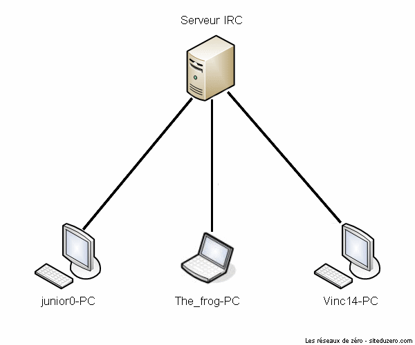
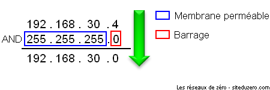
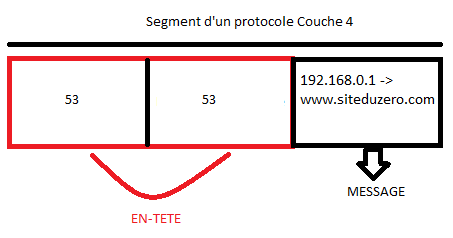

Vous êtes curieux ou passionné par les réseaux ? Vous êtes étudiant et avez du mal à appréhender et comprendre cet univers ? Vous êtes tombé au bon endroit ! Nous vous souhaitons la bienvenue dans ce tutoriel. Entrons tout de suite dans le vif du sujet. Avez-vous déjà entendu une discussion d'administrateurs réseau ? Vous avez probablement entendu des termes compliqués, qui vous semblent insignifiants comme réseau privé virtuel, protocole, niveau applicatif, UDP, transmission de paquets... Et alors quand ils parlent de leurs problèmes de configuration de routeurs, de passerelles, de serveurs DNS, vous vous dites qu'ils viennent d'une autre planète ! Rassurez-vous, ce tutoriel est là pour vous expliquer comment tout cela fonctionne.
Dans ce tuto, vous apprendrez des notions de base pour bien débuter, puis nous explorerons sur 3 parties le modèle OSI et les notions fondamentales qui gravitent autour. La suite, qui concernera les services, n'est pas encore disponible, mais quelques chapitres de sécurité, publiés de temps en temps en parallèle des autres, pourront vous intéresser. :)
Avant toute chose, il est indispensable de répondre à la question suivante : qu'est-ce qu'un réseau ? On pourrait définir le mot « réseau » en une phrase : Un réseau est un groupe d'entités en communication.
C'est quoi une entité ?
Une entité peut désigner une "chose" parmi d'autres. Par exemple, une personne dans un groupe de personnes est une entité de ce groupe. Pour rester dans cet exemple, on parle de réseau quand deux ou plusieurs personnes parlent ensemble.
C'est tout, un réseau c'est juste quand on parle ensemble ?
Oui, mais n'oubliez pas que "parlent ensemble" c'est aussi "s'échangent des informations" ! ;) Donc, en gros, un réseau consiste en l'échange d'informations, et il existe (dans la vie courante) plusieurs moyens d'échanges d'informations, sans faire intervenir la technologie (Internet, téléphone, etc.). Si on veut vous donner un livre, on prend le livre, et on vous tend la main, puis vous prenez le livre. :p Vous l'aurez compris, il existe plusieurs manières de partager des données entre les humains, sans les technologies.
Ce qui est intéressant, c'est que je peux envoyer (transmettre) un livre à André, en passant par Pierre.
Citation
- Eh Pierre, si tu vois André, passe lui le livre, et qu'il te le remette quand il aura fini de le lire.
Ce qui se passe dans ce cas est :
Je donne le livre à Pierre
Pierre trouve André et le lui donne
André a fini, il rend le livre à Pierre
Pierre vient me rendre le livre
Nous allons supposer dans ce cas présent que moi et André ne nous voyons pas, donc, Pierre est dans ce cas un intermédiaire. Justement, le principe d'intermédiaire est un des fondements des réseaux informatiques. Vous allez rapidement vous en rendre compte.
Si vous avez compris ce qu'est un réseau avec des humains, vous avez tout compris. Un réseau informatique est exactement pareil, sauf qu'il faut remplacer les humains par des machines. Hé oui. :D
Mais... mais... et les câbles, les adresses je-ne-sais-pas-quoi... ? On en fait quoi ? :euh:
On ne va pas se compliquer l'existence tout de suite hein. :-° Pour l'instant, on reste dans l'approche globale du réseau ; les liaisons et la configuration, on verra plus tard. Vous ne voulez quand même pas que l'on monte un réseau d'entreprise dès le premier chapitre, si ? o_O
Concrètement, un réseau informatique, ça sert à quoi ?
Et bien, sans réseau informatique, vous ne seriez pas en train de lire ce tuto déjà. :D De manière globale, un réseau informatique permet l'échange d'informations à distance. On peut trouver plein d'applications à un réseau : discuter avec une personne, s'échanger des documents, jouer en ligne...
Dans un tutoriel sur les réseaux informatiques, on ne pouvait pas manquer de parler d'Internet, bien évidemment. Mais à l'origine, pour accéder à Internet, on passe par une ligne téléphonique. C'est pourquoi, dans la catégorie réseau informatique, on distingue deux types de réseaux :
Réseau Internet
Réseau Télécom
Le réseau Internet
Le réseau Internet est le réseau permettant la communication entre différents ordinateurs connectés à Internet. Quand un ordinateur est connecté à ce réseau, on dit qu'il a accès à Internet. On confond parfois ce réseau avec le World Wide Web, alors qu'il y a une grande différence entre ces deux notions.
Le World Wide Web
Le World Wide Web, ou Web pour faire plus court, est l'ensemble des sites Web (appelés par abus de langage "sites Internet") présents sur le réseau Internet. La toile, comme on dit parfois en français, c'est donc l'ensemble de tous les sites Web que nous pouvons visiter grace à notre navigateur Web (Firefox, Opera, ...).
Internet
Internet, par contre, c'est l'ensemble des nœuds (connexions, câbles, etc.) entre les machines qui nous donnent accès au web. Internet est donc l'ensemble des réseaux qui nous permettent de partager des données sur la toile (entre autres, car il n'existe pas que le web sur Internet). Donc, quand une personne vous demande si vous avez Internet, elle veut savoir si votre ordinateur a accès à Internet. Par ailleurs c'est encore un abus de langage que de dire que l'on a Internet : ce réseau gigantesque n'appartenant à personne, on ne peut qu'avoir accès à Internet.
Le réseau Télécom
Étymologiquement, le mot télécommunication (abrégé télécom) signifie communication à distance. Le réseau Télécom a donc pour but d'assurer la communication à distance, par la transmission électrique de la voix. Ce réseau est similaire au réseau Internet en plusieurs points, comme l'identité unique, les "sous-réseaux" formés par les délimitations territoriales... Nous ne pouvons pas expliquer ça dès le début, mais soyez patient(e) : vous comprendrez l'analogie dans peu de temps. ;)
On espère que ce chapitre ne vous a pas ennuyé, car il est primordial si l'on veut avancer dans le cours. Nous avons abordé le fonctionnement de la transmission des données, en nous inspirant de la vie courante. L'exemple n'était certes pas original, mais il est tout de même très pratique pour comprendre les adresses, les protocoles, etc. Vous n'allez pas tarder à vous en rendre compte !
Maintenant que nous avons défini ce qu'est un réseau, nous allons pouvoir étudier de quoi c'est composé. :)
Il faut savoir que pour construire un réseau, il faut du matériel. Tout comme il faut un moteur, des roues et autres pour construire une voiture. Nous verrons donc quels sont les appareils et comment ils sont reliés entre eux : câbles, transmission sans fil, etc.
En informatique, les médias d'accès sont les moyens utilisés pour rendre possible la communication (l'échange des informations) entre les ordinateurs. Voyons divers moyens de connecter des ordinateurs entre eux.
Les câbles
Un des médias d'accès les plus utilisés est le câble. Les câbles sont des liaisons physiques entre ordinateurs. Mais il en existe différentes sortes, nous allons en voir 2 principales.
Câble Ethernet
Le câble Ethernet est sûrement le type de câble le plus utilisé pour connecter des ordinateurs entre eux dans un réseau local. À moins que votre réseau soit entièrement sans-fil, vous en avez sûrement chez vous. Il relie généralement un ordinateur personnel à un routeur (ce que l'on appelle parfois une "box"). Le nom "scientifique" (si l'on peut appeler ça comme ça) du câble Ethernet est "câble UTP-CAT5 (Unshielded Twisted Pair Category 5)" ou "câble UTP-CAT6 (Unshielded Twisted Pair Category 6)". La différence entre les deux catégories ? Tout simplement le débit : le CAT5 permet un débit de 100 mégabits par seconde alors que le CAT6 supporte le gigabit par seconde. Il existe deux types de câble Ethernet : les câbles Ethernet droits et les câbles Ethernet croisés. Ces derniers permettent de relier directement entre eux deux ordinateurs alors que les câbles droits servent à relier un ordinateur à un autre appareil comme un hub ou un switch que nous allons vous présenter dans ce chapitre.
Comment faire pour reconnaître un câble droit d'un câble croisé ?
Généralement, c'est marqué sur l'emballage. :D Si vous n'avez plus l'emballage, il suffit de regarder les embouts des câbles :
(Cliquez pour agrandir)
Sur cette photo, on voit que les couleurs des fils à l'intérieur des embouts sont dans le même ordre sur les deux connecteurs : c'est donc un câble droit. Si le premier fil en partant de la gauche est inversé avec le 3ème et que le 2ème est inversé avec le 6ème, c'est un câble croisé. Sinon, c'est un câble dit "bâtard", mais c'est rare. Ce type de câble est parfois appelé "câble RJ-45" : c'est un abus de langage, RJ-45 est le nom de l'interface du câble (en gros, son embout).
Câble téléphonique
Le câble téléphonique est communément appelé RJ11 (Registered Jack 11). Ici aussi c'est un abus de langage, RJ11 n'est pas le câble, mais bien l'interface. C'est ce que l'on peut utiliser pour le téléphone et le modem. Néanmoins, en France, ce type de câble est peu utilisé : les prises en T sont très courantes.
Ce tutoriel n'ayant pas pour objectif d'aller dans les détails techniques électroniques qui constituent ces câbles et leurs spécificités, ces notions seront suffisantes pour le moment. Si vous voulez approfondir vos notions sur les câblages, nous vous conseillons Google et Wikipedia. ;)
Le monde du sans-fil
L'air est aussi un média d'accès en réseau informatique. C'est un espace global qui englobe d'autres médias d'accès, dont nous allons parler. On peut diffuser des ondes électromagnétiques dans l'air et dans l'espace : ce sont ces ondes qui permettent de transporter des informations.
Le Bluetooth
Le Bluetooth, qui signifie littéralement dent bleue ( :D ) est une technologie développée par plusieurs entreprises (Agere, IBM, Intel, Microsoft, Motorola, Nokia et Toshiba) permettant la communication en utilisant l'espace hertzien (qui permet la diffusion d'ondes radio) entre les équipements électroniques, afin de minimiser l'utilisation des câbles entre les imprimantes, ordinateurs, scanners, PDA, téléphones, etc. Ce système exploite donc les ondes radio. D'ailleurs, vous allez apprendre du vocabulaire aujourd'hui : quand plusieurs entités sont en communication par le biais du Bluetooth, ce réseau formé est qualifié de piconet ;) . Piconet vient de pico-network, en français on peut traduire ça par picoréseau. Dans un picoréseau, les appareils utilisent la relation maître-esclave : le maître donne des ordres, l'esclave obéit. Quand plusieurs picoréseaux sont reliés, les esclaves peuvent avoir plusieurs maîtres, on parle alors de scatternet ou inter-réseau. Le mot "scatternet" signifie littéralement "réseau dispersé".
Voici des schémas expliquant ces 2 types de réseaux (piconet et scatternet) :
Un piconet, ou picoréseau
Un scatternet
Pour la petite histoire, le nom Bluetooth vient d'un roi danois qui s'appellait Harald Ier, surnommé Harald Blåtand, ce qui signifie "l'homme à la dent bleue". :D
Il existe 3 classes en Bluetooth : la classe 1, la 2 et la 3. Ce qui les différencie est juste la portée. Dans la classe 1, la portée peut aller jusqu'à 100 mètres, dans la catégorie 2, elle est d'une dizaine de mètres, et dans la classe 3, elle est de quelques mètres seulement (moins de 10). C'est cette 3ème classe qui est utilisée dans les téléphones portables.
L'infrarouge
L'infrarouge est un autre moyen de transmission des données sans fil, qui exploite la lumière. Il est moins pratique que le Bluetooth car il faut que les périphériques qui communiquent entre eux soient à moins de 1,50m de distance. Ils doivent aussi être alignés : la lumière ne se propage pas dans les environs comme les ondes radio. Autrefois, beaucoup de téléphones utilisaient l'infrarouge, mais il s'est rapidement fait remplacer par le Bluetooth, bien que certains appareils utilisent les deux. Il existe toujours actuellement des imprimantes, souris, claviers sans fil utilisant infrarouge.
Le Wi-Fi
Le Wi-Fi est certainement le moyen de transmission de données sans fil le plus utilisé. Sa portée pouvant excéder les 200 mètres en espace ouvert et sa vitesse de débit théorique de plus de 100 mégabits par seconde (Mbps) ont permis une démocratisation de cette technologie qui est aujourd'hui très utilisée dans les réseaux locaux pour accéder à Internet. Il est impressionnant de constater le nombre de points d'accès Wi-Fi sécurisés ou non que l'on peut capter un peu partout. "Wi-Fi" peut être considéré comme le nom commercial de la norme IEEE 802.11, norme qui régit cette technologie.
Ces méthodes de transmission d'information ne serviraient à rien si l'on n'avait pas de matériel pour les exploiter... Heureusement, il y en a, et pas qu'un peu ! :D
La carte réseau est le composant le plus important, elle est indispensable. C'est par elle que transitent toutes les données à envoyer et à recevoir du réseau dans un ordinateur. Il n'y a pas grand chose à dire sur cet appareil. La seule chose que vous devez connaitre, c'est la notion d'adresse MAC : c'est l'adresse physique de la carte. Elle permet d'identifier la machine dans un réseau, un peu comme l'adresse IP. Nous ne devrions pas encore en parler, mais il serait bien difficile de comprendre le fonctionnement de certains matériels... Pour faire court et ne pas vous embrouiller si tôt, l'adresse physique est relative à la carte réseau. Elle lui est attribuée à sa fabrication et ne peut pas changer (ce n'est pas tout à fait vrai, mais l'idée est là). L'adresse IP est relative au réseau : elle change tout bonnement suivant le réseau. Vous comprendrez mieux ce que sont ces adresses dans la sous-partie sur le commutateur (switch). La carte réseau est aussi appelée NIC en anglais, pour Network Interface Card. Voici à quoi peut ressembler une carte réseau :
Une carte réseau La carte réseau de la photo comporte un port femelle Ethernet : ce port peut accueillir un câble Ethernet mâle (connecteur RJ45). Les cartes réseau internes sont souvent des cartes PCI, c'est à dire qu'elles s'enfoncent dans un port PCI.
Un hub est un dispositif en réseau qui permet de mettre plusieurs ordinateurs en contact. Définition pas très précise, puisque tout dispositif en réseau (ou presque) a le même but. :-° Bref, ce qu'il faut retenir est qu'un hub est très bête, enfin, moins intelligent que les autres. Ce qu'il fait est tout simple : il reçoit des données par un port, et envoie ce qu'il reçoit aux autres. Il a une interface de réception (un port) et une interface de diffusion (plusieurs autres ports par où les autres ordinateurs sont connectés). Attention, une interface permet la réception ET la diffusion. Comme vous pouvez le voir sur la photo ci-dessous, le hub n'a pas juste deux interfaces physiques, où on entre par la gauche et on ressort à droite, non ! L'interface de réception est logique. Exemple : j'ai un hub à 4 ports, avec 4 ordinateurs connectés. J'ai le port 1, 2, 3, 4 (ici, interface = port). Si l'ordinateur 4 (au port 4) veut communiquer avec les autres, moi le hub, je reçois les données au port 4 (c'est mon port de réception), je renvoie les données aux ports 1, 2, et 3 : ce sont les ports de diffusion.
Un hub, ou concentrateur Ce qu'on lui reproche est le manque de confidentialité, et oui, le hub ne garde pas de secret : tout ce qu'un ordinateur lui dit, il l'envoie aux autres. Heureusement, les autres vérifient bien si ça leur est destiné, et si ça ne l'est pas, ils laissent tomber les données et ne les lisent pas.
C'est toujours sécurisant, non ?
Non, pas du tout, à partir du moment où les données arrivent jusqu'à la carte réseau, elles peuvent toujours être lues (mais on est pas là pour un cours de sécurité informatique).
Commutateur (switch) et routeur : si peu ressemblants et si similaires
Le commutateur (ou switch) et le routeur sont 2 appareils fondamentalement différents, et pourtant, leurs rôles se ressemblent tellement ! Au delà de leur architecture, il faut comprendre leur différence au niveau d'un réseau.
Le commutateur : juste une histoire d'échange de données
Un commutateur fonctionne à peu près comme un hub, sauf qu'il est plus discret et intelligent. Il n'envoie pas tout ce qu'il reçoit à tout le monde, mais il l'envoie uniquement au destinataire. Si l'ordinateur 1 envoie des données à l'ordinateur 2, seul ce dernier les recevra et pas les autres connectés. Afin de déterminer l'ordinateur à qui il faut renvoyer les données, le switch se base sur les adresses physiques (adresses MAC) des cartes réseau. Pour faire une analogie avec la vie réelle, une adresse MAC est un peu comme une adresse postale. C'est une suite de 6 nombres hexadécimaux, par exemple 00-16-D4-C7-6E-D3. Si vous ne savez pas ce qu'est l'hexadécimal, ce n'est pas bien grave mais vous devriez quand même en prendre connaissance, on en a souvent besoin en informatique (et pas qu'en réseau). Nous n'étudierons pas les adresses MAC dans ce chapitre, elles seront étudiées à partir de la partie 3, lorsque nous aborderons réellement la communication dans un réseau.
Un commutateur transmet donc des données aux autres ordinateurs en se basant sur leurs adresses MAC. Les transmissions sont plus confidentielles, les autres ne savent rien des données ne leur étant pas destinées.
Un commutateur ou switch
Le routeur, un véritable ordinateur
Un routeur ressemble à un switch sur le plan de l'utilisation : en effet, il permet de mettre plusieurs ordinateurs en réseau. Mais cela va plus loin : il permet de mettre en contact 2 réseaux fondamentalement différents. Dans une petite installation, avec un ou plusieurs ordinateurs connectés à une "box" (qui est en fait un routeur), il est la frontière entre le réseau local et Internet.
Un routeur a plusieurs interfaces. Pour continuer dans notre exemple de frontière avec Internet, il possède une interface connectée à Internet (généralement, cela se traduit par un câble branché sur la prise téléphonique) et plusieurs autres interfaces sur lesquels se connectent des ordinateurs voulant accéder à Internet (ce qui se traduit généralement par des câbles Ethernet ou des connexions Wi-Fi).
Un répéteur (repeater en anglais) agit un peu comme un hub, mais ce dernier n'a que 2 interfaces. Son intérêt est de renvoyer ce qu'il reçoit par l'interface de réception sur l'interface d'émission, mais plus fort. On dit qu'il regénère et réémet le signal. En transmission sans fil (radio, téléphone) on parle aussi de relais. Un répéteur permet de couvrir des distances plus grandes que les distances maximales fixées par le matériel que l'on utilise : par exemple, dans un réseau sans fil (Wi-Fi), la portée maximale entre 2 appareils est d'environ 50 mètres en intérieur. En plaçant un répéteur peu avant ces 50 mètres, vous pouvez connecter 2 appareils à 100 mètres de distance. Le fait que les informations soient renvoyées "plus fort" peut dégrader la qualité du signal dans les réseaux sans fil. Pour prendre un exemple parlant, en radiophonie, si l'on se trouve trop loin d'un relais, la qualité du son que l'on entend est dégradée.
Afin de conclure ce chapitre, nous allons récapituler le matériel vu et son utilité. Un tableau récapitulatif vaut mieux qu'un long discours :
Matériel
Utilité
Carte réseau
La carte réseau est le matériel de base indispensable, qui traite tout au sujet de la communication dans le monde du réseau.
Concentrateur (hub)
Le concentrateur permet de relier plusieurs ordinateurs entre eux, mais on lui reproche le manque de confidentialité.
Commutateur (switch)
Le commutateur fonctionne comme le concentrateur, sauf qu'il transmet des données aux destinataires en se basant sur leurs adresses MAC (adresses physiques). Chaque machine reçoit seulement ce qui lui est adressé.
Routeur
Le routeur permet d'assurer la communication entre différents réseaux pouvant être fondamentalement différents (réseau local et Internet).
Répéteur
Le répéteur reçoit des données par une interface de réception et les renvoie plus fort par l'interface d'émission. On parle aussi de relais en téléphonie et radiophonie.
Dans ce chapitre de culture informatique, nous avons examiné différents composants que l'on peut utiliser en réseau. Il est vraiment important de comprendre leur fonctionnement pour pouvoir choisir ce qui sera utilisé dans différents cas.
Mais on en fait quoi de tout ce matériel ? Les câbles, on les branche où ? Quelles machines doivent être reliées entre elles ? Rendez-vous au prochain chapitre pour répondre à ces questions !
Avant tout, il faut que vous connaissiez quelques types de réseaux, cela aidera à comprendre pourquoi certaines topologies existent.
LAN : le réseau local
Un LAN, Local Area Network (en français réseau local) est un réseau limité à un espace géographique comme un bâtiment. Par exemple, l'ensemble des ordinateurs dans une école forme un LAN. Ce type de réseau utilise généralement une configuration de type domaine comme nous l'avons vu précédemment.
WAN : le réseau étendu
WAN signifie Wide Area Network, en français, on peut le traduire par "réseau étendu". Un WAN est en fait une association de plusieurs LAN. Supposons 3 LAN formés par des switchs : le "branchement" des 3 switchs sur un autre switch forme un WAN, car on associe plusieurs LAN entre eux. Nous pourrons l'utiliser pour obtenir un seul réseau virtuel dans deux endroits géographiques différents. Cet exemple peut être contesté, car on parle plus souvent de WAN pour des réseaux très grands, à échelle régionale voire nationale, mais l'idée est là.
Bonne question, qu'est-ce qu'une topologie ? Tout d'abord, il faut savoir qu'il existe deux types de topologies : physique et logique.
Topologie physique
Une topologie physique est en fait la structure physique de votre réseau. C'est donc la forme, l'apparence du réseau. ;) Il existe plusieurs topologies physiques : le bus, l'étoile (la plus utilisée), le mesh (topologie maillée), l'anneau, hybride, etc. Cependant nous n'allons parler que des plus utilisées.
Topologie logique
Une topologie logique est la structure logique d'une topologie physique, c'est à dire que la topologie logique définit comment se passe la communication dans la topologie physique. ;)
Comme son nom l'indique, la topologie bus a les caractéristiques d'un bus (pensez, une ligne droite). Dans cette topologie, tous les ordinateurs sont connectés entre eux par le biais d'un seul câble réseau débuté et terminé par des terminateurs. Les terminateurs ont pour but de maintenir les frames (signaux électriques de données) dans le câble et d'empêcher les "rebonds" des données le long du fil. ;) Franchement, ce n'est pas pratique du tout, et ce pour 2 raisons majeures. La première est que, parce que toutes les machines utilisent le même câble, s'il vient à ne plus fonctionner, alors le réseau n'existe plus. Il n'y a plus de communication possible étant donné que tous les hôtes partagent un câble commun. La seconde est que, puisque que le câble est commun, la vitesse de transmission est très faible. :( Il y a d'autres raisons qui font que cette topologie est très peu utilisée.
Dans cette topologie, étant donné que le câble de transmission est commun, il ne faut pas que 2 machines communiquent simultanément, sinon... Bam, ça créé des collisions ! :o Pour éviter ce problème, on utilise une méthode d'accès appelée CSMA/CD. Avec cette méthode, une machine qui veut communiquer écoute le réseau pour déterminer si une autre machine est en train d'émettre. Si c'est le cas, elle attend que l'émission soit terminée pour commencer sa communication. Sinon, elle peut communiquer tout de suite.
C'est un peu complexe, heureusement que d'autres topologies plus simples et plus pratiques existent !
Dans un réseau en étoile, la forme physique du réseau ressemble à une étoile. Une image est plus parlante :
La forme physique du réseau ressemble à une étoile
N'importe quel appareil (routeur, commutateur, concentrateur, ...) peut être au centre d'un réseau en étoile. L'important, c'est que pour parler à une autre entité on passe par le matériel central (qui peut être le hub, le switch, etc.). En pratique, dans un réseau d'entreprise en étoile, au centre on trouve un switch. ;)
Le principal défaut de cette topologie, c'est que si l'élément central ne fonctionne plus, plus rien ne fonctionne : toute communication est impossible. Cependant, il n'y a pas de risque de collision de données.
Oui bon, le jeu de mot est pourri... Enfin, vous devez commencer à avoir l'habitude ! :-° On attaque un morceau assez compliqué, du moins plus complexe que ce qu'on a vu jusqu'à présent. Je vais donc essayer de faire simple (très contradictoire :D ). Comme vous pouvez vous en douter, un réseau en anneau a la forme d'un... anneau, oui, il n'y a pas de piège ! Cependant, la topologie physique d'un réseau en anneau est... le bus.
Mais alors un réseau en anneau c'est comme un réseau en bus avec les machines disposées en cercle ? o_O
Si on veut, mais il a une particularité : la topologie logique est le token ring.
Anneau à jeton ? On met un jeton dans la machine pour avoir un anneau ? >_
Pas du tout ! :D Rappelez-vous, la topologie de type bus possédait un problème de collision de données : 2 machines ne doivent pas échanger des données en même temps, sinon elles s'entrechoquent. Ce principe est repris dans le réseau en anneau. Sauf que là, le système de token ring utilise la CSMA-CA, une méthode anti-collision différente. Le principe est assez simple : une machine connectée au réseau possède un jeton virtuel. Ce jeton, c'est une autorisation de communiquer. Une fois que la machine a transmis ce qu'elle voulait, elle passe le jeton à la machine suivante, et ainsi de suite. Si le détenteur du jeton n'a rien à dire, il le passe au suivant.
Voici une animation décrivant de manière simplifiée le fonctionement logique d'un réseau en anneau. Le jeton rouge se transmet de machine en machine.
Réseau en anneau. Des ordinateurs attendent le jeton (token) pour transmettre des données.
La topologie maillée est LA topologie que je vous souhaite de ne jamais utiliser ! :D
Pourquoi ?
Et bien, c'est qu'il y a vraiment, vraiment, vraiment, vraiment... trop de câbles. :-° Le principe de la topologie maillée est de relier tous les ordinateurs entre eux (ou du moins, un maximum). Comme ça, aucun risque de panne générale si une machine tombe en rade, mais si vous vous prenez les pieds dans des câbles, étant donné qu'il y en a partout, c'est la cata, vous faîtes tout tomber ! :D La formule pour connaitre le nombre de câbles est n(n-1)/ 2, avec n le nombre d'ordinateurs. Donc rien qu'avec 8 ordinateurs par exemple, ça nous donnera 8(8-1)/ 2, soit 28 câbles ! o_O Cette topologie reste peu utilisée vu la difficulté à mettre en place une telle infrastructure. Histoire de vous faire halluciner, imaginez une école, où il y a 500 ordinateurs, si on voulait les relier tous entre eux. Ça ferait... 500*(500-1)/2 = ... Faîtes le calcul vous-même si vous ne me croyez pas, mais ça fait bien 124.750 câbles :waw: ! Il ne vaut mieux même pas penser au prix que peut coûter une centaine de milliers de câbles. En plus, chaque câble doit être relié à 2 cartes réseau, ça ferait 499 cartes réseau par machine, soit 249.500 cartes réseau en tout... Donc oui, ce n'est pas facile à mettre en place, et c'est utilisé sur de petits réseaux dans des cas bien précis. :lol:
Une topologie hybride, c'est très simple (enfin, dans le principe) : c'est juste le regroupement de plusieurs topologies différentes. Par exemple, Internet est une parfaite illustration d'un réseau hybride car il joint des réseaux en anneau avec des réseaux en bus, avec des réseaux en étoile, ... Rien de spécial au final. ^^
Il faut avouer que ce chapitre n'était pas vraiment difficile. Ce qu'il faut comprendre et maitriser, c'est la différence entre une topologie physique et une topologie logique. Dans le monde professionnel, on utilise généralement des topologies (physiques et logiques) de type étoile.
Maintenant qu'on a fait un rapide tour du matériel, il faudrait peut-être établir des communications ! Pour cela, direction la partie 2, où on va se pencher sur les protocoles et sur le modèle OSI ! :)
Maintenant que vous connaissez la théorie nécessaire, nous allons pouvoir passer à la seconde partie.
Avant d’étudier comment communiquent les hôtes dans un vaste réseau tel qu'Internet, il nous faut comprendre ce qu'est un protocole pour commencer.
"A protocol is a set of rules that define how communication occurs in a network" C'est la définition la plus basique d'un protocole que vous retrouverez certainement dans plusieurs cours anglais de réseaux. En français, on dit qu'un protocole est un ensemble de règles qui définissent comment se produit une communication dans un réseau. Pour mieux appréhender cela, nous allons considérer deux analogies.
Le protocole : un genre de pilote
Un protocole joue un peu le même rôle qu'un pilote : ils ont beaucoup de similitudes. Un pilote permet au matériel de communiquer avec le système. En d'autres termes, un pilote c'est le protocole de communication entre le matériel et le système. Sans un pilote, votre souris ne peut pas fonctionner, elle ne peut pas communiquer avec le système. Vous comprenez donc que le pilote est l'interface de communication entre le système et le matériel, il en est de même pour le protocole.
Le protocole : un genre de langue
Communiquer est l’une des activités les plus courantes. Les personnes qui communiquent ne peuvent se comprendre que dans deux cas :
Si elles parlent la même langue
Si elles ont un intermédiaire qui parle leurs deux langues respectives pour faire office d'interprète
Mais une langue que les humains parlent, qu’est-ce que c’est au final ? D'après Wikipédia, une langue est un système constitué de signes linguistiques, vocaux, graphiques, gestuels, tenu en cohésion par des règles précises qui, lorsque respectées, permettent la communication. ;) En réseau, c’est la même chose. La langue que les humains parlent, c’est un protocole pour les hôtes dans un réseau. Pas n’importe quel protocole, car il en existe plusieurs. Mais celui qui nous concerne est appelé « protocole de communication ». Quant à l'interprète de notre exemple, dans un réseau, ce sera la passerelle (applicative) qui permettra de faire communiquer deux réseaux basés sur des protocoles différents en assurant plusieurs fonctions telles que la traduction des protocoles et des signaux, l'isolation d'erreurs, l'adaptation d'impédances, etc. Si vous ne comprennez pas ces termes techniques, ce n'est pas important pour l'instant.
Bien ! Vous avez compris le concept de protocole ? Maintenant essayons de voir à quoi ça sert dans un réseau. Pour comprendre cela, très souvent, on utilise une analogie que nous qualifions de « classique » en réseau, car plusieurs professeurs utilisent presque toujours cette dernière pour faire assimiler les fonctions assurées par un protocole. Il s'agit de la communication téléphonique entre deux humains.
Pierre veut transmettre un message à Jean. Il compose donc son numéro de téléphone et il peut entendre la tonalité (tuuuut... tuuuuut...). Il attend que Jean décroche, car la communication ne peut avoir lieu qu'à ce moment-là. Jean, de son côté, entend son téléphone sonner. Il décroche, et c'est là qu'intervient le classique « Allô ?». :p À ce niveau, la « session de communication » est établie, c'est-à-dire que Pierre peut maintenant dire à Jean ce qu'il a en tête. Il va donc gentiment se présenter : « Salut, c'est Pierre… » et évoquer le contexte ou la raison de son appel : « C'était juste pour te dire que demain, il y aura une fête chez Anne-Sophie, qui habite au numéro 10 de la rue Lézard ! ». Jean peut éventuellement demander à Pierre de répéter, pour être sûr d'avoir bien saisi son message : « Chez qui ? Anne qui ? ». Alors Pierre répétera cette partie pour que Jean comprenne. Finalement, la conversation terminée, il faut se séparer en douceur ( :-° ) . Un classique « salut » ou « au revoir » des deux côtés avant qu'ils ne raccrochent leurs combinés.
Les protocoles nous permettent de faire tout ça. Essayons un peu de réexaminer ce scénario avec un langage un peu plus informatique. ;)
Citation
Pierre veut transmettre un message à Jean. Il compose donc son numéro de téléphone et il peut entendre la tonalité (tuuuut... tuuuuut...). Il attend que Jean décroche, car la communication ne peut avoir lieu qu'à ce moment-là.
L'hôte Pierre, à l'adresse IP 124.23.42.13, souhaite communiquer avec l'hôte Jean à l'adresse IP 124.23.12.13. Il lui enverra un paquet de demande d'initialisation de session (il compose son numéro et attend que Jean décroche et dise « Allô »). À ce stade, il peut se passer quatre choses dans le contexte naturel :
1. Le numéro est incorrect
2. Le numéro est correct mais indisponible
3. Le numéro est correct et Jean décroche en disant « Allô »
4. Le numéro est correct, disponible, mais Jean ne décroche pas (c'est donc un peu comme le cas 2 ;) )
Étudions ces cas :
Cas 1 : Pierre aura un message vocal disant « Le numéro que vous avez composé n'existe pas ». En réseau ce sera un ICMP packet (Internet Control Message Protocol) qui enverra une erreur de type 3 (destination unreachable, destination inaccessible) et de code 7 (Destination host unknown, destinataire inconnu).
Cas 2 : Ici, un message vocal dira à Pierre « L'abonné que vous souhaitez appeler est injoignable pour l'instant, veuillez rappeler dans quelques instants ». En réseau, il s'agira également d'une erreur de type 3.
Cas 3 : Si le numéro est correct et que Jean décroche en disant « Allô », c'est le début de la conversation. En réseau on dira donc qu'une session a été initialisée. ;)
Cas 4 : Ici, classiquement, ce sera le répondeur de Jean qui dira « Je ne suis pas disponible pour l'instant, laissez-moi un message, je vous rappellerai dès que possible ». En réseau, c'est un peu différent. L'hôte Pierre va recevoir une erreur ICMP de type 3 (destination inaccessible) et de code 1 (destinataire inaccessible). En gros, c'est pour dire qu'on n'arrive pas à atteindre le destinataire. En fait, si un numéro de téléphone est disponible, sonne, mais que personne ne répond, ça veut dire qu'on n'a pas atteint le destinataire final en fait. Donc c'est un peu pareil que le cas 2.
Continuons l'analyse de notre analogie. :)
Citation
« C'était juste pour te dire que demain, il y aura une fête chez Anne-Sophie, qui habite au numéro 10 de la rue Lézard ». Jean peut éventuellement demander à Pierre de répéter, pour être sûr d'avoir bien saisi son message « Chez qui ? Anne qui ? ». Alors Pierre répétera cette partie pour que Jean comprenne.
Si Jean demande à Pierre de répéter quelque chose, de façon radicale on peut conclure qu'il n'a pas reçu ce que Pierre a dit (si l'on considère que recevoir un message = comprendre le message). En réseau, l'hôte Jean va envoyer un paquet à Pierre disant « je n'ai pas reçu le dernier paquet, renvoie-le stp ». Pierre va alors renvoyer le dernier paquet. En fait, c'est un peu plus précis que ça. Suivant le protocole que vous utilisez (UDP ou TCP, nous allons les comparer dans les prochains chapitres), Pierre peut demander à la fin de chaque phrase si Jean a compris. En réseau, l'hôte Pierre pourrait donc demander un message d'accusé de réception à chaque envoi de paquet, et l'hôte Jean devra répondre « oui j'ai reçu, envoie le prochain » tout le long de la communication si l'on utilise le protocole TCP qui est dit connection-oriented (orienté connexion) par opposition au protocole UDP qui est dit connectionless-oriented. Tenez-vous tranquille, avec TCP on peut faire encore plus fort que ça.
Qu'est-ce qui se passe, si Pierre se met à raconter sa vie à raconter une histoire à Jean et que ce dernier dépose le combiné et s'en va faire un tour aux toilettes sans prévenir ? Pierre aurait perdu son temps en parlant pour rien ! Pour prévenir ce genre de chose, Pierre peut vérifier la présence de Jean en demandant toutes les x minutes « Tu me suis ? Tu es là ? ». En réseau, avec TCP il s'agit d'une vérification périodique de l'état de la session de communication. Ceci dit, l'hôte Pierre enverra un paquet de « vérification de session » pour savoir si l'hôte Jean est toujours connecté. Si Jean ne répond pas après un certain laps de temps, la communication est terminée (la session se termine là).
Citation
Finalement, la conversation terminée, il faut se séparer en douceur. :-° Un classique « salut » ou « au revoir » des deux côtés avant qu'ils ne raccrochent leurs combinés.
À ce stade la session de communication est terminée.
Un protocole de communication digne de ce nom doit remplir quelques exigences rigoureuses. Un protocole est un ensemble de règles dictant comment doit s'effectuer la communication entre deux entités. Ceci dit, il faudrait que ledit protocole soit en mesure d'assurer des fonctions vitales au bon déroulement d'une communication. Il existe plusieurs « fonctions vitales » (comprendre exigences) qu'un protocole de communication doit être capable de remplir. Dans la sous-partie précédente, nous avons vu quelques-unes de ces fonctions le long de l'exemple sans vous les pointer directement. Parmi ces fonctions figurent en bonne et auguste posture :
La gestion du format des données : Un protocole, comme nous l'avons répété, définit comment s'effectue la communication. Or, qui dit communication dit échanges de données. Le protocole doit donc avoir des « fonctions » permettant de gérer le format de ces données. Nous verrons plus tard dans quelle couche du modèle OSI on trouve ces services de formatage. En général, les données seront constituées de deux choses : d'une entête et du contenu. L'entête sera un peu « réservée » au protocole. C'est à ce niveau que l'on trouve des informations « techniques » tandis que le contenu... bah, c'est le contenu ! :D
La gestion du format d'adresses : Durant la procédure de transmission des données, il faudrait bien gérer les adresses : qui est l'émetteur, qui est le destinataire ? Dans une communication dans le monde naturel, quand on écrit une lettre, dans l'entête, on met l'adresse de l'émetteur et celle du destinataire, et même sur l'enveloppe d'ailleurs. Si on ne le fait pas, on ne sait pas à qui envoyer la lettre, et celui qui la reçoit ne sait même pas si elle lui est destinée et de qui elle provient. Par comparaison, dans l'entête des données « encapsulées », il faudrait qu'un protocole soit en mesure de spécifier l'adresse de l'émetteur et du destinataire.
Correspondance d'adresses: Quand vous inscrivez l'adresse du destinataire sur une enveloppe, cette dernière est "logique". Logique dans ce sens que le destinataire n'habite pas sur cette enveloppe ( ^^ ), mais cette adresse indique l'adresse physique du destinataire, là où vous pouvez le trouver si vous vous y rendez physiquement. ;) Le facteur doit donc faire une correspondance entre cette adresse logique sur l'enveloppe et l'adresse physique. Par analogie, un protocole doit assurer des fonctions de correspondance entre les adresses logiques (IP) et les adresses physiques (MAC). Cette correspondance s'appelle « address mapping » en anglais. ;)
Routage : Nous allons couvrir cette notion avec plus de détails que ce que l'on vous a appris dans la partie II du cours. Mais vous êtes sans ignorer que le routage consiste à « diriger » les données entre deux réseaux d'un plan d'adressage différent.
Détection d'erreurs de transmission : Il se peut qu'une erreur se produise dans la procédure de transmission des informations. Un protocole devrait donc être en mesure de détecter ces erreurs. Comme nous allons le voir, il s'agit d'un CRC (Cyclic Redundancy Check, Contrôle de Redondance Cyclique) qui est ajouté à la fin des paquets.
Accusé de réception : Quand vous recevez un mail, très souvent vous y répondez. Cette réponse informe explicitement à l'émetteur que vous avez reçu son mail. C'est en quelque sorte un accusé de réception. Certains protocoles permettent donc à un hôte récepteur d'informer un hôte émetteur qu'il a reçu le paquet envoyé pour empêcher ce dernier de renvoyer les mêmes choses. D'autres par contre n'implémentent pas cette fonction.
La gestion de perte d'informations : De même que des erreurs peuvent se produire lors de la transmission, il peut y avoir des pertes d'informations. Pertes ? Dans un réseau ? Oui ! Généralement quand un paquet met trop du temps à arriver à son destinataire, "il se perd". :D Voilà pourquoi c'est important qu'un protocole gère la reconnaissance des paquets. Si l'hôte-récepteur B répond dans un intervalle de x secondes à l'hôte-émetteur A, ce dernier saura alors que B a bien reçu les données, et n'essaiera plus de les renvoyer. Si B par contre ne répond pas à A, ce dernier peut donc conclure que les données « se sont perdues » et va les renvoyer dans un espace de temps déterminé par le protocole.
La direction du flux d'informations : A et B peuvent-ils communiquer (s'échanger des données) simultanément ? Si oui, il s'agit d'un système de communication full-duplex. Sinon, il s'agit d'un système de communication half-duplex. Nous allons en parler un peu plus tard dans cette partie du cours. :) Un protocole doit donc dicter la direction de flux dans la communication pour empêcher à deux hôtes de communiquer simultanément dans un système half-duplex par exemple.
Contrôle de séquences : Toute information envoyée sur un réseau est segmentée en plusieurs « séquences » (nous y reviendrons). Elles sont ensuite envoyées au destinataire. Selon la congestion (le degré d'occupation) des routes qu'elles vont emprunter, elles peuvent arriver « en désordre », ou même en double (s'il y a eu des retransmissions). Grâce au contrôle de séquences d'un protocole, on peut « numéroter » chaque « morceau » afin que le destinataire sache les « remettre en ordre » ou supprimer les doublons. Nous allons voir comment fonctionne cette « segmentation » en étudiant le protocole BitTorrent.
Gestion de flux : Quand deux personnes parlent, il est nécessaire de donner à celui qui "écoute" le temps de comprendre ce qui est dit, puisqu'il se peut que l'émetteur parle plus vite que le récepteur. Il faut donc gérer cette volubilité, ce flux. Dans les réseaux, il y a des cas où un hôte-émetteur peut transmettre plus vite que ne peut recevoir un hôte-récepteur. C'est là qu'intervient l'utilité de la gestion des flux.
Un seul protocole peut faire tout ça ? :waw:
Mais non ! :D Les fonctions citées ne peuvent pas être réalisées par un seul protocole. Il s'agit d'une suite protocolaire, une suite de protocoles. Il y a des protocoles qui s'occupent de la transmission, d'autres du routage, etc. Une suite de protocoles est un ensemble de protocoles fonctionnant en harmonie et cohésion pour le bon déroulement de la communication. Vous avez déjà entendu l'expression « protocole TCP/IP » ? En fait, ce n'est pas un protocole. TCP en est un, IP en est un autre. Mais TCP/IP, ça fait deux. :D C'est une suite (une pile pour être précis) de protocoles en fait, protocol stack en anglais. ;)
Voilà, les bases sont posées ! Rendez-vous au prochain chapitre pour une introduction au modèle OSI ! :)
Voilà, vous savez ce qu'est un protocole, maintenant. Tout au long du cours, nous allons parler des protocoles les plus courants et importants. Mais avant cela, nous allons survoler un peu le modèle OSI, qui est à la base de la plupart des communications informatiques.
Ne soyez pas déçu(e) ! Nous n'en sommes qu'au début du cours, alors ce chapitre sera plus une introduction aux modèles que Le Modèle OSI de A à Z en vingt-cinq volumes... Mais ne vous inquiétez pas, cela viendra ! :diable:
Dans cette sous-partie, nous allons définir le plus simplement possible ce qu'est le modèle OSI. En effet, vous allez le comprendre, il n'y a aucun rapport avec la mode ni la 3D (si si, nous vous le jurons).
Qu'est-ce que le modèle OSI ?
Le modèle OSI (Open Systems Interconnection : « interconnexion de systèmes ouverts ») est une façon standardisée de segmenter en plusieurs blocs le processus de communication entre deux entités. Chaque bloc résultant de cette segmentation est appelé couche. Une couche est un ensemble de services accomplissant un but précis. La beauté de cette segmentation, c'est que chaque couche du modèle OSI communique avec la couche au-dessus et au-dessous d'elle (on parle également de couches adjacentes). La couche au-dessous pourvoit des services que la couche en cours utilise, et la couche en cours pourvoit des services dont la couche au-dessus d'elle aura besoin pour assurer son rôle. Voici un schéma pour illustrer ce principe de communication entre couches :
Ainsi le modèle OSI permet de comprendre de façon détaillée comment s'effectue la communication entre un ordinateur A et un ordinateur B. En effet, il se passe beaucoup de choses dans les coulisses entre l'instant t, où vous avez envoyé un mail (par exemple), et l'instant t1, où le destinataire le reçoit.
Le modèle OSI a segmenté la communication en sept couches :
Application (ou couche applicative).
Présentation.
Session.
Transport.
Réseau.
Liaison de données.
Physique.
Une façon efficace de connaître ces couches par cœur, de haut en bas et en anglais, serait de mémoriser la phrase suivante : All People Seem To Need Data Processing, ce qui signifie : « Tout le monde a besoin du traitement de données. » Chaque majuscule représente la première lettre d'une couche : A pour application, P pour présentation, S pour session, T pour transport, N pour réseau (network en anglais), D pour data (liaison de données) et finalement le dernier P (processing) pour physique.
De bas en haut, le moyen mnémotechnique anglais utilisé est Please Do Not Throw Sausage Pizza Away. Ce qui donne en français : « S’il vous plaît, ne jetez pas les saucisses de pizza. » Ces sacrés anglophones ont des inspirations hilarantes ! :lol: Un gentil zéro du nom de castor01 a proposé un moyen mnémotechnique en français pour retenir ces couches de bas en haut : Partout Le Roi Trouve Sa Place Assise. Ou encore : Pour Le Réseau, Tout Se Passe Automatiquement.
Oui, nous le savons, vous êtes impatient(e) ; néanmoins, allons-y lentement mais sûrement. ;) Nous n'allons rien vous enseigner de trop complexe, rassurez-vous. Nous avons pris l'habitude de toujours illustrer nos propos par un exemple concret, une analogie parlante.
Pour comprendre le modèle OSI, nous allons inventer un scénario. Vous vous souvenez de Pierre et de Jacques ? Oui, nos camarades d'antan ! Pierre garde une lettre dans son bureau. Il veut la donner au facteur, qui attend devant le portail de sa belle villa. La lettre est destinée à Jacques, mais Pierre n'a pas le droit d'entrer dans le bureau de Jacques. Jacques non plus n'a pas le droit de sortir de son bureau. Seul le facteur peut entrer dans le bureau de Jacques pour délivrer la lettre, mais il lui est interdit d'aller dans celui de Pierre pour la chercher. La maison de Pierre est mal construite : il n'y a pas de couloir, juste un alignement vertical de pièces séparées par une porte. Pour aller du bureau au portail, Pierre doit traverser le salon et le jardin. Schématiquement, cela donne ceci :
Dans le schéma ci-dessus, chaque pièce de la maison peut être considérée comme une couche. Pierre doit quitter la couche la plus élevée pour se diriger vers la plus basse (le portail). Une fois la lettre remise au facteur, ce dernier devra faire l'inverse chez Jacques, c'est-à-dire quitter la couche la plus basse pour aller vers la couche la plus élevée (le bureau de Jacques).
Chaque pièce de la maison possède une fonction précise. Le bureau est généralement réservé au travail ; le salon, à la distraction (discussions, télévision, etc.). Le jardin, lui, nous offre sa beauté et son air pur. Quant au portail, il permet d'accéder aussi bien au jardin qu'à la maison.
Faisons intervenir un autre personnage, Éric, dans notre histoire. Éric ne connaît absolument rien au processus de transfert de lettres. Alors quand Pierre lui dit : « J'ai écrit une lettre à Jacques », Éric imagine le scénario suivant :
Pierre a écrit la lettre.
Il l'a envoyée.
Jacques a reçu la lettre.
Éric, c'est un peu vous avant la lecture de ce tutoriel. ;) Vous pensiez sans doute qu'après avoir envoyé un mail, par exemple, M. le destinataire le recevait directement. Mais vous venez de comprendre grâce à l'exemple de la lettre que votre mail est passé par plusieurs couches avant d'arriver au destinataire. Cet exemple vous semble peut-être aberrant, mais nous pensons qu'il a aidé plusieurs personnes à mieux concevoir le principe du modèle OSI.
Nous y sommes presque ! Nous allons regarder le modèle OSI d'un œil plus technique, cela devrait vous plaire ! :D Le modèle OSI est donc constitué de sept couches distinctes. Dans chacune de ces couches opèrent un certain nombre de protocoles.
Comment ça fonctionne ?
Lorsque vous voulez envoyer un mail à l'équipe des rédacteurs de ce tutoriel (comment ça, ça ne vous tente pas ? :o ), plusieurs choses se passent en coulisses.
Couche applicative
Vous avez besoin d'accéder aux services réseaux. La couche applicative fait office d'interface pour vous donner accès à ces services, qui vous permettent notamment de transférer des fichiers, de rédiger un mail, d'établir une session à distance, de visualiser une page web… Plusieurs protocoles assurent ces services, dont FTP (pour le transfert des fichiers), Telnet (pour l'établissement des sessions à distance), SMTP (pour l'envoi d'un mail), etc.
Couche présentation
Il vous faut formater votre mail pour une bonne présentation. C'est dans la couche… présentation que cela se passe. Elle s'occupe de la sémantique, de la syntaxe, du cryptage/décryptage, bref, de tout aspect « visuel » de l'information. Un des services de cette couche, entre autres : la conversion d'un fichier codé en EBCDIC (Extended Binary Coded Decimal Interchange Code) vers un fichier codé en ASCII (American Standard Code for Information Interchange).
Couche session
Une fois que vous êtes prêt(e) à envoyer le mail, il faut établir une session entre les applications qui doivent communiquer. La couche session du modèle OSI vous permet principalement d'ouvrir une session, de la gérer et de la clore. La demande d'ouverture d'une session peut échouer. Si la session est terminée, la « reconnexion » s'effectuera dans cette couche.
Couche transport
Une fois la session établie, le mail doit être envoyé. La couche de transport se charge de préparer le mail à l'envoi. Le nom de cette couche peut prêter à confusion : elle n'est pas responsable du transport des données proprement dit, mais elle y contribue. En fait, ce sont les quatre dernières couches (transport, réseau, liaison de données et physique) qui toutes ensemble réalisent le transport des données. Cependant, chaque couche se spécialise. La couche de transport divise les données en plusieurs segments (ou séquences) et les réunit dans la couche transport de l'hôte récepteur (nous y reviendrons). Cette couche permet de choisir, en fonction des contraintes de communication, la meilleure façon d'envoyer une information. « Devrai-je m'assurer que la transmission a réussi, ou devrai-je juste l'envoyer et espérer que tout se passe bien ? Quel port devrai-je utiliser ? » La couche de transport modifie également l'en-tête des données en y ajoutant plusieurs informations, parmi lesquelles les numéros de ports de la source et de la destination. Le protocole TCP (Transmission Control Protocol) est le plus utilisé dans la couche de transport.
Couche réseau
Maintenant que nous savons quel numéro de port utiliser, il faut aussi préciser l'adresse IP du récepteur. La couche réseau se charge du routage (ou relai) des données du point A au point B et de l'adressage. Ici aussi, l'en-tête subit une modification. Il comprend désormais l'en-tête ajouté par la couche de transport, l'adresse IP source et l'adresse IP du destinataire. Se fait également dans cette couche le choix du mode de transport (mode connecté ou non connecté, nous y reviendrons là encore). Le protocole le plus utilisé à ce niveau est bien sûr le protocole IP.
La couche liaison
Présentation effectuée ? O.K. ! Session établie ? O.K. ! Transport en cours ? O.K. ! Adresses IP précisées ? O.K. !
Il reste maintenant à établir une liaison « physique » entre les deux hôtes. Là où la couche réseau effectue une liaison logique, la couche de liaison effectue une liaison de données physique. En fait, elle transforme la couche physique en une liaison, en assurant dans certains cas la correction d'erreurs qui peuvent survenir dans la couche physique. Elle fragmente les données en plusieurs trames, qui sont envoyées une par une dans un réseau local. Par conséquent, elle doit gérer l'acquittement des trames (nous… enfin bref, ce chapitre n'est qu'une introduction, vous l'avez compris :-° ). Quelques exemples de protocoles de cette couche : Ethernet, PPP (Point to Point Protocol), HDLC (High-Level Data Link Control), etc.
Finalement : la couche physique
Notre mail est en cours de transport, mettons-le sur le média. La couche physique reçoit les trames de la couche de liaison de données et les « convertit » en une succession de bits qui sont ensuite mis sur le média pour l'envoi. Cette couche se charge donc de la transmission des signaux électriques ou optiques entre les hôtes en communication. On y trouve des services tels que la détection de collisions, le multiplexing, la modulation, le circuit switching, etc.
Résumé
Nous avons abordé, en donnant quelques détails, chacune des couches du modèle OSI ; voici un tableau récapitulatif.
Position dans le modèle OSI
Nom de la couche
Rôle de la couche
7
Application
Point de contact avec les services réseaux.
6
Présentation
Elle s'occupe de tout aspect lié à la présentation des données : format, cryptage, encodage, etc.
5
Session
Responsable de l'initialisation de la session, de sa gestion et de sa fermeture.
4
Transport
Choix du protocole de transmission et préparation de l'envoi des données. Elle spécifie le numéro de port utilisé par l'application émettrice ainsi que le numéro de port de l'application réceptrice. Elle fragmente les données en plusieurs séquences (ou segments).
3
Réseau
Connexion logique entre les hôtes. Elle traite de tout ce qui concerne l'identification et le routage dans le réseau.
2
Liaison de données
Établissement d'une liaison physique entre les hôtes. Fragmente les données en plusieurs trames.
1
Physique
Conversion des trames en bits et transmission physique des données sur le média.
Processus de transmission/réception
Quand un hôte A envoie un message à un hôte B, le processus d'envoi va de la couche 7 (application) à la couche 1 (physique). En revanche, quand il s'agit de recevoir, le message emprunte le chemin inverse : il part de la couche 1 (physique) pour arriver à la couche 7 (application). Souvenez-vous de l'exemple de Pierre, Jacques et le facteur : Pierre quittait le salon pour le portail afin d'envoyer sa lettre, alors que le facteur quittait le portail et se dirigeait vers le bureau de Jacques pour la délivrer.
Vous vous êtes peut-être posé la question de savoir pourquoi le titre de cette partie était Les modèles de communication et les protocoles plutôt que Le modèle OSI et les protocoles. En effet, nous allons étudier deux modèles différents : TCP/IP et OSI. Nous allons commencer par revoir leurs origines et le but de leur création, ensuite nous comparerons leurs architectures respectives.
Il y a une génération…
Le modèle TCP/IP fut créé dans les années 1970 par le département de la Défense des États-Unis d’Amérique, plus précisément par l’agence DARPA (Defense Advanced Research Projects Agency). C’est pour cette raison que vous le trouverez aussi sous l’appellation DoD Model pour Department of Defense Model (« modèle du département de la Défense »). Quant au modèle OSI, il a été créé en 1978 par l’Organisation internationale pour la standardisation (ou ISO, International Organization for Standardization). C’est un certain Charles Bachman qui proposa la segmentation de la communication dans un réseau en sept couches distinctes.
Les buts de ces deux modèles ne sont pas les mêmes. En effet, le modèle OSI a été développé à vocation normative, c’est-à-dire pour servir de référence dans le déroulement de la communication entre deux hôtes. D'ailleurs, il est également connu sous les noms OSI Reference model (« modèle de référence OSI ») ou OSI-RM. Alors que le modèle TCP/IP a une vocation descriptive, c’est-à-dire qu'il décrit la façon dont se passe la communication entre deux hôtes. En d’autres termes, si vous voulez comprendre comment se déroule la communication « sur le terrain », prenez le modèle TCP/IP. Par contre, si vous voulez comprendre la suite logique, la procédure selon la norme, penchez-vous sur le modèle OSI. Ceci dit, c’est le modèle OSI qui vous servira de « plan » si vous voulez créer un protocole ou un matériel en réseau.
Comparaison dans la structure
Voici un schéma comparatif des deux modèles.
Comme vous le voyez, le modèle TCP/IP n’est constitué que de quatre couches. Ce sont des couches d’abstraction, autrement dit des couches qui cachent les détails d’implémentation de la communication et leurs noms ne reflètent pas mot pour mot les fonctions qu'elles assurent. Le modèle OSI, quant à lui, est fièrement constitué de sept couches. Les trois premières couches du modèle OSI correspondent à la couche applicative du modèle TCP/IP.
Les deux modèles possèdent une couche de transport. La couche réseau du modèle OSI correspond à la couche Internet(work) du modèle TCP/IP. Les couches liaison de données et physique du modèle OSI forment une seule couche pour le modèle TCP/IP : interface réseau. Les couches application, présentation, session et transport sont dites « couches hôtes » (host layers en anglais). En effet, ces couches « concernent » directement les hôtes. Les couches réseau, liaison et physique, elles, sont des couches de médias (media layers) : elles sont plus liées au média qu’à l’hôte. Voici un schéma illustrant cette correspondance :
Point vocabulaire : les unités de données
Au début de la communication entre deux hôtes, chaque information qui sera transmise est une donnée. Cependant, cette donnée a plusieurs unités selon la couche dans laquelle elle se trouve : il s’agit de la même donnée, mais sous plusieurs appellations. Prenons un exemple : votre père, vous l’appelez papa à la maison. Au travail, on l’appelle M. X ; chez son frère, ses neveux l’appellent tonton, etc. C’est bien la même personne, connue sous plusieurs appellations selon le milieu.
Ainsi, les données que vous transmettez sont tout simplement appelées unité de données (data unit en anglais). On les nomme parfois PDU (Protocol Data Unit : « unité de données de protocole ») ; dans ce cas, leur nom sera précédé de l'initiale de la couche dont ces données sont issues. Par exemple dans la couche applicative, elles prennent le nom d'APDU (Application Protocol Data Unit : « unité de données de protocole d’application »). Dans la couche de session, elles s’appelleront donc... SPDU (Session Protocol Data Unit : « unité de données de protocole de session »). Même principe pour la couche de présentation. Une fois dans la couche de transport, où elles sont segmentées, ces données deviennent logiquement des segments. (Nous les avons appelés séquences dans le chapitre précédent.)
Dans la couche réseau du modèle OSI, ces données prennent le nom de paquets ; dans les couches liaison et physique, respectivement ceux de frame (trame) et bit.
Voici une image résumant cela pour votre plus grand plaisir. :D Les acronymes dans l’image ci-dessous sont en anglais parce qu'ils sont plus courts. :p Vous ne devriez pas avoir de difficulté à les comprendre puisque leurs équivalents français sont juste plus haut.
Faites attention à l’abstraction des noms de couches
Les noms des couches des modèles TCP/IP ou OSI sont abstraits, voilà pourquoi nous vous avons parlé de couches d’abstraction. Leurs noms ne sont pas toujours synonymes de leurs fonctions et peuvent par moments être vagues. Par exemple, la couche application du modèle OSI ne veut pas dire grand-chose. Quand vous lisez application, est-ce que cela vous donne une idée de la fonction de cette couche ? Ce nom n’est pas si explicite. La couche transport des deux modèles est certainement la plus abstraite dans sa dénomination. Quand on lit transport, on a tendance à croire que cette couche transporte vraiment les données jusqu’à son destinataire — alors que la transmission s’effectue à la couche 1 (physique) du modèle OSI et à la couche interface réseau du modèle TCP/IP. Par contre, la couche réseau est la moins abstraite, l’on comprend tout de suite qu’il s’agit de l’exercice des fonctions intimement liées au réseau.
Critiques du modèle OSI
En dehors de l’abstraction des noms de couches, dont le modèle TCP/IP est également coupable, les reproches faits à ce modèle relèvent de quatre domaines : la technologie, l’implémentation, la durée de recherche et l’investissement.
La technologie
Par technologie, nous voulons parler de degré de complexité. Le modèle OSI est plus complexe que le modèle TCP/IP. En effet, sept couches contre quatre : y a pas photo ! :D Cette complexité peut faire douter de l’utilité de certaines couches. Par exemple, les couches présentation et session sont assez rarement utilisées. Lorsque l’ISO a voulu « neutraliser » la normalisation/standardisation du modèle OSI, les Britanniques n’ont pas hésité à demander la suppression de ces couches-là. Comme nous l’avons vu en survolant les couches de ce modèle, certaines fonctions se partagent entre plusieurs niveaux. Par conséquent, la complexité même du modèle OSI réduit l’efficacité de la communication.
L’implémentation
À cause de la complexité de ce modèle, ses premières implémentations ont été très difficiles, lourdes et surtout lentes.
La durée et l’investissement
En technologie, il faut sortir le bon produit au bon moment, n’est-ce pas ? OSI n’a pas respecté cette règle. Les recherches de l’ISO pour mettre au point un modèle normalisé ont pris du temps : OSI est sorti alors que le modèle TCP/IP était déjà utilisé. De ce fait, l’ISO a rencontré des difficultés pour trouver un investissement, le monde n’étant pas tellement intéressé par une deuxième suite de protocoles.
Critiques du modèle TCP/IP
N’allez pas croire que le modèle TCP/IP est parfait ! Nous pouvons lui reprocher plusieurs choses :
Contrairement au modèle OSI, TCP/IP ne distingue pas clairement le concept de services réseaux, des interfaces et des protocoles. Par conséquent, il ne respecte même pas la bonne procédure de l’ingénierie logicielle.
Le modèle TCP/IP est un peu « carré ». Nous voulons dire par là qu'il est tellement spécifique que l’on ne peut pas se servir de ce modèle pour en décrire un autre, alors que le modèle OSI peut être utilisé pour décrire le principe du modèle TCP/IP.
Interface réseau : c'est ainsi que l'académie Cisco appelle cette couche du modèle TCP/IP. La RFC 1122 la nomme tout simplement lien ; on la trouve aussi sous l'appellation hôte-à-réseau (host-to-network). Cette couche a été fortement critiquée parce qu’il ne s’agit pas d’une couche à proprement parler, mais d’une interface entre le réseau et la liaison de données.
Le modèle TCP/IP ne fait pas la distinction entre la couche physique et la couche liaison de données. En principe, la couche physique devrait être une couche à part, car elle « conclut » la transmission grâce à la mise sur média.
Et maintenant : le verdict des juges
Après avoir comparé les deux modèles, l’heure est à la sanction au verdict !
En conclusion à cette analyse/critique des deux modèles, il est clair que TCP/IP a plus de succès qu'OSI. Mais ce succès est simplement dû au fait que les protocoles de ce modèle sont les plus utilisés. Sans ses protocoles, le modèle TCP/IP serait pratiquement inexistant. Par contre, le modèle OSI, avec ou sans protocoles, est la parfaite norme dictant la procédure de communication. Plusieurs personnes ont sanctionné le modèle OSI au profit de TCP/IP et, d’après elles, TCP/IP gagnerait ce duel. Cependant, je (ce n’est peut-être pas l’avis de tous les rédacteurs de ce tutoriel, mais de celui qui rédige en ce moment) ne partage pas cet avis, et après quelques recherches fructueuses, je me déclare pro-OSI. Je voterais même pour le remplacement du modèle TCP/IP. La seule chose que je peux reprocher au modèle OSI, qui est encore d’actualité, est la présence des couches présentation et session — qui sont presque inutiles. Sans elles, le modèle OSI serait, pour moi, le modèle idéal. Cette conviction est également fondée sur le rapport analytique publié en 2004 par Internet Mark 2 Project, intitulé Internet Analysis Report 2004 - Protocols and Governance. (« Rapport de l’analyse d’Internet - Protocoles et gouvernance »). Vous pouvez télécharger un résumé de ce rapport gratuitement ici et le rapport complet (en anglais) se trouve là.
Si le modèle OSI est meilleur que le TCP/IP, pourquoi ce dernier a-t-il plus de succès ?
TCP/IP est sorti, et fut donc largement utilisé, avant le modèle OSI. De cette utilisation massive découle une complexité de migration vers un autre modèle, d'où le maintien du succès de TCP/IP.
Je ne comprends pas l’anglais, mais je veux lire le rapport de l’analyse. Une solution ?
Chaque couche du modèle OSI a une fonction déterminée. Nous avons vu que la couche en cours utilise les services de la couche au-dessous d’elle qui, à son tour, en offre pour la couche du dessous. Cette corrélation indique bien que certaines informations peuvent se retrouver d'une couche à une autre. Cela n’est possible que grâce au principe d’encapsulation. L’encapsulation consiste à encapsuler. :-° En d'autres termes, elle consiste à envelopper les données à chaque couche du modèle OSI.
Quand vous écrivez une lettre (pas un mail), vous devez la glisser dans une enveloppe. C’est à peu près le même principe dans le modèle OSI : les données sont enveloppées à chaque couche et le nom de l’unité de données n'est rien d'autre que le nom de l’enveloppe. Nous avons vu dans la sous-partie précédente que, dans la couche applicative, l’unité de données était l’APDU (ou plus simplement le PDU). Ensuite, nous avons vu que dans la couche réseau, l’unité de données était le paquet. Ces PDU forment une sorte d'enveloppe qui contient deux choses : la donnée en elle-même et l’en-tête spécifique à cette couche. La partie « donnée » de ce paquet est composée de la donnée initiale, mais aussi des en-têtes des couches qui la précèdent. Il existe une toute petite formule mathématique définissant la relation entre les couches. Ce n’est pas difficile, pas la peine de fuir !
Considérons l’image ci-dessous :
Soit C une couche du modèle OSI. La couche C + 1 utilise les services de la couche C. Facile, n’est-ce pas ? La couche session utilise les services de la couche transport, par exemple. La donnée que la couche C + 1 transmet à la couche C est appelée SDU tant qu’elle n’a pas encore été encapsulée par cette dernière. Si, par contre, la couche C encapsule ce SDU, on l’appelle désormais… PDU.
Quelle est donc la relation entre le PDU et le SDU ?
Dans une couche C, le PDU est le SDU de la couche C + 1 plus son en-tête (couche C). Ce SDU ne devient un PDU qu'après l’encapsulation. La couche C ajoute des informations dans l’en-tête (header) ou le pied (trailer), voire les deux, du SDU afin de le transformer en un PDU. Ce PDU sera alors le SDU de la couche C - 1. Donc le PDU est un SDU encapsulé avec un en-tête.
Voici la constitution d'un PDU :
Comprendre la relation entre un SDU et un PDU peut être complexe. Pour vous simplifier la tâche, nous allons considérer un exemple inspiré du monde réel et vous aurez ensuite droit à un schéma.
Quand vous écrivez une (vraie) lettre, c'est un SDU. Vous la mettez dans une enveloppe sur laquelle est écrite une adresse. Cette lettre qui n’était qu’un SDU devient un PDU du fait qu’elle a été enveloppée (encapsulée). Votre lettre arrive à la poste. Un agent du service postal regarde le code postal du destinataire et place la lettre dans un sac. Mais on ne la voit plus, puisqu’elle est dans un sac. Pour l'instant, la lettre, l’enveloppe et le sac forment un SDU. L’agent du service postal va alors inscrire le code postal du destinataire sur le sac en question, qui devient donc un PDU. S'il contient d’autres lettres partant pour la même ville, elles seront alors toutes mises dans une caisse : c’est un SDU. Tout comme on a ajouté des informations sur l’enveloppe et sur le sac, il faut également mettre un code postal sur la caisse. Cet ajout fait de cette caisse un PDU.
Voilà pour la procédure de transmission. Mais pour la réception, les sacs à l’intérieur de la caisse (des SDU) sont enlevés lorsqu'elle atteint sa destination. Attention, c’est ici que vous devez être très attentif/attentive. Si un individu prend un sac et en lit le code postal pour l’acheminer à son destinataire, le sac n’est plus considéré comme un SDU mais comme un PDU. C’était un SDU au moment de sa sortie de la caisse. Étant donné qu’il y a des informations de plus sur le sac, c’est un PDU pour celui qui les lit.
Lorsque le destinataire recevra la lettre, les informations ajoutées sur le sac ou sur la caisse ne seront plus visibles : il ne restera plus qu’une enveloppe contenant la lettre originale (un SDU).
Tenez, un schéma illustrant l'encapsulation des SDU dans le modèle OSI :
Comme vous le voyez, au début nous n’avons que les données initiales, que l’on pourrait également appeler données d’application. La donnée initiale à ce stade est un SDU. Une fois dans la couche applicative, un en-tête AH (Application Header : « en-tête d’application ») est ajouté à cette donnée initiale. La donnée de la couche applicative est un APDU. La couche applicative transmet cela à la couche de présentation au-dessous. Cette donnée transmise est un SDU. Par l’encapsulation, cette couche ajoute un en-tête PH au SDU de la couche applicative. La couche de présentation envoie ce « nouveau » message à la couche de session et cette dernière encapsule son header avec le SDU obtenu de la couche présentation pour former son SPDU. Et ainsi de suite jusqu’à la couche liaison, qui a la particularité d’ajouter également un trailer. Finalement, toutes ces données sont converties en une série de bits et mises sur le média pour la transmission.
Vous pouvez également constater que toutes les informations ajoutées dans la couche supérieure se retrouvent dans la couche inférieure. Ainsi dans la couche réseau, par exemple, on retrouve la donnée initiale + l’en-tête d’application (AH) + PH + SH + TH. Toutes ces « informations » seront considérées par la couche réseau comme la donnée initiale. Dans cet exemple, la couche réseau ne s’occupe donc que de son propre en-tête.
Si, à chaque couche, l’en-tête est ajouté à la donnée initiale, ne serait-ce pas compromettre l’intégralité du message ?
Qui peut répondre à cela ? :D Très belle question, soit dit en passant. ;) Chaque couche ajoute à la donnée initiale un en-tête. De la sorte, tous les en-têtes sont réunis dans la couche de liaison. Lorsque ces informations seront converties en une suite de bits, le récepteur devrait recevoir des données erronées puisque la donnée initiale n’avait pas tous ces en-têtes, n’est-ce pas ? En principe. Mais le modèle OSI (ou le modèle TCP/IP) est assez intelligent. En effet, dans la procédure de réception, chaque en-tête est enlevé lorsque le message « grimpe » les couches, tel qu’illustré par le schéma ci-dessous. Cette « suppression » d’en-tête, c’est la décapsulation !
Comme vous le voyez sur le schéma, dans la procédure de réception, chaque couche supprime son en-tête correspondant après l’avoir lu. Par exemple, l’en-tête NH (réseau) est supprimé dans la couche réseau de l’hôte récepteur après que ce dernier l’a lu.
Maintenant que vous savez à quoi il sert, nous allons entrer dans les coulisses du modèle OSI par le haut. Pourquoi pas par le bas ? Parce qu'il est plus facile de descendre des escaliers que de les monter. Parce que nous estimons qu'il est plus intéressant de commencer par ce qui est plus proche de nous, à savoir les applications que nous utilisons.
Dans ce chapitre, nous allons étudier les trois dernières couches du modèle OSI, à savoir, de haut en bas : la couche applicative (7), la couche de présentation (6) et la couche de session (5).
Les couches 7, 6 et 5 du modèle OSI correspondent à une seule couche applicative dans le modèle TCP/IP, voilà pourquoi nous allons les étudier dans une même sous-partie.
Couche 7 : application
À votre grande surprise, vous apprendrez que cette couche n’a pas de rôle défini. En fait, il s'agit seulement d'une couche-interface. Le terme « interface », comme nous l’avons vu, sous-entend que cette couche sert de point de contact ou d’interaction entre l’utilisateur que vous êtes et les services en réseaux. Par exemple, votre navigateur web est une application qui vous permet d’être en contact avec un service offert par le protocole HTTP (HyperText Transfer Protocol). Quand vous utilisez votre messagerie, vous êtes en interaction avec la couche applicative. La couche applicative héberge principalement :
Des API (Application Programming Interface : « interface de programmation d’application ») : une API est grosso-modo un ensemble de fonctions permettant à un programme externe d’interagir avec un programme interne pour ne pas exposer le code source. Vous n'êtes pas obligés de savoir ce qu’est une API, mais notez que les API offrant des fonctions de réseaux se trouvent dans la couche application.
Des services : plusieurs services en réseaux tels que la navigation Internet, la messagerie, la résolution de noms de domaine sont concentrés dans cette couche.
Cette couche regorge de protocoles tels que :
FTP ;
HTTP ;
TFTP ;
Telnet ;
SMTP.
Nous n’allons pas étudier tous les protocoles de cette couche (il y en a tellement…) mais en examiner quelques-uns qui sont plutôt intéressants et simples à comprendre.
Couche 6 : présentation
Le nom de cette couche est suffisamment explicite : la couche 6 s’occupe de tout ce qui a trait à la présentation. En d'autres termes, elle offre des services permettant de convertir des données d’un système d’encodage à un autre (de l'EBCDIC vers l'ASCII, par exemple), de compresser des fichiers, de les crypter, etc. Lorsque vous utilisez Winzip, un logiciel de compression, vous utilisez un service de la couche 6 du modèle OSI. Par conséquent, c’est dans cette couche que nous trouvons des protocoles — que nous n'allons pas étudier — tels que LPP (Lightweight Presentation Protocol), NDR (Network Data Representation) ou encore NCP (NetWare Core Protocol).
Un détail souvent omis lorsqu’on traite cette couche est qu’elle se subdivise en deux (sous-)couches. Détail peu important puisque l’union de ces deux sous-couches forme la couche en elle-même. Cependant, afin d’enrichir vos connaissances, voici un schéma illustrant les deux couches qui composent la couche présentation du modèle OSI.
La sous-couche CASE (Common Application Service Element : « élément de service pour les applications courantes ») se charge d’offrir des services pour… les applications courantes ; tandis que SASE (Specific Application Service Element : « élément de service pour une application spécifique »), comme son acronyme l’indique, offre des services pour des applications précises. Si l'explication vous paraît ambiguë, ne vous en faites pas : vous comprendrez tout de même la suite du tutoriel. ;)
Couche 5 : le gestionnaire de session
Tout est dans le titre. La couche 5 du modèle OSI a la responsabilité de l’ouverture, de la fermeture et de la gestion des sessions entre les applications. Les deux services principaux offerts par cette couche sont la gestion des sessions (ouverture, fermeture, restauration) et la gestion des permissions (quelle application peut faire quoi).
Les protocoles de la couche 5, tels que X.225, peuvent déterminer la direction de la communication. Il existe deux types de communication :
Half Duplex (HDX) : système de communication permettant l’échange par tour. Si deux entités A et B sont membres d’un réseau fondé sur ce système de communication, elles ne peuvent pas échanger de données au même moment. Chacune doit attendre son tour !
Full Duplex (FDX) : l'exact contraire du HDX. A et B peuvent communiquer simultanément sans que cela ne pose problème.
Voici deux schémas illustrant ces deux systèmes de communication.
Vous savez maintenant à quoi sert la couche applicative des modèles TCP/IP et OSI. Mais nous ne vous avons pas inculqué le concept de cette couche pour nous arrêter en si bon chemin. ;) Nous allons donc explorer quelques protocoles de cette couche, en commençant par un protocole de partage : le célèbre BitTorrent.
La naissance de BitTorrent
Conçu par Bram Cohen, BitTorrent est un protocole permettant le partage de fichiers de taille importante. BitTorrent est sans conteste le protocole de partage le plus utilisé sur Internet et ne vous est certainement pas inconnu. Créé en 2001, son développement continu est assuré par l'entreprise BitTorrent, Inc. Avec BitTorrent, l'échange ou le partage de fichiers se fait dans une infrastructure Peer2Peer (« pair-à-pair »). Par opposition à une architecture centralisée, le pair-à-pair relie les hôtes directement en formant une sorte de topologie maillée.
Pourquoi avoir créé BitTorrent ?
Le succès de BitTorrent est sans doute dû à la minimisation de surcharge du réseau de partage. Imaginez un serveur qui hébergerait 10 000 vidéos. Que se passerait-il si un million d'utilisateurs téléchargeaient simultanément la même vidéo sur ce serveur ? Il aurait à répondre à un million de requêtes à la fois, ce qui ralentirait significativement le réseau de partage. Plus le nombre d'internautes essayant d'accéder à un même fichier au même moment est grand, plus le fichier devient difficilement accessible à cause de la congestion du réseau. C'est de ce constat qu'est né le protocole BitTorrent.
Le fonctionnement de BitTorrent
Et si chaque utilisateur devenait à la fois client et serveur ? Telle est la question que le créateur de BitTorrent a dû se poser. Le fonctionnement de ce protocole de partage est en effet le suivant : si un utilisateur X télécharge un film Y provenant d'un serveur Z, les autres utilisateurs pourront télécharger le même film à travers X pour ne pas alourdir le serveur de base Z.
Pour mieux comprendre ce principe, voici une animation illustrant un réseau utilisant un protocole de partage classique (client-serveur) :
Comme vous pouvez le voir dans cette animation, le serveur envoie quatre copies de ladite vidéo aux quatre clients.
À présent, voici une animation décrivant un partage via BitTorrent.
BitTorrent minimise la congestion du réseau en coupant le fichier en plusieurs portions. Tous les clients en reçoivent une, puis ils font office de serveurs les uns pour les autres jusqu'à ce que chaque client ait reçu toutes les portions du fichier. Certes, les portions seront reçues dans le désordre, mais BitTorrent est assez intelligent pour les réagencer correctement. C'est ce qu'on appelle le contrôle de séquence (ça vous dit quelque chose ?). ;) BitTorrent est donc un protocole très pratique et économe. Pas étonnant que Facebook et Twitter l'utilisent pour la distribution des mises à jour sur leurs serveurs !
La terminologie de BitTorrent
En matière de réseaux, le vocabulaire est très important. Nous allons donc parcourir quelques termes propres au protocole que nous étudions.
Les semences et les semeurs
Vous avez certainement déjà rencontré les termes seed et seeder. Seed est un mot anglais signifiant « semence ». Un seeder est un pair (en anglais peer) dans le réseau de partage qui a en sa possession une copie complète d'un fichier. Le seeder a la totalité du fichier en partage, alors que le peer n'a en général qu'une partie dudit fichier. Dans notre animation, chaque ordinateur qui détient une portion de la vidéo est un peer. À la fin du téléchargement, il devient seeder étant donné qu'il a acquis la totalité de la vidéo. Le seeder est donc un « semeur » qui distribue un seed dans le réseau, comme un jardinier répartirait des semences à la surface de la terre.
Les essaims
Avez-vous déjà entendu l'expression « essaim d'abeilles » ? Un essaim est un groupement important d'insectes d'une même famille. Par exemple, les zéros sont un essaim : ils forment un groupement important d'insectes sur un même site. :-° Avec BitTorrent, un essaim (swarm en anglais) est formé par les peers partageant un même torrent. Si sept seeders et sept autres peers ont tous un torrent en commun, ils forment un essaim de quatorze unités.
Le traqueur : Big Brother
Un tracker (« traqueur ») n'est rien d'autre qu'un serveur dans le réseau de partage. Cependant, il n'est pas directement impliqué dans la transmission ou dans le partage — d'ailleurs, il ne possède pas de copie du fichier partagé. En quelque sorte, il sert de policier en gardant en mémoire les traces laissées par les seeds et les peers de l'essaim. Il informe également les clients, desquels il reçoit des comptes rendus périodiques, de la présence d'autres clients auxquels ils peuvent se connecter.
Les sangsues et les lâches
Il y a des sangsues dans un protocole ? o_O
Oh que oui ! Une sangsue (leech en anglais) est un ver qui se nourrit du sang d'autres êtres vivants. Dans un réseau de partage, on qualifie de sangsue tout client qui télécharge plus qu'il ne partage. On parle également de lurker (de l'anglais to lurk : « se cacher », « se dissimuler »). En gros, c'est un lâche. On utilise le terme lurker pour faire référence à un client qui télécharge sans ajouter de contenu nouveau au réseau. La différence entre un lurker et un leech(er) est assez mince. Un leech décide parfois de lui-même de ne plus semer après avoir téléchargé, alors que le lurker, même s'il n'uploade aucune nouveauté, a la bonne pratique de partager ce qu'il télécharge.
Le ratio de partage (share ratio)
Le ratio de partage permet d'évaluer la contribution d'un client à un réseau de partage. Il est obtenu en divisant le nombre de partages par le nombre de téléchargements. Il est souhaitable qu'un client ait un ratio de partage supérieur à 1, c'est-à-dire qu'il partage plus qu'il ne télécharge. En revanche, un ratio de partage inférieur à 1 veut dire qu'un client est plus impliqué dans le téléchargement que dans le partage.
En ce qui concerne les termes propres à BitTorrent, nous allons nous arrêter là. Nous vous invitons à faire une recherche sur Internet à chaque fois que vous tomberez sur l'un des termes que nous n'avons pas abordés. Pour ceux qui désirent poursuivre l'exploration de BitTorrent, nous vous recommandons le tutoriel de Natim qui est bien plus complet que notre présentation. ;)
Le service de messagerie (instantanée ou non) est sans doute le plus utilisé de nos jours quotidiennement. Enfin, en dehors de Facebook. :-° Chacun de nous est amené à consulter ses mails régulièrement, voire à en rédiger. La messagerie électronique nous a facilité la tâche en réduisant le temps de rédaction et d'acheminement d'un courrier. Ça vous dirait de voir comment ça se passe dans les coulisses ? Nous allons donc étudier le fonctionnement d'un protocole nous permettant d'envoyer un message électronique.
Présentation rapide de SMTP
SMTP (Simple Mail Transfer Protocol : « protocole simple de transfert de courrier ») a été créé dans les années 1970, aux débuts d'Internet. Comme tout bon protocole qui se veut être un standard, il a fallu qu'il soit spécifié par une requête de commentaires (RFC). C'est donc en 1982 qu'il est spécifié par la RFC 821. Une RFC de 2008 comprenait des mises à jour de la première implémentation de ce protocole : la RFC 5321.
SMTP a commencé à être massivement utilisé au début des années 1980. Il sert principalement à envoyer des mails. Comme son nom l'indique, il s'agit d'un protocole de transmission et non de réception. Cependant, les serveurs de messagerie utilisent SMTP pour faire les deux, c'est-à-dire la transmission et la réception, cette dernière n'étant en fait qu'une transmission, n'est-ce pas ? Comment ça, vous ne le saviez pas ? :o En voici une démonstration :
Vous écrivez une lettre (physique) à un ami au Japon.
La lettre arrive à la poste centrale du Japon.
La poste centrale va à son tour transmettre la lettre au domicile de votre camarade.
Vous avez confié la lettre à la poste, qui l'a envoyée au destinataire. Pour vous et pour la poste, il s'agit d'une transmission ; pour votre ami, d'une réception. La réception n'est donc qu'une autre transmission. ^^
Ainsi, les serveurs de messagerie utilisent SMTP pour la transmission et la réception, tandis que les clients de messagerie utilisent SMTP pour l'envoi et un autre protocole (POP ou IMAP) pour la réception. Nous allons étudier ces protocoles de retrait dans la sous-partie suivante.
SMTP sert donc à transmettre un mail, mais n'a-t-il pas besoin d'utiliser un protocole de transmission ?
La probabilité que vous vous soyez posé cette question est proche de zéro. :lol: Mais bon… SMTP est un protocole de transfert. Or pour transférer, il faut un autre protocole de transmission.
Un protocole peut en utiliser un autre ? :waw:
Les protocoles qui assurent la transmission se trouvent dans la couche de transport. Par conséquent, un protocole de transfert de la couche application (comme SMTP) ne peut se passer d'un protocole de transmission de la couche transport (UDP ou TCP). Nous étudierons et comparerons justement les protocoles de transport dans la partie 4 du cours.
Cheminement d'un courriel
Maintenant, nous allons voir les étapes par lesquelles passe un courriel avant d'atteindre son destinataire. Comme il est de coutume dans ce tutoriel, nous allons commencer par une analogie qui ne doit pas vous être inconnue. Pierre (encore lui) habite à Paris. Il veut écrire une lettre à André, qui habite Lyon. Dans notre scénario, la procédure de transmission/réception de la lettre se fera ainsi :
Pierre écrit la lettre.
Le facteur vient la chercher.
La lettre arrive à la poste locale.
La poste envoie la lettre à Lyon.
Elle arrive à la poste locale de Lyon.
Un facteur est chargé de la porter au domicile d'André.
André reçoit la lettre.
Hormis l'étape 1 (écriture de la lettre) et l'étape 7 (réception), la lettre est passée entre les mains du facteur, de la poste locale, de la poste distante (celle de Lyon) et d'un autre facteur. Soit quatre étapes.
Voici un schéma illustrant ces étapes :
Et alors, où est le rapport avec le protocole SMTP ?
Avez-vous déjà oublié que la technologie s'inspire de la vie quotidienne ? Le protocole SMTP suivra exactement le même principe et votre mail passera lui aussi par quatre étapes : le facteur, la poste locale, la poste distante et un autre facteur (voir schéma suivant).
Quoi, il y a des bureaux de poste dans les réseaux ? o_O
Mais bien sûr. C'est d'ailleurs pour cela qu'il existe un protocole POP, acronyme de Post Office Protocole, soit littéralement « protocole de bureau de poste ».
D'abord vous nous dites que notre courriel passera par le facteur, la poste locale, etc. Mais maintenant vous nous parlez de MUA, de MTA… :euh:
Et alors ? Remplacez X par sa valeur ! :p
Le facteur de transmission correspond sur le schéma au MSA, les deux bureaux de poste sont des MTA et le facteur de réception est un MDA.
O.K., voulez-vous bien nous expliquer tout ça ? Et qu'est-ce que le MUA ?
Pas de panique !
Commençons par le MUA
Considérons que le papier et le stylo que vous utilisez pour écrire une lettre forment une « application de rédaction ». Dans la couche applicative, qui nous sert d'interface avec les services réseaux, le MUA (Mail User Agent : « client de messagerie ») n'est autre que l'application de rédaction d'un courriel, un client de messagerie. C'est une application, comme Outlook ou Thunderbird, qui vous permet de retirer des mails de votre boîte de réception et d'en écrire.
Je n'utilise aucun logiciel pour le retrait de mes mails, je le fais directement sur Hotmail/Yahoo/Gmail/autre. Alors, qu'en est-il ?
Hotmail et Cie sont également des MUA, plus précisément des webmails. Ce sont des applications auxquelles on accède par l'intermédiaire d'un navigateur.
Alors, dans notre schéma, Pierre utilise Outlook/Yahoo/autre pour écrire un courriel et clique sur… « Envoyer ». Direction : le MSA !
C'est quoi, ce MSA ?
MSA signifie Mail Submission Agent, soit « agent de soumission de courrier ». Comme son nom l'indique, son rôle est donc de soumettre le mail. O.K., mais à qui ? Dans notre scénario, le MSA est le facteur de transmission. Votre lettre ne peut pas quitter directement Pékin pour la terre Adélie, n'est-ce pas ? Surtout qu'il n'y a aucun habitant en terre Adélie. C'est pour l'exemple. :-° Le facteur se chargera de la conduire à la poste où les mesures nécessaires d'envoi seront prises pour l'acheminement de votre courrier à son destinataire, dans les plus brefs délais et dans des conditions normales de température et de pression satisfaisantes. Un MSA n'est en fait qu'un autre logiciel-interface, c'est-à-dire un intermédiaire entre votre client de messagerie et le serveur de messagerie (serveur Gmail ou autre).
Il est possible de fusionner un MTA et un MSA. Dans ce cas, on parle seulement de MTA — mais ce dernier assure également le rôle d'un MSA. Comme si, pour en revenir à notre scénario, vous décidiez d'aller vous-même déposer votre lettre à la poste locale au lieu de passer par un facteur.
MTA, l'agent de Jack Bauer de transfert
Un MTA ou Mail Transfer Agent est l'agent de transmission du courriel, tout comme le bureau de poste est l'agent de transmission de votre courrier. Mais le bureau de poste reçoit également les courriers externes pour les expédier à leurs destinataires respectifs. Voilà pourquoi nous voyons sur le schéma que le courrier passe d'un MTA à un autre, de la même manière que la lettre de Pierre passe du bureau de poste local de Paris à celui de Lyon.
Quand vous écrivez un mail à une personne dont l'adresse appartient à un autre domaine que la vôtre, il passe par un second MTA. Cependant, lorsqu'il s'agit d'un mail interne à un même domaine, il est directement pris en charge par le MDA sans passer par le second MTA. Un exemple ? Si Pierre écrit un courrier à Jacques et qu'ils habitent tous deux à Paris, la lettre ira à la poste locale via le facteur de transmission. Une fois à la poste, on enverra simplement un facteur de réception livrer la lettre puisqu'il est inutile de passer par la poste d'une autre ville.
Voici un schéma illustrant le transfert d'un mail entre deux clients dans un même domaine.
Voici à présent un autre schéma illustrant le transfert d'un mail entre deux clients de domaines différents.
Le MTA de Gmail étudiera la partie qui se trouve après le caractère @ dans l'adresse du destinataire afin de vérifier s'il s'agit d'un transfert de mail à un client du même domaine (un client Gmail en l'occurrence). Il se rendra compte que hotmail.com ne concerne pas son domaine et enverra donc le courriel au MTA du domaine de Hotmail.
Pour terminer : le grand MDA
Pour comprendre ce qu'est le MDA (Mail Delivery Agent : « agent livreur de courrier »), posons-nous deux questions.
Qu'est-ce qu'un livreur de pizzas ?
Un livreur de pizzas, c'est quelqu'un qui livre des pizzas. :-°
Quelle est la différence entre le facteur de transmission et le facteur de réception dans notre schéma ?
Voilà une question sérieuse ! Les deux sont des facteurs, les deux livrent donc des pizzas du courrier. Sauf que vous envoyez vous-même le premier (facteur de transmission) livrer le courrier, alors que le second (facteur de réception) est envoyé par le bureau de poste. Vous commandez une pizza, la demande est traitée et on vous envoie un livreur, n'est-ce pas ? Mais ce n'est pas vous qui avez donné l'ordre directement au livreur de vous apporter la pizza.
Voilà pourquoi nous faisons une nette distinction entre les deux facteurs. L'un s'appelle MSA et l'autre MDA pour les raisons évoquées ci-dessus. Nous disons au MSA : « Écoute, va transmettre ce mail à X » ; tandis que le MTA dit au MDA :« Tiens, X a reçu un mail, viens le chercher et le stocker. » Tout est clair ?
Quand les protocoles s'emmêlent...
Du MUA de Pierre au dernier MTA impliqué dans le processus de transmission, c'est le protocole SMTP qui est utilisé. Entre le MDA et le dernier MUA (celui d'André), c'est un protocole de réception qui est utilisé : POP, POP2 ou IMAP.
Vous pouvez également vous rendre compte que les MTA utilisent SMTP pour la transmission et la réception comme nous l'avons indiqué un peu plus haut. Suivez-nous dans la prochaine sous-partie pour une exploration de ces protocoles de retrait de mail !
Nous allons vous présenter seulement les protocoles POP et IMAP dans une même sous-partie, car ils servent à faire la même chose et que chacun présente des avantages que l'autre n'a pas. Commençons par le protocole POP.
Le bureau de poste version électronique : présentation
POP (Post Office Protocole : « protocole de bureau de poste ») a l'avantage d'être simple et efficace et surtout, il est supporté par tous les clients de messagerie. Pour comprendre le rôle assuré par ce protocole, nous allons examiner le rôle d'un bureau de poste dans la vie courante.
Quels sont les services offerts par un bureau de poste ?
La question peut paraître idiote, mais quand on sait qu'en France, La Poste est aussi opérateur de téléphonie mobile… :-° Cependant, nous n'allons retenir que les services qui concernent directement notre étude. Le bureau de poste a pour fonction principale de traiter les courriers : il les reçoit et les distribue à leurs destinataires respectifs. Il est également en contact avec les autres bureaux de poste distants.
En réseau, en ce qui concerne la messagerie électronique, le protocole POP fait plus ou moins la même chose. La différence avec un véritable service postal est que deux bureaux de poste de villes différentes peuvent échanger du courrier, alors que le protocole POP ne peut pas en envoyer. POP n'est qu'un protocole de retrait : il permet d'aller chercher un mail se situant sur un serveur de messagerie, mais pas d'en envoyer. L'envoi est assuré par le protocole SMTP.
Il existe trois versions de ce protocole : POP1, POP2 et POP3. La toute première version est spécifiée par la RFC 918. POP2 est spécifié par la RFC 937 et vous pouvez retrouver les spécifications de POP3 dans la RFC 1081. La spécification actuelle de ce protocole se trouve dans la RFC 1939, qui n'est en fait que la RFC 1081 incluant un mécanisme de gestion d'extension et un autre d'authentification. La RFC 2595 sécurise le protocole POP en l'utilisant de pair avec le protocole SSL (Secure Socket Layer) : on parle donc aussi de POP3S, avec un s pour SSL. Le protocole SSL a depuis été renommé TLS (Transport Layer Security). Nous n'allons pas étudier en détail le protocole POP : il existe déjà un tutoriel à ce sujet que nous vous invitons à lire.
Le protocole POP permet bien sûr de récupérer son courrier, mais aussi d'en laisser une copie sur le serveur. Cela est particulièrement utile si l'on ne peut plus accéder pour une raison quelconque (panne…) aux e-mails déjà téléchargés : on peut toujours les télécharger de nouveau. Néanmoins, il n'a pas vraiment été conçu pour cela, contrairement à IMAP.
IMAP : un protocole qui a la tête dans les nuages
IMAP (Internet Message Access Protocol) est un protocole de lecture d'e-mails. Contrairement à POP, il n'a pas été conçu pour recevoir des messages mais pour les consulter directement depuis un serveur. Cette consultation s'apparente à du clouding, c'est-à-dire l'accès par Internet à des données qui ne se trouvent pas sur notre disque dur. IMAP est assez avancé puisqu'il permet de gérer ses messages directement sur un serveur distant pour organiser nos messages en dossiers, par exemple. Il supporte également TLS. Dans le cas d'IMAP, le clouding est à la fois un avantage et un inconvénient : on peut accéder à ses messages depuis n'importe quel ordinateur, à condition d'être connecté à son compte de messagerie. Quelques clients permettent néanmoins de télécharger les messages pour pallier ce problème. Certains clients de messagerie ne gèrent pas très bien le protocole IMAP, qui est défini par la RFC 3501. Vous pouvez avoir plus de détails sur ce protocole en lisant ce tutoriel.
Voilà qui est fait ! On descend encore une marche ? Ah, on nous demande de nous identifier pour accéder à la couche suivante… Mais comment faire ? Eh bien, suivez-nous dans la prochaine partie pour découvrir l'identification et l'adressage, puis nous pourrons accéder à la couche 4 !
Faisons une pause dans notre descente des couches du modèle OSI. Nous allons maintenant étudier l'identification et l'adressage, qui sont des notions clés pour pouvoir descendre plus bas !
Pour communiquer, il faut savoir à qui on veut s'adresser ! Lorsque nous avons parlé du commutateur (ou switch) dans le chapitre sur le matériel, nous avons évoqué des moyens d'identification au sein du réseau : l'adresse IP et l'adresse MAC. Il est temps de voir ce que c'est, et pourquoi on a besoin de ces 2 types d'adresses.
Il est temps de parler de l'identification et de la communication dans un réseau. Nous allons aborder 2 notions : il s'agit des adresses IP et des adresses MAC. Nous allons les aborder une par une, et comprendre pourquoi il y a des adresses IP et des adresses MAC.
Adresse IP : l'adresse relative au réseau
Dans le premier chapitre, nous avons vu un exemple simple de la transmission d'un livre entre humains. Mais, pour transmettre un livre à André, vous devez savoir où il habite. Une adresse IP n'est "rien d'autre" que l'endroit où habite un ordinateur. Mais attention : cette adresse est relative au réseau. Une machine n'aura pas forcément la même adresse IP sur un réseau X et un réseau Y. Nous n'entrerons pas dans les détails pour le moment, l'adressage n'étant pas vraiment une base.
Les adresses IP sont le seul moyen d'identification des machines sur Internet. Mais il existe 2 versions du protocole Internet (la "manière" d'accéder à Internet en quelque sorte) : IPv4 et IPv6. Et chaque version utilise sa propre structure d'adresse IP.
Une "adresse IPv4" est constituée de 4 nombres correspondant à 4 octets compris entre 0 et 255, séparés par des points. Exemple : 88.45.124.201. De nos jours, ce sont les plus connues. Les "adresses IPv6" sont encore plus complexes : elles sont représentées par une suite de 8 groupes de 2 octets représentés en hexadécimal (je vous avais prévenu que c'était complexe :-° ). Exemple (tiré de Wikipédia) : 1fff:0000:0a88:85a3:0000:0000:ac1f:8001.
Cette explication de ce qu'est une adresse IP est acceptable pour l'instant, mais vous verrez pourquoi une adresse IP est plus complexe que ça. En fait elle agit un peu comme un signe distinctif : si dans une rue toutes les maisons sont identiques, comment faîtes-vous pour reconnaître celle d'André ou de Pierre ? Dans notre exemple, c'est en se basant sur le numéro affiché devant la maison. Mais s'il existe plusieurs rues ? Plusieurs maisons peuvent avoir le même numéro sans être au même emplacement. On peut comparer le nom d'une rue à un masque de sous-réseau, et l'adresse IP au numéro de chacune des maisons.
Adresses MAC : l'adresse relative à la carte réseau
Comme dit brièvement lors du chapitre précédent, une adresse MAC est un identifiant unique attribué à chaque carte réseau. C'est une adresse physique. Concrètement, c'est un numéro d'identification composé de 12 chiffres hexadécimaux. Par convention, on place un symbole deux-points (:) tous les 2 chiffres. Une adresse MAC ressemble donc à cela : 01:23:45:67:89:AB.
Imaginons un petit réseau de 3 ordinateurs connectés au même switch. Rappelez-vous, un switch est plus intelligent qu'un hub. Plutôt que d'envoyer ce qu'il reçoit par un port à tous les autres, il "filtre" les données renvoyées en se basant sur les adresses MAC des ordinateurs qui sont connectés. Prenons par exemple trois ordinateurs. Appelons-les Vinc14-PC, junior0-PC, et The_frog-PC (au cas où vous vous demanderiez pourquoi ces noms, regardez la liste des auteurs du tuto :D ). Si Vinc14-PC veut communiquer avec junior0-PC, il va envoyer au switch ce qu'il veut communiquer à junior0-PC. Le switch, ou commutateur, va regarder l'adresse MAC du destinataire et va lui envoyer ce qui lui est destiné sans l'envoyer aux autres machines (ici à The_frog-pc). En fait, le commutateur utilise une table de correspondance entre adresses MAC et ports pour savoir où envoyer les données.
Voici une illustration d'une communication basée sur les adresses MAC :
Un paquet contient au moins les adresses MAC du destinataire et de l'expéditeur
Mais pourquoi on n'utilise pas juste les adresses MAC ?
Parce que dans un grand réseau, comme un WAN, ou même Internet, il n'y a pas d'élément central qui connait l'emplacement du destinataire et qui peut renvoyer les données en conséquence. Par contre, le système d'adresses IP permet, grâce à un processus appelé routage, d'assurer que les données arrivent bien au destinataire. Le routage sera expliqué dès la prochaine partie.
En résumé...
La différence primordiale entre les adresses IP et les adresses MAC est que les adresses IP sont routables. Elles peuvent communiquer avec des machines au delà d'un sous-réseau, contrairement aux adresses MAC. L'élément central (switch, ...) se base donc sur les adresses MAC pour assurer la communication entre plusieurs machines appartenant à un même sous-réseau, mais utilise les adresses IP pour faire communiquer des machines de sous-réseaux différents.
Afin de présenter ces notions, nous allons reprendre l'idée d'un "réseau" d'humains.
Les sous-réseaux et leurs masques
Considérons deux personnes, Jacques et Jean, et un gros réseau : leur ville. Nous allons établir des lois. Pour que deux personnes puissent se parler directement :
Elles doivent parler la même langue ;
Elles doivent habiter dans la même rue ;
Chaque personne doit connaître l'adresse de l'autre (le numéro de la maison de l'autre).
Si Jacques habite la rue ZozorStreet, et Jean aussi, alors ils peuvent facilement communiquer : ce n'est pas bien loin, ils vont marcher mais ils doivent, évidemment, parler la même langue. La rue est ici l’équivalent de ce qu’on appelle en informatique un sous-réseau, quant à la langue, c’est ce que l’on appelle un protocole. Si vous avez bien compris : une autre rue, par exemple juniorStreet (c'est le créateur du tuto qui a choisi ce nom :-° ), équivaut donc en informatique à... un autre sous-réseau !
Mais que vient faire un masque ici ?
Ce serait très difficile d'expliquer directement cette notion, alors nous utiliser notre formule magique : analogie, magie ! :magicien: Dans une adresse postale, il y a un numéro et un nom de rue. Par exemple : 17 rue des Coquelicots (au hasard :-° ). Un masque, c'est ce qui sépare le numéro du nom de la rue. Pour une adresse postale, ça se voit à l'œil nu (on sait reconnaitre en un coup d'œil un numéro). Mais en réseau, c'est différent. Prenons l'adresse IP 10.54.29.84 (au hasard, toujours). On ne peut pas, à première vue, reconnaitre le numéro (de l'hôte) de la rue (le réseau, ou sous-réseau) : il n'y a que des chiffres ! C'est pour ça qu'on a recours à un masque : c'est une suite de nombres qui dit que telle partie correspond au nom de la rue (au sous-réseau) et telle partie identifie l'hôte (le numéro de la maison). On voit dans les chapitres suivants comment se représente un masque. :)
Prenons un autre exemple : le téléphone (ce n'est pas pour rien qu'on a évoqué le réseau télécom avec le réseau Internet !). Si vous souhaitez téléphoner, que faites-vous ? C'est simple : vous prenez votre téléphone, vous tapez le numéro de votre correspondant, puis vous validez (en général, parce qu'il y a toujours des téléphones bizarres :p ). Le numéro de votre correspondant peut, là encore, être assimilé à une adresse IP. ;) Cependant, si vous appelez à l'international, comment faire ? Si votre ami habite le Cameroun par exemple, vous devez rentrer l'indicatif national de son pays. Dans notre cas, c'est 237 (vous rentrerez alors +237 sur les portables et 00237 sur les fixes généralement). Vous voyez le rapport avec les sous-réseaux ? Un pays représente dans notre exemple un sous-réseau du réseau télécom mondial et l'indicatif de ce pays est équivalent au masque du sous-réseau. On voit donc dans ces deux exemples que l'adresse IP (le numéro de la maison ou le numéro de téléphone) appartient à un sous-réseau.
En reprenant le parallèle que l'on vient de faire entre un réseau "humain" et un réseau informatique, et maintenant que l'on a tout le vocabulaire, vous devez être capable de transformer les trois lois précédentes en les appliquant à un réseau informatique...
La correction ? La voici :
Pour que 2 hôtes (machines connectées) communiquent :
Ils doivent utiliser le même protocole ;
Ils doivent appartenir au même sous-réseau ;
Chaque hôte doit connaître l'adresse IP de l'autre.
Mais alors, comment faire pour que deux machines, appartenant à des sous-réseaux différents, communiquent ?
C'est là qu'intervient...
... La passerelle
Celle-ci permet donc la communication entre deux sous-réseaux :
Une passerelle qui relie 2 sous-réseaux entre eux
Une passerelle est un autre ordinateur qui a plusieurs cartes réseau (en général, c'est un routeur). Cet ordinateur peut communiquer avec plusieurs sous-réseaux. On peut le comparer à une personne située à un carrefour, c'est-à-dire un croisement de plusieurs rues. La passerelle sert ainsi de messager entre les habitants des différentes rues. Il faut un peu d'imagination pour comprendre...
Un hôte communique avec la passerelle par défaut selon l'architecture client-serveur.
Client et serveur, voici 2 mots que vous pouvez rencontrer dans la vie courante. Dans un café, par exemple. Un client est une personne qui demande quelque chose au serveur : le client demande un café au serveur, qui lui apporte. En informatique, le principe est le même : un client va demander quelque chose au serveur. Un exemple très simple : quand vous allez sur le Site du Zéro, vous êtes un client qui demande au serveur du site une page. Dans la théorie, c'est aussi simple que ça.
Le mode de communication entre un client et un serveur est appellé architecture client-serveur.
Un autre exemple ? Les serveurs IRC. Pour ceux qui ne connaissent pas, un serveur IRC est un serveur (hé oui :-° ) sur lequel des clients peuvent venir discuter ("chatter") sur des salons. Un des clients ayant rejoint un salon peut envoyer un message au serveur en lui demandant de le transmettre aux autres, ce qu'il s'empresse de faire comme le montre cette animation :

Des clients connectés à un serveur IRC, sur le même salon, s'échangent des messages.
Vous devriez à ce stade comprendre l'identification dans un réseau. Mais n'allez pas vous imaginer que c'est si simple ! Maintenant, on va aller plus en profondeur...
Après avoir abordé la notion de masque de sous-réseaux, nous allons voir concrètement de quoi il s'agit. On va commencer à accélérer à partir de ce chapitre, alors soyez attentifs ! :)
Un masque de sous-réseau, ça ressemble un peu à une adresse IP dans la forme, mais chaque octet ne peut prendre que certaines valeurs. Des exemples : 255.255.0.0, 255.255.255.0, ... On les associe à des adresses IP et cela définit une plage d'adresses qui vont constituer un réseau. C'est donc le masque qui va définir avec qui on peut communiquer.
Prenons une adresse IP quelconque : 42.51.82.3. Associons à cette adresse un masque, par exemple 255.0.0.0. Ce masque va définir quelle partie de l'adresse IP identifie le réseau (cette partie est appellée network ID) et quelle partie identifie l'hôte sur le réseau (host ID). C'est bien compris ? Il vaudrait mieux, car nous allons maintenant voir comment cette définition du network ID et de l'host ID se fait. :)
Un masque de sous-réseau définit donc la plage d'adresses IP avec laquelle une carte réseau peut communiquer directement. Pour communiquer avec des adresses IP extérieures à cette plage, elle doit passer par une passerelle par défaut. Il est maintenant temps de voir la relation qui lie cette plage au masque.
Relation entre network ID et masques
Regardez bien cet exemple d'adresse IP et son masque de sous-réseau associé : 129.51.3.5 255.255.0.0
Les octets du masque ayant pour valeur 255 sont les mêmes que les octets de l'adresse IP définissant le network ID. De même, les octets du masque valant 0 correspondent aux octets de l'adresse IP définissant l'host ID. L'adresse IP ci-dessus est donc celle d'un hôte 3.5 dans le réseau 129.51. Cela est d'une importance capitale, et vous aurez l'occasion de vous en rendre compte quand nous verrons la personnalisation des masques. Avant d'introduire cette notion, voyons d'abord...
Des règles fondamentales à connaître absolument
Un masque de sous-réseau ne peut pas s'écrire n'importe comment. Voici quelques règles à connaître par cœur avant même d'aller plus loin :
On ne peut pas mélanger les zéros et les autres valeurs. En somme, tous les 255 doivent être à gauche et les zéros à droite. Pourquoi ? Parce que dans une adresse IP, c'est la partie gauche qui correspond à l'identité du réseau, et la partie droite qui correspond à l'identité de l'hôte. Ces exemples de masques sont donc invalides : 255.0.0.255, 255.255.0.255, 0.0.0.255, ...
Un masque de sous-réseau ne peut pas avoir un octet qui vaut plus de 255, pour la bonne et simple raison qu'un octet ne peut prendre que 256 valeurs différentes, ici de 0 à 255. Par conséquent, un masque de sous-réseau ne peut pas prendre de valeur négative.
Ces règles sont simples, mais il faut absolument les savoir pour aller plus loin dans l'étude des masques de sous-réseau. Nous aurons l'occasion d'en voir d'autres par la suite, notamment lors de l'étude du subnetting.
Le subnetting est une technique qui consiste à diviser un réseau plus large en plusieurs sous-réseaux. Décomposons ce mot :
sub - net - ting sous - réseau - (suffixe d'action)
Il n'existe apparemment pas d'équivalent français. Si vous avez envie de dire "sous-réseautage", libre à vous, mais on risque de vous regarder bizarrement... :-° Vous l'aurez peut-être deviné, le subnetting est l'action de créer des sous-réseaux. Et pas n'importe comment : en personnalisant les masques.
Par exemple, admettons un réseau de 1000 ordinateurs. La gestion d'un tel réseau ne doit pas être évidente. Grâce au subnetting, on peut par exemple diviser ce grand réseau en 10 réseaux de 100 ordinateurs chacun (en gros). Et cela procure des avantages, voyez par vous même !
Délégation de l'administration
Le subnetting permettant de diviser un grand réseau en plusieurs réseaux plus petits, il permet de décentraliser l'administration, et éventuellement de déléguer la gestion de chaque sous-réseau à une personne différente. Dans une entreprise possédant un réseau de 1000 machines, sa gestion sera simplifiée.
La réduction du trafic
Si 2 ordinateurs se trouvant dans un même sous-réseau communiquent, ils n'exploiteront que la bande passante allouée à leur sous-réseau, et non celle du réseau entier. Considérons une entreprise possédant un réseau de 500 machines. Il est divisé en 25 sous-réseaux de 20 machines. Ainsi, les machines appartenant à un même sous-réseau communiquant entre elles n'utilisent que la bande passante qui est allouée à leur sous-réseau, ce qui permet de ne pas réduire le débit des autres. Cela se remarque notamment lors du broadcast de données : elles ne sont transmises qu'aux ordinateurs du sous-réseau, et pas aux autres qui n'en ont probablement rien à faire. Si vous avez oublié de quoi il s'agit, c'est que vous n'avez pas fait attention au passage sur les envois de données du chapitre précédent ! Le broadcast est utilisé notamment par le protocole ARP qui permet d'associer adresses MAC et adresses IP. Nous aurons peut-être l'occasion de traiter ce sujet en annexes.
La facilité du diagnostic
Si par exemple un ordinateur consomme une quantité de bande passante inhabituelle, il est beaucoup plus aisé d'analyser son comportement pour régler le problème lorsqu'il se trouve dans un petit sous-réseau que lorsqu'il se trouve dans le même réseau que 1000 autres machines. C'est encore un avantage.
L'économie d'adresses
Prenons par exemple une adresse IP : 200.10.0.5. Le masque de sous réseau par défaut est 255.255.255.0. Dans ce cas, on peut avoir jusqu'à 254 terminaux (clients) dans ce même réseau, donc 254 adresses IP. Ce qui veut dire que si vous avez un réseau de 10 ordinateurs, vous avez quand même 254 adresses IP disponibles. Mais comme vous ne les utilisez pas, vous les gaspillez. Toutefois, le subnetting ne nous permet pas d'économiser comme on le souhaite.
Et ça sert à quoi d'économiser des adresses IP ? Ça ne va pas coûter plus cher de laisser 200 adresses IP vacantes, que d'en laisser 2...
En effet. Mais cela peut être utile pour des raisons de sécurité, entre autres. Nous ne pouvons pas encore voir réellement l'intérêt, vous vous en rendrez compte en temps voulu.
Donc le subnetting permet de diviser un réseau en plusieurs sous-réseaux, ça a plein d'avantages, mais ça se met en place comment, concrètement ?
C'est le sujet du prochain chapitre ! Hé oui, "introduction au subnetting", ça veut dire "définition et du blabla" ! Vous croyiez quoi ? Que vous alliez subnetter sans savoir à quoi ça sert, juste pour dire "je suis trop fort, j'ai subnetté mon home network" ? :-°
Avant de subnetter, voici des informations qui vous seront probablement utiles, notamment si vous débutez en tant qu'administrateur réseau.
Vous vous en doutez peut-être, les administrateurs réseaux passent beaucoup plus de temps à analyser qu'à implémenter. C'est d'ailleurs le rôle principal d'un administrateur réseau : apporter son expertise dans l'analyse et le design d'une infrastructure réseau. Quant à l'implémentation, c'est relativement simple une fois l'analyse terminée. En fait, c'est comme en programmation. Il y a le chef de projet qui analyse les contraintes et les demandes des clients, écrit éventuellement un cahier des charges, et le remet aux développeurs qui se serviront des contraintes de ce dernier pour créer une application. En réseau, c'est le même principe : vous, l'administrateur, allez réfléchir sur les contraintes du réseau, et vous allez proposer une solution en tenant compte de plusieurs critères (le prix, la facilité de mise en place, l'évolution de l'infrastructure, etc.).
Analyse des contraintes
Avant de subnetter un réseau, il faut donc faire une minutieuse analyse. Nous allons vous donner quelques pistes.
Le prix
Subnetter un réseau, c'est le subdiviser en plusieurs sous-réseaux. Ceci dit, il en résulte explicitement que l'achat de matériel additionnel est obligatoire, car en effet il faudra un routeur pour que les sous-réseaux obtenus puissent communiquer. Qui dit nouveau matériel dit... câblage. ;) Bref, il faut prendre en compte cette contrainte financière. Un client (ou votre patron) peut vous spécifier un budget pour l'infrastructure à mettre en place et il faudra trouver un compromis pour allier « meilleur prix » et « meilleure solution », ce n'est pas toujours évident, les boss sont trop exigeants. Parfois. :-°
L'évolution du réseau
Un bon administrateur n'est pas celui qui offre une solution idéale à court terme. Les réseaux sont un domaine de l'informatique qui évolue très vite. Il ne faut jamais penser à une solution qui ne serait fonctionnelle que pendant 1 an. Il est préférable se poser la question : « dans 2-3 ans, à quoi ressemblera mon réseau ? Sera-t-il facile d'évoluer vers une nouvelle infrastructure si j'utilise telle infrastructure ? ».
Le nombre d'adresses IP
Il faut déterminer le nombre d'adresses IP dont on aura besoin. Les administrateurs débutants ont tendance à choisir pile-poil un sous-réseau qui leur offre exactement le nombre d'adresses IP dont ils ont besoin (c'est rare mais c'est néanmoins possible). Or cette pratique est une erreur, ou du moins, elle est fortement déconseillée. Si nous nous restreignons à un sous-réseau qui nous permet d'avoir 17 adresses IP par exemple, et que dans un futur proche nous ajouterons 400 autres ordinateurs... Vous rendez-vous compte de l'ornière dans laquelle nous nous trouverons ? Il faudra re-subnetter correctement et redéfinir les plages, et c'est... ennuyeux. :-°
L'organisation
L'une des choses les plus importantes, hormis les contraintes évoquées ci-dessus, est l'organisation du plan d'adressage.
« Comment allez-vous organiser vos sous-réseaux ? » Telle est la question qu'il faut se poser, niveau organisation. Plusieurs méthodes d'organisation sont courantes :
L'organisation par bâtiment
Certaines entreprises ont une organisation par architecture (physique). Par exemple, elles peuvent avoir le bâtiment A, qui regroupe le staff se chargeant du service après-vente. Elles peuvent également avoir le bâtiment C, qui regroupe le staff se chargeant du service des finances, etc. Vous pouvez par conséquent être amené à subnetter et organiser les sous-réseaux par bâtiment : créer un sous-réseau pour le bâtiment A, un autre pour le bâtiment B, etc. Donc cette organisation consiste à créer autant de sous-réseaux qu'il y a de bâtiments. ;) Elle a ses avantages, car elle offre une facilité de diagnostic grâce au repérage physique. Par exemple, on pourrait facilement dire que l'ordinateur D02 qui a des difficultés à communiquer est localisé dans le bâtiment D. C'est donc une méthode d'isolation utile en cas de diagnostic. ;)
L'organisation par fonctions
Cette organisation est différente de la précédente. On peut avoir un bâtiment B qui regroupe des employés du service de support informatique. Dans ce bâtiment, il y aura par exemple un chef de projet, des réceptionnistes et des techniciens. Mais il se peut que l'entreprise ait aussi des techniciens en électronique dans le bâtiment C, ou un chef de projet dans le bâtiment D qui s'occupe de la recherche. Dans ce genre de cas, vous pouvez alors subnetter par fonctions. C'est-à-dire, créer un sous-réseau qui n'hébergera que les ordinateurs des chefs de projets (tous services confondus), un sous-réseau qui n'hébergera que les secrétaires (tous services confondus), etc.
Ouh là, c'est pas de la ségrégation ça ? :o
Que nenni. :D Cette organisation peut être très pratique. Imaginez que vous ayez plusieurs techniciens en informatique industrielle, qui communiquent constamment avec un serveur d'applications dans leur domaine. Les logiciels hébergés par le serveur sont lourds, et lorsque tous les techniciens travaillent à un rythme fou et multiplient les requêtes vers le serveur, cela ralentit le réseau. Avec une organisation par fonctions, vous aurez un sous-réseau alloué aux techniciens en informatique industrielle qui implémentera un débit assez élevé, uniquement pour assurer cette fonction. C'est pratique, on peut alors allouer une bande passante précise par sous-réseau en fonctions des contraintes. Car, avouons le, ça sert à rien d'allouer 512 Mo/s de débit aux secrétaires. :lol: (Ah, on nous dit dans l'oreillette qu'on va se faire taper par des secrétaires fâchées. On finit le chapitre et on met les voiles ! :D )
L'organisation par architecture
Le titre est assez évocateur, donc nous allons faire court (aussi parce que nous manquons d'inspiration :-° ). Cette organisation consiste à subnetter avec une organisation par architecture. Dans la partie I du cours, souvenez-vous, nous avons parlé de la topologie logique « Token Ring ». Grâce à une organisation par architecture, vous pouvez créer un sous-réseau spécial Token Ring, un autre sous-réseau spécial Ethernet, et un autre spécial Wi-Fi, etc. ;)
Voilà, nous avons fait le tour des techniques d'organisation. Cette phase d'analyse ne vous servira à rien en tant qu'étudiant, cependant quand vous entrerez dans le monde actif en réseau, elle vous sera d'une grande utilité. Et même en stage, ça peut servir... à impressionner le maitre de stage ! :lol: (Assurez-vous quand même auparavant que le "m'as-tu vu" ne l'agace pas !)
Le prochain chapitre sera donc dédié à la personnalisation des masques de sous-réseau, ce qui permet de faire du subnetting. Et par conséquent, de restreindre la commande à distance de la machine à café aux autres. :D
Maintenant que vous savez ce qu'est le subnetting, nous allons voir comment cela se fait. Faites chauffer vos méninges, cela demande du calcul ! ... Hé ne partez pas ! C'est facile, vous allez voir ! Restez, voyons ! :-°
Avant d'aller plus loin, il est nécessaire de connaitre un minimum le binaire. Si vous connaissez déjà, tant mieux ! Vous pouvez passer tout de suite à la sous-partie suivante !
Si vous ne connaissez pas, ne vous inquiétez pas, nous n'allons pas faire des calculs très très durs car nous sommes nuls en algèbre. :-°
Sérieusement, nous allons juste nous familiariser avec la conversion d'une adresse IP de sa notation binaire à sa notation décimale et vice versa ;)
Ça a une utilité ou c'est juste pour faire fonctionner nos neurones ?
Et bien, ça va nous préparer à faire des calculs plus intéressants dans la suite de cette 2ème partie, notamment quand nous allons personnaliser les masques de sous-réseaux, en empruntant quelques bits de la partie client de notre adresse IP (ceci est un spoiler à propos de ce qui va vous arriver ensuite :-° ).
Système décimal
Le système de numération décimale est le plus connu aujourd'hui. Oui, il s'agit bien de la fameuse suite des chiffres : 0, 1, 2, 3, 4, 5, 6, 7, 8 et 9. Ce système utilise la base 10.
Bon, ne trouvant vraiment pas quoi dire de plus sur cette technique de numération, nous allons nous contenter de citer Wikipédia pour les avantages et inconvénients de ce système (uniquement utile pour la culture hein, ce n'est pas à apprendre par cœur ;) ) :
Citation : Wikipédia
La base dix comporte quelques atouts :
Le compte sur les dix doigts est très intuitif
Elle est construite sur un nombre pair, et la division par deux est la plus courante
Son ordre de grandeur est satisfaisant, car il permet de réduire considérablement la longueur d'un grand nombre par rapport à une base deux, tout en conservant des tableaux d'additions et de multiplications mémorisables
Les normes internationales sont construites sur cette base
Elle est la plus courante
Cependant, la base dix n'est pas celle qui offre le meilleur bénéfice, car elle ne s'appuie pas sur un nombre ayant des propriétés avantageuses :
Un nombre comportant beaucoup de diviseurs (ex. : 12 ou 60) aurait eu un aspect pratique, or 10 n'en a que deux (2 et 5), et la division par cinq n'est pas la plus courante
Un nombre premier serait intéressant pour les mathématiques, car, dans une telle base, les nombres à virgule s'écriraient aisément sous forme de fraction irréductible, or dix n'est pas premier
Une puissance de deux serait adaptée à l'informatique, or dix n'est pas puissance de deux
Système binaire
Le système binaire est un système de numération, tout comme l'est le système décimal, sauf que le système binaire utilise une base de 2. Il n'y a que deux chiffres : 0 et 1. Ces chiffres qui composent les nombres binaires sont appelés bits (combinaison des deux mots anglais BInary et digiT). Si vous vous rappelez bien, quand on a huit bits, on a un octet. ;)
Le système binaire est le système de base des calculs informatiques : votre processeur travaille sur une suite de 0 et 1, par exemple pour faire des vérifications. Si telle partie a du courant le bit vaudra 1 sinon le bit vaudra 0. Donc, les adresses IP et les masques de sous-réseaux que nous avons vu jusqu'ici ne sont qu'une suite de 0 et 1. Et nous allons dans ce chapitre apprendre à faire la conversion d'une adresse IP écrite en binaire à une adresse IP écrite en décimal et vice versa.
C'est parti, touchons du binaire
Bon, avant tout, nous allons faire un petit rappel. Une adresse IP est une suite de 4 groupes de chiffres séparés par un point. Chaque "groupe" vaut 1 octet, soit 8 bits. Ce qui nous intéresse ici est le bit. D'après les explications ci-dessus, un bit est un nombre qui ne peut prendre que 2 valeurs possibles : 0 ou 1. Comme nous avons 8 bits, nous allons donc représenter une adresse IP par 32 chiffres qui ne seront que des 0 et 1. En effet, chaque portion de l'adresse IP valant 8 bits, nous aurons 8 chiffres par portion. Et comme une adresse IP a 4 portions, nous aurons donc 8 * 4 chiffres, soit 32 chiffres dans la représentation binaire d'une adresse IP. ;)
Nous allons prendre une adresse simple pour commencer : 12.3.2.1.
Nous allons écrire cette adresse IP en binaire. Rappelez-vous, chaque portion (délimitée par un point) de l'adresse IP vaut 8 bits. Donc vous devez écrire 4 suites de 8 chiffres séparées par des points. Pour commencer, on va mettre tous ces chiffres à 0, pour voir pas à pas comment on procède. ;)
Voilà, nous y sommes presque. Nous avons écris 32 chiffres, donc 4 groupes de 8 chiffres.
Chacun de ces chiffres ne doit valoir que 1 ou 0. Ici nous n'avons qu'une suite de zéros, cela veut dire que sa valeur correspondante en décimal serait 0.0.0.0. Mais nous voulons représenter 12.3.2.1, alors comment faire ?
Vous aurez à la fin du chapitre un schéma qui va récapituler le processus, mais pour que vous compreniez bien le principe, nous allons faire sans schéma (torture volontaire :p ).
Dans un nombre en binaire, chaque bit, s'il vaut 1, correspond à un certain nombre en décimal. Ainsi, de la droite vers la gauche on a :
chiffre 1 : 1
chiffre 2 : 2
chiffre 3 : 4
chiffre 4 : 8
chiffre 5 : 16
chiffre 6 : 32
chiffre 7 : 64
chiffre 8 : 128
Ainsi, dans un nombre en binaire, pour avoir sa correspondance en décimal, il suffit de regarder quels bits sont allumés (toujours de la droite vers la gauche), de noter leur correspondance en décimal et de faire la somme des correspondances et hop, vous avez le nombre en décimal ! Avouez que c'est moins compliqué que ça en avait l'air tout à l'heure. :) Pour passer d'un nombre décimal à son équivalent en binaire, il faut décomposer le nombre décimal en une somme faisant intervenir les nombres correspondants à certains bits allumés (en fonction des possibilités) et ensuite, d'allumer les bits dont les correspondances sont utilisées.
On va tout de suite prendre un exemple avec notre conversion de 12.3.2.1 en binaire. Commençons par 12. Décomposons le à partir des correspondances données ci-dessus : 12 = 8 + 4. Il nous faut donc allumer le bit dont la correspondance vaut 8 et celui dont la correspondance vaut 4 soit le 3ème et le 4ème en allant de la droite vers la gauche. Ce qui nous donne : 0 0 0 0 1 1 0 0. Et voilà, vous venez de représenter 12 en binaire. Faites pareil pour les 3 autres octets (ce n'est vraiment pas dur ;) ).
Ceci nous donne au final :
1er octet : 00001100
2ème octet : 00000011
3ème octet : 00000010
4ème octet : 00000001
Donc, l'adresse 12.3.2.1 en binaire c'est : 00001100 . 00000011 . 00000010 . 00000001
Voici donc le schéma récapitulatif sur un octet de la correspondance des bits :
Maintenant que vous maitrisez les conversions d'adresses IP du binaire au système décimal et vice versa, que vous connaissez les puissances de deux et que les yeux fermés vous pouvez dire que 23 = 8, que vous savez ce qu'est le subnetting, et que vous comprenez parfaitement cette notion d'économie d'adresses, nous allons voir comment subnetter, comment avoir un masque de sous-réseau personnalisé.
Le comment du pourquoi
Pour personnaliser les masques de sous-réseau, il faut emprunter des bits de la partie host (client) de notre adresse IP. Revoyons d'abord en douceur ce que sont le host ID et le network ID. D'abord, host ID signifie identité de l'hôte et network ID signifie identité du réseau. La règle de base à retenir est : plus on "monte" dans les masques (c'est à dire qu'on passe de 255.0.0.0 à 255.255.0.0, de 255.255.0.0 à 255.255.255.0, ...), plus le network ID devient grand : il gagne un octet de plus à chaque fois, et le host ID en perd un.
Faire du subnetting, c'est subdiviser un réseau en plusieurs sous-réseaux, diminuer le nombre d'adresses IP par sous-réseau.
Avec le masque 255.0.0.0, le premier octet correspond à l'identité du réseau. Avec 255.255.0.0, ce sont les deux premiers octets, et avec 255.255.255.0, les 3 premiers. C'est l'inverse pour l'identité de l'hôte :
Masque de sous-réseau
Adresse IP
255.0.0.0
75.10.2.4
255.255.0.0
135.5.0.7
255.255.255.0
220.42.3.6
En rouge : network ID, en vert : host ID
Donc, pour subnetter un réseau en plusieurs sous-réseaux, on se sert des bits disponibles du masque de sous-réseau, c'est-à-dire ceux qui valent 0.
Il est possible de procéder de plusieurs manières pour subnetter :
En partant du nombre de sous-réseaux désirés ;
En partant du nombre d'adresses IP désirées par sous-réseau
En combinant les deux, c'est-à-dire en prenant en compte le nombre de sous-réseaux désirés et le nombre d'adresses IP désirées par sous-réseau
Nous ne verrons pas tout de suite cette dernière possibilité, nous allons voir seulement les 2 premières. Ces méthodes sont valables pour toutes les adresses, néanmoins nous observerons quelques particularités relatives à l'ancienne classe C qui existent toujours.
Avant de prendre un exemple concret, vous devez connaitre quelques généralités. Tout d'abord, quelle que soit la classe d'adresses dans laquelle vous allez travailler, la formule est la même : S = 2n - 1 Dans cette formule, S est le nombre de sous-réseaux désirés. À partir de S, vous devez déterminer n, qui est un nombre entier positif, et qui correspond au nombre de bits devant être masqués.
Masqués ? Comme au bal ?
Pas vraiment... :-° Masquer signifie, en gros, le mettre à 1 pour les besoins du subnetting. Comme vous le savez normalement, le subnetting consiste en l'emprunt des bits de la partie hôte pour créer des sous-réseaux. Ce processus d'emprunt de bits est appelé masquage. Masquer un bit, c'est donc l'emprunter, l'allumer.
En fait, S ne pourra pas toujours être égal au nombre de sous-réseaux désirés, nous verrons dans les exemples comment nous allons faire dans ce cas très courant.
À quoi sert le -1 dans la formule ?
Pour répondre à cette question, nous devons voir d'abord...
Le sous-réseau (subnet) zéro et la règle sur le dernier sous-réseau
Passons rapidement sur le subnet zéro : il s'agit d'ignorer une pratique obsolète qui consiste à ne pas utiliser le premier sous-réseau car il représente l'identité du réseau. Si on ne le prenait pas en compte, on devrait retrancher encore 1 à S. Mais ce n'est pas le cas, concentrons-nous plutôt sur le dernier sous-réseau. Par convention, l'octet de l'adresse IP définissant le sous-réseau ne peut être supérieur ou égal à l'octet modifié du masque de sous-réseau personnalisé. Par exemple, si on a un réseau 198.15.2.0 et qu'on applique aux hôtes un masque 255.255.255.192, on ne pourra pas avoir de sous-réseau ayant pour identité 198.15.2.192.
Au vu de vos têtes sceptiques (enfin, on ne voit pas mais on devine :-° ), nous allons tout de suite faire un exemple, parce que la théorie, ça ne semble pas digeste.
Exemple de subnetting
Passons tout de suite au plus intéressant. Considérons le réseau 40.0.0.0. Nous voulons le diviser en 20 sous-réseaux. Déterminons le nombre de bits à masquer pour obtenir un masque de sous-réseau personnalisé, qui devra être appliqué à tous les hôtes.
:euh: ... o_O
Ah oui, on ne peut pas obtenir exactement 20 avec la formule 2n - 1 ! Dans ce cas, nous allons prendre une valeur un peu supérieure pour avoir au moins 20 sous-réseaux. Allons-y doucement :
24 - 1 = 15
25 - 1 = 31
On a suffisamment de réseaux en masquant 5 bits, on arrête là.
On ne peut pas mélanger les 1 et les 0, tous les 1 doivent être à gauche, et les 0 à droite. Cela veut dire le masquage se fait de la gauche vers la droite.
Nous allons donc masquer 5 bits de cette manière. Nous avons les puissances suivantes (les 8 premières puissances de 2) : 27 = 128 26 = 64 25 = 32 24 = 16 23 = 8 22 = 4 21 = 2 20 = 1
Voilà donc les 8 premières puissances de deux, par ordre décroissant. Nous allons masquer les 5 bits qu'il nous faut pour obtenir 20. Donc, nous allons additionner les valeurs des 5 premières puissances ci-dessus. Cela nous donne donc : 27 + 26 + 2 5 + 24 + 23 = 248. Nous avons masqué 5 bits du 2è octet de notre masque de sous-réseau. Schématiquement, ça nous donne ceci :
255
248
0
0
ssssssss
ssssshhh
hhhhhhhh
hhhhhhhh
s = subnet ; h = host
La valeur de notre nouveau masque de sous-réseau est à présent 255.248.0.0
Si vraiment vous n'avez pas compris comment le 248 a été obtenu :
Et voilà, soyez très heureux, nous avons réussi à personnaliser un masque de sous-réseau ! ;) Maintenant il faudrait définir les limites de chaque sous-réseau, sinon ça ne va pas être très utile. Dans le cas présent, nous en avons 31, on va vous donner les 5 premières plages et la dernière, vous allez faire le reste vous-mêmes, il faut bien que vous fassiez quelque chose ! :-°
Comment calculer les plages ?
C'est relativement simple. Pour calculer les plages, il faut retrancher le nombre calculé du nouveau masque de sous-réseau à 256. Ce nombre est 248, 256 - 248 = 8. Donc nos sous-réseaux seront séparés par un intervalle de 8. Concrètement, reprenons le réseau que nous avions choisi à la base : 40.0.0.0. Le premier sous-réseau est 40.0.0.0, le deuxième est 40.8.0.0, le troisième 40.16.0.0, le quatrième 40.24.0.0, etc. ;)
Pour calculer les plages, il faut savoir que la dernière adresse d'un sous-réseau donné est toujours égale à l'adresse de l'identité du prochain sous-réseau moins 1. :-° Un exemple concret ? Dans notre cas, notre premier sous-réseau est 40.0.0.0. La première adresse IP adressable (pouvant être donnée à un hôte) est donc 40.0.0.1 et la dernière... 40.7.255.254. o_O
Nous avons donc :
Ordinal
Adresse du sous-réseau
Première adresse IP d'hôte
Dernière adresse IP d'hôte
1er
40.0.0.0
40.0.0.1
40.7.255.254
2ème
40.8.0.0
40.8.0.1
40.15.255.254
3ème
40.16.0.0
40.16.0.1
40.23.255.254
4ème
40.24.0.0
40.24.0.1
40.31.255.254
5ème
40.32.0.0
40.32.0.1
40.39.255.254
...
...
...
...
Dernier
40.240.0.0
40.240.0.1
40.247.255.254
Vous êtes capables de faire le reste maintenant. :)
Si vous pouvez encore suivre, nous allons voir comment subnetter à partir du nombre d'adresses IP d'hôtes désiré. N'hésitez pas à faire une pause si vous pensez en avoir déjà beaucoup fait pour le moment.
Parés à affronter cette méthode ? Dans ce cas, voici une bonne et une mauvaise nouvelle. On commence par la mauvaise ? La formule et la méthode changent ! La bonne nouvelle ? Elles ne changent que très peu, et vous allez comprendre pourquoi !
Explications sur l'adresse de broadcast et l'identité du réseau
La nouvelle formule est : S = 2n - 2 Cette fois, S correspond au nombre d'hôtes désiré par sous-réseau. La raison du changement dans la formule est simple : on retranche une première unité pour l'identité du réseau car elle n'est pas assignable. Si l'adresse 40.16.0.0 identifie un réseau, elle ne peut pas identifier un hôte ! Une autre unité est retranchée car on ne peut pas non plus assigner l'adresse de broadcast.
Ces explications sont facilement vérifiables lorsqu'on détermine les plages d'un réseau subnetté dans l'ancienne classe C, vous aurez l'occasion de le voir. Pour le moment, voyons une application de cette méthode avec un exemple.
Un autre exemple de subnetting
Prenons le réseau 158.37.0.0. Commençons par décider du nombre d'adresses IP que l'on souhaite avoir par sous-réseau.
Considérons que nous voulons 1800 hôtes par sous-réseau. Déterminons n :
210 - 2 = 1022
211 - 2 = 2046
n vaut donc 11. C'est là que ça change : comme nous voulons un nombre précis d'adresses par sous-réseaux, 11 bits doivent être libres pour les hôtes ! Ce qui signifie que 11 bits doivent valoir 0. Il y a 32 bits par masque, pour connaître le nombre de bits devant valoir 1, on fait 32 - 11 = 21. Notre nouveau masque doit donc comporter 21 bits allumés, écrivons-le en binaire : 11111111 . 11111111 . 11111000 . 00000000 Ce qui nous donne en décimal 255.255.248.0. L'intervalle entre chaque sous-réseau est de 256 - 248 = 8.
Dressons maintenant le tableau des plages :
Ordinal
Adresse du sous-réseau
Première adresse IP d'hôte
Dernière adresse IP d'hôte
1er
158.37.0.0
158.37.0.1
158.37.7.254
2ème
158.37.8.0
158.37.8.1
158.37.15.254
3ème
158.37.16.0
158.37.16.1
158.37.23.254
...
...
...
...
Dernier
158.37.240.0
158.37.240.1
158.37.247.254
Voilà donc un certain nombre de sous-réseaux avec 2046 adresses d'hôtes dans chaque. On n'en voulait que 1800, mais ce n'était pas possible de les avoir précisément, donc on a pris la valeur possible immédiatement supérieure.
Faisons maintenant un autre exemple, mais cette fois, il doit y avoir moins de 254 hôtes par sous-réseau. La méthode reste la même, mais nous allons voir quelques particularités, dont une qui permet de vérifier facilement la formule de départ.
Exemple de subnetting avec moins de 254 hôtes par sous-réseau
Procédons de la même manière. Dans le réseau 203.68.5.0, nous voulons 14 hôtes par sous-réseau. 24 - 2 = 14 ! Super, on tombe juste sur 14 ! (Bon d'accord, c'était fait exprès pour éviter de chercher... :-° )
On a donc n = 4, il nous faut 4 bits valant zéro. Comme ici on ne va modifier que le dernier octet, on peut faire directement 8 - 4 = 4 pour connaître sa nouvelle valeur. 11110000(2) = 240(10), notre nouveau masque est donc 255.255.255.240. L'intervalle est de 256 - 240 = 16, on détermine les plages :
Ordinal
Adresse du sous-réseau
Première adresse IP d'hôte
Dernière adresse IP d'hôte
Adresse de broadcast
1er
203.68.5.0
203.68.5.1
203.68.5.14
203.68.5.15
2ème
203.68.5.16
203.68.5.17
203.68.5.30
203.68.5.31
3ème
203.68.5.32
203.68.5.33
203.68.5.46
203.68.5.47
...
...
...
...
...
Dernier
203.68.5.224
203.68.5.225
203.68.5.238
203.68.5.239
Vous remarquez probablement une différence : la dernière adresse IP d'hôte de chaque sous-réseau ne se termine pas par 254 ! De plus, vous voyez bien maintenant l'intérêt du -2 de la formule : l'adresse du réseau et celle de broadcast sont bien visibles ici.
Remarquez que le masque de sous-réseau ne peut être 255.255.255.255. En effet, dans ce cas, il n'y a que l'adresse même du sous-réseau dans chaque sous-réseau, donc aucune adresse disponible pour les hôtes ! D'ailleurs, si on prend comme masque 255.255.255.254, il n'y a qu'une adresse disponible par sous-réseau, on est donc obligé de supprimer le broadcast (ce qui n'est pas grave vu qu'il n'y a qu'un hôte).
Allez, vous avez bien travaillé, vous avez droit... à la suite ! :D
Cette sous-partie ne comportera rien de fameux, nous allons juste vous fournir quelques explications sur les éventuelles notations que vous rencontrerez probablement dans le monde du réseau.
La notation "classique"
Cette notation dite "classique" est la notation "normale" d'une adresse IP. C'est en fait une notation qui couple l'adresse IP et son masque de sous-réseau associé. Par exemple, vous pourrez rencontrer une expression telle que 192.168.1.45/255.255.255.0. C'est assez évident à comprendre, n'est-ce pas ? Cela veut simplement dire qu'à l'adresse IP 192.168.1.45 est attribué un masque 255.255.255.0. C'est une notation que nous pourrons qualifier de "obsolète" car elle a laissé sa place à...
La notation avec un slash ( / )
Cette notation suit le même modèle que la notation classique. C'est à dire, que c'est un couplage de l'adresse IP d'un hôte à son masque de sous-réseau. Mais le point particulier ici, c'est qu'au lieu de donner l'expression "brute" du masque de sous-réseau dans la notation, on se contente de spécifier le nombre de bits masqués pour obtenir ce masque. La notation précédente en notation avec un slash devient 192.168.1.45/24. Cela veut dire que l'adresse IP 192.168.1.45 est associée à un masque ayant 24 bits de masqués. La notation avec un slash semble devenir la plus courante et la plus utilisée aujourd'hui notamment avec le succès du CIDR (Classless Inter Domain Routing) que nous allons aborder très bientôt. En fait, la notation avec un slash n'est rien d'autre que ce qu'on appelle officiellement la notation CIDR. ;)
Voila, vous savez tout sur les notations que vous pouvez rencontrer. Il va sans dire que vous préférerez sûrement utiliser la notation avec un slash. C'est plus pratique : on peut se contenter d'écrire 130.14.56.3/16 par exemple au lieu de 130.14.56.2/255.255.0.0. ;)
Reposez-vous avant de passer au chapitre suivant. Car vous allez encore faire des calculs, d'un autre genre cette fois ! ;)
Vous vous êtes remis de vos émotions, ou plutôt, des calculs du chapitre précédent ? Tant mieux ! Ou tant pis pour vous, en cas de réponse négative. Voici un chapitre expliquant le fonctionnement d'une passerelle, avec comme promis, des calculs ! Ne cherchez pas à vous enfuir, cette pièce vient d'être déconnectée du réseau, il n'y a plus de route derrière... Mwahahahaha ! :diable: (Qui a dit qu'on était des détraqués ? :-° )
Nous avons vu au début de ce cours ce qu'était une passerelle. Cela remonte peut-être à loin, nous allons donc commencer par revoir ce que c'est. Deux hôtes ne se situant pas dans le même sous-réseau ne peuvent pas communiquer directement. Il faut que quelque chose intervienne entre les deux pour transmettre à l’un, les données au nom de l’autre. Ce « quelque chose » est la passerelle : un service qui connecte plusieurs sous-réseaux. Cette position fait donc que la passerelle se situe à califourchon entre plusieurs sous-réseaux, faisant ainsi office d’intermédiaire.
À ce stade du cours, vous ne devriez plus avoir besoin d'analogie !
Dans un réseau comprenant plusieurs routeurs, la passerelle par défaut (default gateway, en anglais) est l'interface du routeur vers laquelle sont dirigés tous les paquets dont on ne connait pas la route à emprunter pour atteindre le réseau dans lequel se trouve le destinataire. Chaque routeur a une table de routage. Pour faire simple, les paquets représentent des parties de vos données. En fait, lorsque vous envoyez des données sur un réseau, celles-ci sont découpées en plusieurs portions et chaque portion est appelée un paquet. Quant à la table de routage, il s'agit d'une liste des différentes "routes" (chemins) vers d'autres sous-réseaux. Ces définitions sont très simplifiées pour vous permettre de comprendre le principe, nous reviendrons dessus plus tard. ;)
C’est un peu brutal de vous le dire ainsi, car vous ne connaissez pas grand-chose au routage, à ce stade. Néanmoins, il est important de garder cela à l’esprit pour ne pas confondre plus tard.
C’est bien beau tout ça, mais comment fonctionne cette fameuse passerelle ? La réponse vous attend sagement dans la sous-partie suivante. :)
Prenons un exemple concret pour illustrer le mode de fonctionnement d’une passerelle. Voici 2 ordinateurs : Azur-PC et Safran-PC (on se demande bien d'où ces noms sont inspirés o_O ). Leurs cartes réseau sont configurées ainsi :
Nom
Adresse IP
Masque de sous-réseau
Azur-PC
192.0.1.5
255.255.255.0
Safran-PC
72.40.2.1
255.0.0.0
Ils n'appartiennent pas au même sous-réseau et ne peuvent donc pas communiquer : il leur faut une passerelle. Voyons comment elle fonctionne.
Le fonctionnement
Azur-PC a recours à un processus nommé ANDing, que nous allons voir juste après, pour déterminer si Safran-PC, avec qui il veut communiquer, est dans le même sous-réseau que lui. Il réalise que ce n'est pas le cas, il va donc transférer son message à la passerelle en lui indiquant l'adresse du destinataire. Supposons que ce soit un routeur qui offre ce service. Il a 2 interfaces. Pour que la communication puisse avoir lieu, une de ses interfaces doit être dans le même sous-réseau que Azur-PC et l'autre dans le même que Safran-PC. Voici une configuration possible pour ce routeur :
Interface
Adresse IP
Masque de sous-réseau
A
192.0.1.6
255.255.255.0
B
72.40.1.1
255.0.0.0
Avec une telle configuration, Azur-PC et Safran-PC peuvent à présent communiquer. Quand Azur-PC voudra parler à Safran-PC, il vérifiera grâce au ANDing si le destinataire est dans le même sous-réseau. Si oui, il enverra son message directement à son adresse IP, sinon, il l'envoie à la passerelle en lui demandant de transmettre à bon port. La passerelle étant entre les 2, cela ne pose pas de problème.
Voici un schéma récapitulatif :
C'est peut-être moche mais faîtes comme si ce n'était pas le cas. :-°
Il est maintenant temps de voir ce qu'est le ANDing dont on a parlé sans expliquer ce que c'était.
Dans la sous-partie précédente, nous avons évoqué un processus utilisé par Azur-PC pour déterminer dans quel sous-réseau se trouve le destinataire : le ANDing.
Le ANDing, approche théorique
Définition
Le ANDing ou conjonction logique (ET logique) en français, est utilisé pour le calcul des propositions. Nous n'allons pas entrer dans les détails de ce que c'est concrètement. Nous allons simplement voir en quoi cela peut nous servir dans les réseaux en général, mais surtout quelle est son application dans le cas du routage. Quand votre hôte veut communiquer, il fait un calcul logique pour déterminer si votre destinataire se trouve dans un même sous-réseau ou pas. Si le destinataire est dans un sous-réseau différent, les données seront envoyées à la passerelle qui se chargera de les router au destinataire.
Les règles du ANDing
C'est là que l'on voit l'intérêt d'être à l'aise avec la conversion des adresses IP du décimal au binaire. En effet, le ANDing se base sur la notation binaire des adresses IP. Si vous n'êtes pas à l'aise avec les conversions décimal/binaire, nous vous conseillons de relire la sous-partie qui traite ce sujet. Le ANDing est relativement simple à comprendre, il faut juste assimiler les règles suivantes :
0 AND 0 = 0
0 AND 1 = 0
1 AND 0 = 0
1 AND 1 = 1
Facile non ? :D
Oui, mais concrètement, à quoi servent ces règles ?
Déterminer si l'adresse IP du destinataire est dans le même sous-réseau que celle de l'émetteur est assez simple. La carte réseau de l'émetteur connaît son adresse IP, son masque de sous-réseau et l'adresse IP du destinataire. On va alors faire un ET logique (AND) entre l'adresse IP de l'émetteur et son masque de sous-réseau pour trouver son network ID. Ensuite, on va faire un ET logique entre l'adresse IP du destinataire et le masque de sous-réseau de l'émetteur et comparer le résultat avec le network ID obtenu précédemment. Si les deux valeurs sont identiques, alors l'émetteur et le destinataire sont dans le même sous-réseau. Sinon, ils sont dans des sous-réseaux différents. Pas de panique, un exemple vaut mieux que tout ce pavé. ;)
Le ANDing par l'exemple
Paul veut communiquer avec Éric. L'ordinateur de Paul (Paul-PC) a pour adresse IP 142.20.1.15 et pour masque de sous-réseau 255.255.0.0. Celui d'Éric (Éric-PC) a pour adresse IP 92.40.1.14.
Étape 1 : déterminons le network ID de l'émetteur
Convertissons l'adresse IP de Paul-PC en binaire, ce que vous savez normalement faire. ;) Voici ce que vous devez obtenir :
10001110.00010100.00000001.00001111
Convertissons à présent le masque de sous-réseau de l'adresse IP de Paul-PC en binaire :
11111111.11111111.00000000.00000000
Nous allons à présent faire un AND entre ces deux groupes de nombres binaires en appliquant les règles précédentes :
Le network ID de Paul-PC est donc 10001110.00010100.00000000.00000000.
Étape 2 : AND entre l'adresse IP du destinataire et le masque de sous-réseau de l'émetteur
Convertissons l'adresse IP d'Éric-PC en binaire :
01011100.00101000.00000001.00001110
Le masque de sous-réseau de Paul-PC ayant déjà été converti en binaire, il ne nous reste plus qu'à faire un ET logique :
On obtient donc 01011100.00101000.00000000.00000000.
Étape finale : comparaison des résultats
Au cours des deux étapes précédentes, nous avons obtenu :
Nous n'obtenons pas les mêmes valeurs. Par conséquent, ces deux adresses IP (142.20.1.15 et 92.40.1.14) ne sont pas dans le même sous-réseau.
Toujours à titre d'exemple, nous allons cette fois-ci choisir l'adresse IP du destinataire dans le même sous-réseau que celle de l'émetteur pour prouver que cette technique fonctionne bel et bien.
Si l'adresse IP d'Éric-PC est 142.20.20.10, sa notation en binaire sera 10001110.00010100.00010100.00001010.
Nous avons déjà converti le masque de sous-réseau de l'émetteur en binaire donc nous pouvons passer directement au ET logique :
Faisons une comparaison entre ce résultat et celui obtenu à l'étape 1 :
Comme vous pouvez le constater, le résultat est bien le même, donc ces deux adresses IP (142.20.1.15 et 142.20.20.10) sont dans le même sous-réseau. ;)
Voilà, vous comprenez maintenant comment ça se passe. Chaque fois que vous communiquez, ce calcul logique est effectué. Si le destinataire est dans le même sous-réseau, l'hôte lui transmet directement les paquets, sinon, il les envoie au routeur (la passerelle) qui se charge de les router au destinataire.
Un raccourci
La conversion du masque et de l’adresse IP en binaire n’est pas obligatoire, nous vous l'avons fait faire exprès pour vous faire pratiquer. ;) En fait, il est tout à fait possible de faire un ET logique directement en décimal. L’astuce c’est de se servir d'une analogie : une adresse IP représente de l’eau qui coule en direction du masque de sous-réseau. Chaque 255 du masque représente une membrane perméable qui laisse couler l'eau et chaque 0 représente un barrage qui bloque l’eau. Ainsi seuls les octets d’une adresse IP au-dessus d’un 255 se retrouveront dans le résultat du ANDing.
Un schéma étant plus parlant qu'un discours, voici une illustration d'un ET logique entre l'adresse 192.168.30.4 et le masque 255.255.255.0 en utilisant le raccourci évoqué :

Remarquez que chaque octet de l'adresse IP au-dessus d'un 255 "coule", c'est-à-dire se retrouve dans le résultat de la conjonction logique. Par contre, l'octet qui se trouve au-dessus d'un zéro est bloqué. ;)
Dans ce chapitre, nous avons fait un zoom sur la passerelle par défaut : nous avons étudié comment elle fonctionne, vu a quoi ça sert, et nous avons même étudié les opérations logiques qui s'effectuent au niveau de vote carte réseau. Tout ceci va vous servir de base pour l'étude de la fonction principale de la passerelle par défaut : le routage, que nous étudierons lorsque nous arriverons à la couche 3 du modèle OSI. Mais pour l'instant, nous sommes toujours coincés devant la couche 4 ! Courage, il ne nous reste plus que l'adressage par classes et l'adressage CIDR à voir... :)
Il y a fort fort longtemps, dans l'antiquité l'adressage se faisait par classes. En gros, pour chaque adresse IP, un masque de sous-réseau était assigné par défaut en fonction de sa classe. Cela ne se fait plus depuis bien des années, néanmoins, il peut être intéressant de voir ce que c'était pour mieux comprendre certaines notions. Nous allons donc voir quelque chose d'obsolète.
Ça sert à quoi de voir ça si ça date de Mathusalem ? :colere2:
Retournez voir votre professeur d'histoire que vous aviez au lycée ou au collège et posez-lui la question. :D Vous voyez où on veut en venir ? Savoir le passé permet de comprendre le présent et d'appréhender l'avenir ! Allez hop, on y va ! (Le chapitre d'après portera sur l'adressage utilisé actuellement, ne vous inquiétez pas.)
Au début de la deuxième partie, nous avons vu rapidement la notion d'adresse IP, sans rentrer dans les détails. Nous l'avons décrite comme un numéro d'une maison faisant partie d'une rue, ou encore comme un numéro de téléphone. Cette définition n'est pas très précise mais c'était le meilleur moyen de vous faire comprendre le principe. Dans ce chapitre, nous allons pousser notre investigation un peu plus loin à propos des adresses IPv4.
Hum, avant de commencer, pourriez-vous me montrer quelle est mon adresse IP ?
Pour voir votre adresse IP sous Windows :
Cliquez sur Démarrer ;
Tous les programmes ;
Accessoires ;
Invite de commandes.
Vous allez voir une belle boite noire style DOS apparaître :
Elle sera votre meilleure amie dans le monde du réseau, et nous allons beaucoup l'utiliser dans la suite du cours. Ça fait peur hein ? :D Il n'y a pas de quoi pourtant, même si ça parait vieux, la console reste utile. Vous en aurez presque toujours besoin pour détecter les problèmes de réseau, vous vous en rendrez compte en temps voulu.
Dans l'invite de commandes, tapez ipconfig. Vous obtenez alors un résultat tel que celui-là :
Configuration IP de Windows
Carte Ethernet Connexion au réseau local:
Statut du média . . . . . . . . . : Média déconnecté
Carte Ethernet Connexion réseau sans fil:
Suffixe DNS propre à la connexion :
Adresse IP. . . . . . . . . . . . : 192.168.1.17
Masque de sous-réseau . . . . . . : 255.255.255.0
Adresse IP. . . . . . . . . . . . : fe80::218:deff:fe39:75c%5
Passerelle par défaut . . . . . . : 192.168.1.1
Vous n'avez peut-être pas les mêmes rubriques : cela dépend de votre type de connexion (Wi-Fi, filaire...). Repérez la rubrique où vous avez des informations sur l'IP, le masque de sous-réseau, etc. Il est possible que, comme dans le résultat ci-dessus, vous ayez deux adresses IP. Si c'est le cas, cela veut dire que votre système d'exploitation supporte le protocole IPv6 : vous avez donc une adresse IPv4 et une IPv6. D'après les descriptions que nous vous avons donné dans la partie 1, vous devriez les reconnaître. ;)
Bien évidemment, vous verrez probablement une ou des adresse(s) IP différente(s), avec peut-être un autre masque de sous-réseau. Vous pourrez aussi avoir une passerelle par défaut différente.
Pour connaître votre adresse IP sous Linux, ouvrez votre terminal (xterm, Konsole, ...) et écrivez ifconfig. Vous obtiendrez un résultat similaire.
Voilà, vous savez donc à quoi ressemble votre adresse IP. :) Mais, vous n'avez pas tous la même, c'est un fait. Alors, comme nous ne sommes pas des ségrégationnistes en matière d'adresses IP, nous allons nous occuper de toutes les classes.
Toutes les classes ? En réseau, les adresses sont fashion ? :euh:
Eh non, c'est bien un cours de réseau informatique, pas de mode. :D Une classe en réseau est, en fait, un ensemble d'adresses IP. Chaque adresse IP appartient à une classe principale (on dit aussi une plage). Chaque classe a un masque de sous-réseau par défaut. Que vous le vouliez ou non, dès que vous donnez à votre carte réseau une adresse IP, votre système d'exploitation lui assigne directement un masque de sous-réseau par défaut selon la classe à laquelle appartient votre adresse IP.
Par convention, les créateurs du protocole IP disent qu'il existe 5 classes d'adresses IP. En d'autres termes, on peut choisir notre adresse IP dans ces cinq classes (théoriquement hein, parce que la pratique, c'est encore autre chose :-° ). Ces classes sont : A, B, C, D et E.
Maintenant que les présentations sont faites, étudions-les un peu plus en détail !
Nous vous avons dit qu'une classe d'adresses IP est en fait un ensemble d'adresses. Dans le cas de la classe A, ces adresses IP se situent entre 1.0.0.0 et 127.255.255.255. Son masque de sous-réseau par défaut est 255.0.0.0. En pratique, les adresses IP de la classe A se situent entre 1.0.0.0 (compris) et 126.255.255.255.
Mais alors, à quoi servent les adresses IP entre 127.0.0.0 et 127.255.255.255 ?
En fait, les adresses IP commençant par 127 sont utilisées pour faire des tests particuliers. Faisons un test. Reprenez votre invite de commandes, ou terminal (on vous l'avait bien dit que vous alliez beaucoup l'utiliser ;) ). Sous Windows, tapez :
ping 127.0.0.1
Ou sous Linux :
ping -c 4 127.0.0.1
Si le protocole TCP/IP est correctement implémenté, c'est à dire si votre système d'exploitation est capable de se connecter à un réseau (on peut supposer que c'est le cas vu que vous êtes en train de lire cette page ^^ ), vous aurez une suite de réponses de votre carte réseau, généralement 4 lignes. Nous vous laissons lire et comprendre ces quelques lignes, vous en êtes largement capables. ;)
Revenons à l'étude de l'adresse 127.0.0.1. On l'appelle loopback address. D'accord, c'est de l'anglais... Cependant, dans le monde du réseau, c'est la langue principale, c'est donc important d'apprendre ce vocabulaire. ;) On va traduire ça ensemble. Le mot loopback signifie "boucle de retour". Donc, lorsque vous faites ping 127.0.0.1, vous faites en réalité un ping vers... votre ordinateur ! En fait, votre système d'exploitation crée automatiquement un réseau spécial composé uniquement de lui-même. Sous Linux, ce réseau spécial est représenté par l'interface lo.
Quel intérêt ?
Et bien, cela permet de tester des applications réseau sans être connecté réellement à un réseau. Par exemple, vous voulez tester un script PHP (ce qui nécessite un logiciel serveur Apache, généralement) mais vous n'êtes pas connecté à Internet, vous ne pouvez pas l'envoyer sur un serveur pour le tester. Votre ordinateur peut faire office de serveur, grâce à WAMP ou un logiciel de ce genre. Pour tester votre script, votre ordinateur se connecte à lui-même et s'envoie lui-même des requêtes. Ça parait tordu comme ça, mais en fait c'est logique. ^^
A travers cet exemple (certes un peu long), vous voyez qu'on ne peut pas utiliser les adresses 127.XXX.XXX.XXX.
Revenons maintenant à l'étude de la classe A. Ses adresses IP sont généralement utilisées dans de très très grandes entreprises et chez les FAI. Vous vous demandez pourquoi ? Pour répondre, il va falloir nous intéresser à la structure d'une adresse IP.
Structure d'une adresse IP de la classe A
Prenons une adresse IP de la classe A. Au hasard : 110.0.0.1. Si vous avez bien retenu ce que nous avons dit plus haut, son masque de sous-réseau par défaut est 255.0.0.0. ;)
Une adresse IPv4 est constituée de 32 bits séparés en 4 portions par des points. Donc, si vous voyez une adresse IP comme 120.0.2, ... Ben ce n'en est pas une. :-° Une adresse IPv4 est toujours composée de 4 blocs, pareil pour le masque de sous-réseau. ;) Chaque bloc contient 8 bits, soit un octet (ou byte en anglais). Ça, c'est à retenir par cœur car on va beaucoup utiliser ces termes : 8 bits = 1 octet = 1 byte. Schématiquement, ça donne ceci :
Une adresse IP est donc constituée de 4 octets, ou 4 bytes soit 32 bits. Votre ordinateur, lui, il ne voit pas une adresse IP, comme vous et nous. Nous voyons des nombres décimaux tandis qu'il "voit" des nombres binaires, une suite de 0 et de 1 (à supposer que les ordinateurs "voient" :-° ).
Dans notre exemple, c'est-à-dire dans le cas d'une adresse IP de la classe A, le premier octet est l'identité du réseau, soit en anglais network ID.
Qu'est-ce que c'est ?
Cela indique simplement que l'adresse client 0.0.1 se trouve dans le réseau 110. Donc, à ce niveau, vous avez dû comprendre que la partie 0.0.1 est l'adresse de votre carte réseau. On l'appelle l'adresse client, ou, en anglais, host ID.
Bref, cela explique pourquoi ce sont les très grandes grandes entreprises et les FAI qui utilisent ce type d'adresses. En effet, grâce à la répartition des octets entre network ID et host ID, vous pouvez avoir 16 777 214 adresses IP par réseau. De plus, vous pouvez avoir un total de 126 réseaux. Vous comprenez donc que ça intéresse les FAI qui doivent donner des adresses IP à un très grand nombre de personnes. :)
A priori, vous ou nous n'aurons pas vraiment affaire à cette classe, même dans le monde professionnel sauf si, bien sûr, vous travaillez pour des FAI. Dans ce cas, des formations telles que CISCO CCNA, CCNP, voire CCIE vous seront utiles. ;)
Premièrement, parlons de la classe B. Il n'y a pas grand chose à dire, voilà pourquoi elle vient en premier (et aussi parce que c'est l'ordre alphabétique :-° ).
Présentation
Les adresses IP de la classe B sont celles entre 128.0.0.0 et 191.255.255.255. Le masque de sous-réseau par défaut de cette classe est 255.255.0.0. Seules des grandes ou moyennes entreprises vont utiliser ce type d'adresses IP pour raccorder plusieurs ordinateurs car dans la classe B, on a une possibilité de 65 534 ordinateurs par réseau. Comme pour la classe A, ce nombre vient de la structure des adresses IP de la classe B que nous allons étudier maintenant plus en détails ;)
Zoom sur la structure d'une adresse IP de la classe B
Prenons une adresse de la classe B pour notre étude. Par exemple : 172.40.0.5 (en fait, vous n'avez pas vraiment le choix :p ). La partie 172.40 est l'identité réseau et la partie 0.5 est l'identité client. On dit que l'adresse 0.5 se trouve dans le réseau 172.40. C'est le même principe que pour la classe A. ;)
Mais pourquoi l'identité réseau prend deux octets dans ce cas ?
C'est déjà bien si vous vous êtes posé cette question. Sinon, relisez ce chapitre : vous devez absolument bien comprendre les notions de bits, octets et bytes.
Bref, c'est grâce à une question comme celle-là que l'on se rend compte de l'importance d'un masque de sous-réseau. En effet, celui-ci définit quelles parties des 4 de votre adresse IP (ou quels octets de votre adresse IP) correspondent à l'identité réseau et quelles parties correspondent à l'identité client. Quand on était dans la classe A, on avait un masque de sous-réseau de 255.0.0.0. Or, dans une adresse IP de la classe A telle que 110.0.0.1, seul le premier octet (ici 110) correspond à l'identité réseau. Maintenant, regardez son masque de sous-réseau, seul le premier octet est à 255, les autres sont à 0. Nous pensons que là vous avez tous compris comment ça fonctionne. ;)
Reprenons notre adresse de la classe B. Comme dans notre masque de sous-réseau les deux premiers octets sont à 255, dans notre adresse IP, les deux premiers octets correspondent à l'identité réseau :
Classe C
Abordons maintenant la classe C. Nous allons en parler un peu plus longtemps.
Présentation
Les adresses de la classe C sont entre 192.0.0.0 et 223.255.255.255. Le masque de sous-réseau par défaut est 255.255.255.0. Cette classe est celle qui nous intéresse le plus. En effet, la plupart de nos adresses IP que nous avons vues en début de chapitre sont dans cette classe. ;) Après cela dépend aussi de votre FAI. Certains vous donneront des adresses privées et utiliseront des services comme NAT pour vous donner accès à Internet. Vous aurez plus d'informations sur les classes privées dans une sous-partie après. ;) Dans cette classe on peut avoir 254 adresses IP par réseau, et 2 097 152 réseaux.
Pourquoi seulement 254 adresses IP par réseau ? De 1 à 255, ça en fait 255, non ?
Bonne remarque. ;) Pour répondre, il va nous falloir faire un passage rapide et indolore sur...
Les envois de données
Dans un réseau informatique, il y a plusieurs moyens d'envoyer des données.
L'unicast : dans ce cas, on envoie des données à un seul ordinateur ;
Le multicast : l'envoi des données se fait vers un groupe d'ordinateurs ;
Le broadcast : on envoie des données à tous les ordinateurs du réseau.
Ce qu'il faut savoir, c'est que l'adresse 255 dans les réseaux de la classe C est une adresse de broadcast réseau. En bref, si vous envoyez des données à cette adresse, les données seront envoyées à tous les ordinateurs du réseau ! On a la même chose pour les adresses des classes A et B. Par exemple, l'adresse 255.255.255 du réseau 110 (pour la classe A) est une adresse de broadcast, ainsi que l'adresse 255.255 du réseau 140.20 (pour la classe B). Un hôte ne peut donc pas prendre cette adresse IP, puisqu'elle sert, en quelque sorte, de support à l'envoi de données, ce qui explique qu'on ait seulement 254 adresses IP par réseau.
Structure d'une adresse IP de la classe C
Bon, je pense que vous avez compris le principe :) Pour vérifier ça, vous allez faire un exercice : prenez une adresse IP de la classe C au hasard, écrivez son masque de sous-réseau et dites quelles parties correspondent à l'identité réseau et quelles parties correspondent à l'identité client. Honnêtement, si vous n'êtes pas capables de faire cet exercice, nous insistons, relisez tout le chapitre depuis le début !
Voici une correction :
Adresse IP : 194.220.34.1 Masque de sous-réseau par défaut : 255.255.255.0 Identité réseau : 194.220.34 Identité client : 1
Passons maintenant aux dernières classes qui nous restent à étudier.
Consacrons-nous à présent aux classes D et E qui sont, en fait, sans grand intérêt pour nous. :D
En effet, vous pouvez vous permettre d'ignorer ces deux classes. Mais bon, pour le principe, nous allons quand même vous expliquer pourquoi on choisit de les ignorer et vous donner quelques informations.
Pourquoi ignorer les classes D et E ?
Dans la pratique, vous n'utiliserez pas la classe D. Quant à la classe E, vous ne pouvez pas l'utiliser : c'est une classe expérimentale. Seuls les développeurs du protocole TCP/IP l'utilisent pour des expériences. ;)
Quelques informations...
Pour la culture, nous allons vous donner quelques informations. Pour les classes D et E, le nombre de réseaux possibles et le nombre d'identités client ne sont pas connus : c'est non-assigné. On pourrait supposer qu'on utilisera des adresses de ces deux classes dans les années à venir mais, en réalité, cela ne risque pas d'arriver. En effet, il y a déjà une nouvelle version du protocole IP : IPv6. Il est donc logique que l'on migre vers le protocole IPv6.
Voici les portées de ces deux classes :
Classe D : de 224.0.0.0 à 239.255.255.255 ;
Classe E : de 240.0.0.0 jusqu'à 255.255.255.255.
Vous pouvez vous amuser à compter le nombre d'adresses IP possibles dans ces deux classes, cependant officiellement cela n'a pas été assigné. ;)
Nous allons à présent aborder la notion de classe privée.
Qu'est-ce qu'une classe privée ?
Une classe privée est une portée d'adresses IP d'une certaine classe publique (A, B, C), mais réservée pour un usage particulier par des standards ou conventions. ;)
Par exemple, la portée 169.254.0.0 - 169.254.255.255 fait partie d'une classe privée réservée par Microsoft pour le protocole APIPA. Celui-ci permet la configuration automatique des adresses IP lorsqu'aucune autre configuration n'est apportée, c'est la configuration par défaut en quelque sorte.
Allez, on va tester ça. Les windowsiens, si vous voulez, configurez votre carte réseau de manière à ce qu'elle n'ait pas d'adresse IP.
Pour le faire :
Démarrer
Favoris réseau (ou Connexion, sous Vista)
Cliquez sur Afficher les connexions réseau dans le menu de gauche (ou Ouvrir le Centre Réseau et partage)
"Cliquez droit" sur le nom de votre connexion (ou cliquez sur "Voir le statut" dans le cadre de la carte réseau que vous souhaitez configurer)
Propriétés
Cliquez sur TCP/IP (ou Protocole Internet version 4 (TCP/IPv4)), puis sur le bouton Propriétés
Effacez les valeurs (en les retenant pour tout remettre en ordre après !)
Retournez dans votre invite de commandes, et réessayons la fameuse commande de ipconfig.
Et là, ipconfig affiche :
Adresse IP : 169.254.XXX.XXX
Votre adresse IP commence par 169.254 !
Pourquoi ai-je une adresse IP de cette classe alors que j'ai effacé toutes les informations concernant mon adresse ?
Microsoft a réservé cette classe pour l'assignation automatique des adresses IP lorsqu'aucune autre configuration manuelle ou dynamique n'a pas été faite. Cette portée d'adresse (ou classe privée) est très importante dans le diagnostic des ordinateurs qui tournent sous Windows.
Il y a aussi la portée des adresses IP de 192.168.0.0 - 192.168.255.255. Beaucoup d'entre vous ont une adresse IP commençant par 192.168, nous y compris. Comme ces adresses IP sont issues d'une classe privée, il faut donc utiliser un service particulier pour pouvoir accéder à Internet : ce service, c'est PAT que nous verrons plus tard. ;)
Si vous avez une adresse IP d'une classe publique, vous n'avez éventuellement pas besoin d'une passerelle car vous avez accès au réseau public qu'est Internet. Mais un FAI "sérieux" vous donnera une adresse IP privée même si elle est dans la classe A, B, ou C. Oui, il y a aussi des classes privées dans les classes A et B. Dans la classe A les adresses IP allant de 10.0.0.0 à 10.255.255.255 sont des adresses privées, et dans la classe B, celles allant de 172.16.0.0 à 172.31.255.255 sont des adresses privées aussi.
Maintenant que vous connaissez cela, revenons dans notre époque et intéressons-nous à l'adressage CIDR, beaucoup plus actuel !
Nous vous avons dit en parlant des classes que ces dernières avaient presque entièrement disparu parce qu'elles étaient devenues obsolètes. Elles ont été remplacées par un système d'adressage plus fiable et plus performant, à savoir l'adressage CIDR, qui est l'objet de ce chapitre. Étant donné qu'il s'agit du système d'adressage utilisé actuellement, vous feriez mieux d'être plus concentrés que lorsque nous avons traité des classes. ;) C'est parti !
Il existe en réseau deux systèmes d'adressage : l'adressage par classes et l'adressage CIDR (sans classes).
C'est bien beau ce charmant vocabulaire, mais quelles sont leurs caractéristiques ?
Quoi de plus pratique qu'une analogie ? Plongeons-y corps et âme (sauf si vous avez peur de mouiller votre âme :-° ). Par définition, un système est un ensemble d'éléments interagissant selon un certain nombre de principes ou de règles. L'adressage, par contre, consiste à distribuer des adresses : c'est ce que l'on appelle la procédure de computation des adresses, pour utiliser des termes un peu techniques. Concrètement, un système d'adressage est un ensemble d'éléments travaillant en cohésion afin de gérer les adresses assignables de façon pratique et simple.
Si les deux systèmes d'adressage font la même chose, quel est l'intérêt ?
Intéressante question ! En effet, on se demande bien pourquoi un nouveau système d'adressage a été créé. Le but des deux systèmes est bel et bien de gérer les adresses IP ; cependant, ils emploient des méthodes différentes pour le faire.
Prenons un exemple. Imaginons que, pour vous rendre sur le Site du Zéro, vous ouvriez votre navigateur web et tapiez www.google.com, et qu'une fois sur la page du moteur, vous tapiez ensuite www.siteduzero.com et cliquiez sur le lien que Google vous affiche dans la liste des résultats. Cette façon d'accéder au Site du Zéro est lourde, peu pratique et idiote (et le pire, c'est qu'elle est très employée… :'( ). Si jamais le moteur de recherche Google n'existait plus, il faudrait taper l'adresse d'un autre moteur, ce qui modifierait une étape importante de votre système d'accès au Site du Zéro. Alors, vous vous déciderez à changer votre système d'accès au Site du Zéro en tapant directement www.siteduzero.com dans la barre d'adresse du navigateur. C'est beaucoup plus simple (et intelligent).
Dans cet exemple, la première méthode d'accès au Site du Zéro est comparable à l'adressage par classes : c'est un système qui, jusqu'à un certain moment, répond à nos attentes. La seconde méthode, quant à elle, représente ici l'adressage sans classes (CIDR) — c'est-à-dire un système plus pratique.
Nous espérons que cet exemple vous permettra de comprendre pourquoi il existe deux systèmes d'adressage. Les deux servent, certes, à faire la même chose, mais les méthodes divergent. Vous vous en doutez certainement, la seconde méthode (l'adressage CIDR) est la plus pratique — et donc la plus appréciée aujourd'hui.
Pour ne pas transformer cette sous-partie en cours d'histoire, nous vous proposons de lire cet article pour plus d'informations à caractère « culturel » sur la naissance et l'évolution d'Internet.
Nous allons revoir le fonctionnement de l'adressage par classes pour vous préparer à la suite du tutoriel.
L'adressage par classes est un système utilisant une architecture réseau appelée en anglais classful network, c'est-à-dire « réseau dans les classes ». Cette expression traduit que le principe — majeur, sinon l'unique — de ce système d'adressage est de répartir les adresses IP par classes.
Le réseau ayant pour but de permettre la communication entre machines, les créateurs du protocole TCP/IP se sont inspirés du monde réel pour créer un système de communication informatique. Dans une société donnée, des individus vivent dans des maisons (en général), parlent une langue, ont un nom unique, vivent parfois dans des villes, occupent certaines fonctions, ont des responsabilités et des droits. Un système de communication informatique reprend plus ou moins ces grandes lignes : des individus (hôtes) parlent des langues (protocoles), ont des noms uniques (adresses IP), vivent dans des maisons (sous-réseau ou réseau, c'est selon), occupent des fonctions (clients, serveurs, passerelles, routeurs, etc.), ont des responsabilités (transmettre des données à la demande du client, distribuer automatiquement des adresses IP pour le cas d'un serveur DHCP) et des droits (réclamer un renouvellement d'adresse IP, demander l'identité d'un autre hôte, exiger un mot de passe, etc.).
Ainsi, pour rendre opérationnel ce tout nouveau système de communication, il y avait une espèce de sac plein de noms (adresses IP). Alors, on assignait un nom (une adresse IP) à chaque individu (hôte). Pour gérer cette distribution d'adresses, on a créé l'adressage par classes.
Pour reprendre un exemple, imaginez que vous ayez 10 000 prénoms à attribuer à autant de nouveau-nés. Pour mieux gérer cette attribution, vous pourriez classer les prénoms par ordre alphabétique : tous les prénoms commençant par un A sont réunis dans un dossier « Prénoms A », etc. Alors, si une dame venait vous demander dix prénoms pour ses dix futurs enfants, vous n'auriez qu'à lui demander les contraintes auxquelles doivent répondre ces prénoms :
Citation
« Je veux des prénoms qui commencent par la lettre A et constitués de cinq lettres », dirait-elle.
Rien de plus simple que de regarder votre dossier « Prénoms A » et d'en choisir dix. Mais que se passerait-il si, après avoir reçu les dix prénoms, la dame ne mettait au monde qu'un seul enfant (exemple très original :-° ) ? Quid des neuf autres prénoms ? Ce serait du gaspillage !
Le système d'adressage par classes fonctionne selon le même principe : les adresses IP sont rangées par classes et dans chacune d'elles se trouvent des plages. Si une entreprise demandait des adresses pour cent ordinateurs, on choisirait la classe lui offrant ce nombre d'adresses et on lui offrirait des adresses IP issues de cette classe.
Le problème de ce système d'adressage est le pourcentage assez élevé de perte d'adresses. Nous avons vu que toutes les adresses IP de la classe A, par exemple, nous permettaient d'obtenir 16 777 214 adresses IP par réseau en utilisant les masques par défaut. Cela dit, l'entreprise qui voudrait une adresse IP pour un réseau de 10 000 hôtes aurait quand même 16 767 214 d'adresses en surplus. Quelle perte !
Si l'adressage par classes n'avait pas été remplacé depuis les années 1990, aujourd'hui nous utiliserions sûrement les adresses IPv6, car nous aurions très vite connu une pénurie d'adresses. C'est pourquoi un nouveau système d'adressage, capable de réduire au minimum le gaspillage d'adresses IP et de faciliter considérablement le routage, a été mis en place. Nous allons le voir dans la prochaine sous-partie.
L'adressage sans classes (ou adressage CIDR) est le système de gestion et d'allocation d'adresses IP le plus utilisé aujourd'hui. Ce système, qui est régi par les RFC 1518 et 1519, a été conçu pour remplacer l'adressage par classes pour les raisons que nous avons évoquées dans les chapitres précédents. Le but de ce nouveau système s'articule autour de deux points :
Économiser les adresses IP.
Faciliter le routage.
CIDR ? Ce ne serait pas plutôt cidre ? :euh:
Nous parlons de réseaux et non de boissons… :p CIDR est l'acronyme de Classless Inter Domain Routing (« routage sans classes entre domaines »). Plutôt bizarre, non ? En bref, par CIDR comprenez « routage effectué entre domaines qui n'utilisent pas les classes ». On comprend alors que le réseau Internet est fondé sur ce système d'adressage. Logique, quand on y pense… Sinon, comment un système d'adressage par classes aurait-il pu supporter plus de 2 milliards d'internautes ? Depuis les années quatre-vingt-dix, nous n'aurions plus d'adresses IP disponibles.
Quand nous parlons d'assignation d'adresses IP, en tant qu'administrateur d'un réseau, nous devons examiner deux choses :
Les contraintes administratives pour obtenir et allouer les adresses.
L'aspect technique (sous-entendu le routage, le plus souvent) que cela implique.
CIDR répond mieux aux contraintes techniques.
CIDR : le comment
Nous allons maintenant nous focaliser sur le comment, étant donné que vous savez déjà pourquoi ce nouveau système a été créé.
Soit l'adresse 192.168.10.0/23. À ce stade, vous êtes censés savoir que le nombre après le slash (/) équivaut au nombre de bits masqués. Si vous avez encore des difficultés, nous vous recommandons la relecture de la sous-partie sur la notation du masque.
Bien ! 192.168.10.0/23 applique un masque de 255.255.254.0 au réseau 192.168.10.0. Grâce à cette notation, nous pouvons calculer (et vous êtes censés savoir le faire seuls à présent) l'étendue du sous-réseau qui ira donc de 192.168.10.0 à 192.168.11.255 (si nous incluons l'adresse de diffusion ou broadcast address), dans un réseau sans classes. Par contre, si nous étions dans un réseau n'utilisant pas l'adressage CIDR, 192.168.10.0/23 représenterait une fusion de deux sous-réseaux de la classe C, 192.168.10.0 et 192.168.11.0 ayant chacun un masque de sous-réseau de… 255.255.255.0.
Cela dit, avec l'adressage CIDR, le masque /23 nous donne l'équation suivante :
Vous voyez ? Nous avons la possibilité d'utiliser un seul réseau qui fusionne plusieurs sous-réseaux. Cette fusion de sous-réseaux, dite aussi supernetting, est l'essence même de CIDR. Cette technique est également appelée résumé de routes (route summarization en anglais).
Pour implémenter un réseau fondé sur l'adressage CIDR, il faut utiliser un protocole qui puisse le supporter. Il en existe plusieurs, tels que BGP et OSPF. Si le protocole ne supporte pas ce type d'adressage, le routage échouera dans ce réseau. En général, les petits LAN et les réseaux « maison » n'implémentent pas l'adressage CIDR.
Comment résumer une route
Dans l'adressage par classes, nous utilisions le subnetting pour réduire la congestion d'un réseau en le subdivisant en plusieurs sous-réseaux. Toujours est-il que nous perdions quelques adresses IP, étant donné que plusieurs sous-réseaux utilisaient un même masque. Cela dit, chaque sous-réseau avait le même nombre d'adresses. « Supernetter » un réseau est exactement le contraire de « subnetter » un réseau, sauf qu'ici, il ne s'agit plus de l'adressage par classes mais de l'adressage CIDR. Tous ces sous-réseaux peuvent donc être fusionnés et rassemblés sous un seul préfixe.
Un exemple vaut mieux que tout ce pavé. ;)
Si nous avons quatre subnets tels que :
Citation
Subnet 1 : 192.168.0.0/24 soit 11000000. 10101000. 00000000.00000000/24 Subnet 2 : 192.168.1.0/24 soit 11000000. 10101000. 00000001.00000000/24 Subnet 3 : 192.168.2.0/24 soit 11000000. 10101000. 00000010.00000000/24 Subnet 4 : 192.168.3.0/24 soit 11000000. 10101000. 00000011.00000000/24
Nous remarquons que ces quatre subnets ont bien le même préfixe /24 : nous pouvons les fusionner sous un seul préfixe. Par conséquent, nous obtenons la route suivante : 192.168.0.0/22 soit 11000000.10101000.00000000.00000000/22.
Comment avez-vous obtenu le /22 alors que nous avions /24 au départ ?
Très belle question ! Nous avons simplement appliqué la technique d'agrégation de routes. Supernetter, c'est la même chose qu'agréger des routes. Le résultat obtenu est donc appelé route agrégée ou route résumée. Pour obtenir le /22, nous avons suivi quatre étapes bien précises que vous devez suivre également.
Étape 1 : détecter les réseaux ayant le même préfixe
Dans cette étape, nous avons pris quatre réseaux ayant le même préfixe (/24) : il s'agit de 192.168.0.0, 192.168.1.0, 192.168.2.0 et 192.168.3.0.
Étape 2 : convertir des réseaux en binaire
Ensuite, nous avons converti chaque adresse réseau en binaire. Pourquoi ? Parce que c'est important pour l'étape 3.
Étapes 3 et 4 : détecter les motifs entre les sous-réseaux en binaire (étape 3) et les compter (étape 4)
Ne paniquez pas : ce n'est pas difficile. Quand nous avons converti les quatre sous-réseaux en binaire, qu'avons-nous obtenu ?
Tous ces sous-réseaux ont 11000000.10101000.000000 en commun. Comptons le nombre de bits : il y en a 22, n'est-ce pas ? 22 sera donc notre nouveau préfixe. Le network ID sera la plus petite adresse IP parmi les quatre, soit 192.168.0.0. Enfin, la nouvelle route, la route résumée ou agrégée, sera 192.168.0.0 /22.
Voilà, vous savez tout sur le supernetting et le subnetting. Nous y reviendrons certainement une fois que vous maîtriserez le routage, afin que nous constations combien il est efficace de résumer les routes pour ne pas alourdir la table de routage.
Quelques exercices pour la route
Ne croyez pas que nous allons vous laisser filer comme ça, il vous faut pratiquer et encore pratiquer !
Exercice 1 : supernetting
Votre premier exercice est relativement simple. Plus haut, nous avons pris le cas d'un réseau 192.168.10.0/23 et nous avons évoqué l'équation suivante :
Prouvez que 192.168.10.0/23 est bel et bien une fusion (une route agrégée) de 192.168.10.0/24 et 192.168.11.0/24. C'est très simple, il suffit de respecter les étapes que nous avons définies plus haut.
Exercice 2 : stagiaire chez Link it Technology
Vous êtes stagiaire dans une entreprise éditrice de logiciels nommée Link it Technology. Le réseau de ladite entreprise est constitué de 192 hôtes parmi lesquels 4 serveurs :
Srvprog est le serveur que les programmeurs (au nombre de 47) de l'entreprise utilisent. Il héberge un nombre important d'applications.
Srvcomp est le serveur des 76 comptables. Il héberge également un nombre important d'applications de comptabilité. est le serveur des 76 comptables. Il héberge également un nombre important d'applications de comptabilité.
Srvprint est le serveur d'impression des secrétaires. On en compte 33 qui effectuent un nombre considérable d'impressions par jour, ce qui alourdit le réseau et empêche aux autres services de communiquer plus rapidement avec leurs serveurs respectifs.
Srvboss_backup est le serveur sur lequel sont sauvegardés tous les fichiers des chefs de division. Le système de backup de l'entreprise est automatique : chaque fois qu'un fichier est modifié et sauvegardé, une copie est sauvegardée aussitôt sur ce serveur. Les chefs de division, tasse de café à la main chaque matin, modifient plusieurs fichiers. Ils sont au nombre de 36 (les chefs, pas les fichiers !).
Votre chef se plaint de la congestion du réseau et vous demande de mettre en place un plan d'adressage pour minimiser le trafic. Vous devrez donc, à partir de l'adresse réseau 120.12.0.0/18, aboutir à une solution satisfaisante. Dans ce cas précis, il vous est demandé de subnetter ce réseau en quatre :
Un réseau netprog pour tous les développeurs de l'entreprise et leur serveur.
Un réseau netcomp pour tous les comptables et leur serveur.
Un réseau netsecr pour tous les secrétaires et leur serveur de fichiers.
Un réseau netbackup pour tous les chefs de division et leur serveur backup.
À partir de l'énoncé ci-dessus, votre mission est triple :
Déterminer le network ID de chaque subnet et leur masque.
Déterminer les plages d'adresses de chaque subnet en incluant leur broadcast address.
Appliquer la technique du supernetting pour avoir une route résumée des subnets que vous aurez obtenus.
Si vous le souhaitez, apportez vos solutions dans le topic du tutoriel.
VLSM, pour Variable Length Subnet Mask (soit masque de sous-réseaux à longueur variable) est une technique utilisée dans le but de mieux gérer les adresses IP, tout comme le CIDR. En fait, VLSM est une extension de CIDR. La différence est que le CIDR est plus utilisé au niveau internet et le VLSM est plus utilisé dans un réseau local, mais les deux permettent de minimiser la perte d’adresses. ;)
Son utilité ?
Pour comprendre à quoi sert l’implémentation des masques de sous-réseaux variables, nous allons considérer un scénario.
Vous avez un réseau de 250 hôtes. Vous voulez réduire la congestion de ce dernier et décidez de le subnetter en plusieurs sous-réseaux. Grâce aux techniques du subnetting et aux règles que vous avez apprises, vous décidez de le subnetter en cinq réseaux de 50 hôtes chacun.
Vous obtenez alors vos cinq sous-réseaux et vous êtes contents : le but est atteint. :)
Maintenant, imaginez que vous êtes un administrateur réseau employé dans une entreprise. Vous avez un sous-réseau 192.168.100.0/24. Votre patron vous dit qu’il souhaite une segmentation par fonctions, comme nous l’avons étudié dans l'analyse des contraintes et plan d'adressage. Il vous donne les spécifications suivantes :
Un sous-réseau de 50 hôtes, uniquement pour les secrétaires de l’entreprise.
Deux sous-réseaux de 12 hôtes chacun, pour les techniciens et les comptables.
Un sous-réseau de 27 hôtes pour les développeurs d’applications.
Pour une meilleure compréhension de ce qui nous est demandé, considérons le schéma ci-dessous auquel vous devez vous référer.
Les cercles rouges représentent les sous-réseaux que nous voulons obtenir. Nous avons au total cinq routeurs :
routeur_AE, qui relie le réseau A et E ;
routeur_link, qui relie les réseaux F, G et H au réseau E ;
etc.
N.B. : les réseaux F, G et H sont en orange pour une raison précise. Il s'agit en fait des interfaces de liaison.
Comment allez-vous mettre cela en place en subnettant ? Ce n’est pas possible, car le subnetting nous permet d’avoir plusieurs sous-réseaux ayant un même nombre d’hôtes et un même masque, mais ayant des portées d’adresses différentes pour marquer la fin et le début d’un sous-réseau. Or dans notre étude de cas, le patron (le boss, quoi :soleil: ) nous demande de créer des sous-réseaux aux masques à longueurs variables. En fait, si on analyse bien la situation, il nous faut créer des sous-réseaux différents dans des sous-réseaux, c’est ce qu’on appelle subnetter un subnet (sous-réseauter un sous-réseau :-° ). Il faudra donc, à partir d’un Network ID, obtenir un masque différent pour chaque sous-réseau. ;) Si nous en étions encore à l’adressage par classes, cela serait impossible car il faut un même masque pour chaque sous-réseau. Ainsi, un réseau tel que 192.168.187.0 n’aurait qu’un seul masque, soit 255.255.255.0.
TD : implémentation des masques à longueurs variables
Pour comprendre le calcul des masques variables, nous allons implémenter cela dans un réseau local. La solution au scénario ci-dessus se fera comme dans un TD. Les prérequis pour pouvoir suivre et comprendre ce TD sont :
Maîtrise de la notion de masque de sous-réseau et son utilité.
Maîtrise des 8 premières puissances de 2.
Maîtrise de la conversion du binaire au décimal et l’inverse.
Maîtrise de la notion du subnetting et sa procédure.
Maîtrise de la notion de passerelle et son rôle.
Maîtrise de l’adressage CIDR et sa notation.
Pour réussir ce challenge posé par votre patron, il vous faudra suivre des étapes de planification d’adresses. C’est parti ! :pirate:
Étape 1 : se focaliser sur le sous-réseau qui a le plus grand nombre d’hôtes
Nous allons commencer par localiser le sous-réseau qui a le plus grand nombre d’hôtes, le sous-réseau A en l’occurrence (50 hôtes).
Combien de bits devons-nous utiliser pour avoir au moins 50 hôtes ?
On y va avec les puissances de deux et notre formule 2n-2.
Citation
21-2 = 0 ; 22-2 = 2 ; ……………………… 26-2 = 62. Stop ! Nous allons donc devoir garder 6 bits de la partie « host » de notre masque.
En binaire, nous obtenons donc : 11000000 . 10101000 . 11001000 . nnhhhhhh avec n les bits disponibles pour le réseau, et h les bits qu’on ne doit pas masquer pour obtenir au moins 50 hôtes.
Étape 2 : choisir un network ID pour l’étape 1
Une fois que nous avons résolu le plus grand sous-réseau, il nous faut choisir quel subnet ID donner à ce sous-réseau. Nous avons retenu, dans l’étape 1, que nous n’avions que 2 bits pour le sous-réseau, ce qui donne (en se focalisant sur le 4e octet) les combinaisons suivantes que vous êtes censé trouver les doigts dans le nez :
Citation
00hhhhhh ; 01hhhhhh ; 10hhhhhh ; 11hhhhhh.
En remplaçant le h (pour hôte) par 0 (puisque nous ne les masquons pas), on obtient le network ID pour chaque sous-réseau, soit les suivants :
N'ayant que 2 bits masqués pour le sous-réseau, on peut donc utiliser un masque de /26 ou 255.255.255.192 pour chacun de ses sous-réseaux obtenus, juste comme on ferait dans un réseau utilisant l’adressage par classe. ;)
Voilà. Nous avons 4 network ID, vous pouvez choisir n’importe lequel pour le sous-réseau A. Dans ce TD, nous choisissons au hasard .64, soit la notation 192.168.100.64/26 (Network ID/masque). Les autres sous-réseaux devront se contenter des trois sous-réseaux restants. ;)
D’où vient le /26 ?
C'est une blague ? :D Vous êtes censés savoir comment on a obtenu le /26. Nous avons gardé 6 bits pour les hôtes, or une adresse IP est constituée de 32 bits, donc 32-6 = 26 bits.
Étape 3 : Se focaliser sur le second plus grand sous-réseau
Le second plus grand sous-réseau contient dans notre exemple 27 hôtes pour les développeurs d’applications. Il s’agit du sous-réseau B. Nous allons refaire les calculs de l’étape 1. Nous n’allons donc pas détailler cela. Nous aurons besoin d’au moins 5 bits pour les hôtes (25-2 = 30, 30>27, donc O.K.). En binaire, nous avons :
Citation
11000000 . 10101000 . 11001000 . nnnhhhhh
N’est-ce pas ? Alors, nous pouvons faire toutes les combinaisons possibles avec les trois bits pour n, n’est-ce pas ? Faux !
Faux ? o_O Nous n’avons besoin que de 5 bits. C'est logique puisque nous en avons trois consacrés au sous-réseau, non ?
Oui, mais non ! :D Si vous le faites ainsi, vous êtes en train de subnetter le network ID originel soit le 192.168.100.0, alors que c’est ce que nous avons déjà fait dans l’étape 1, en masquant 2 bits pour le réseau. Mais ici, nous voulons subnetter un subnet. C’est totalement différent, nous allons donc prendre un sous-réseau déjà obtenu dans l’étape 1 et le re-subnetter à nouveau. :-° Avouez que cela devient complexe. ;) Dans l’étape 1, nous avions obtenu 4 combinaisons, soit 4 network ID. Nous avons sélectionné le 255.255.255.192 soit le /26 pour le sous-réseau A. Il nous reste donc trois network ID disponibles, soit :
Choisissons le .128 dont le network ID sera 192.168.100.128/26, ce qui donne en binaire (focus sur le 4e octet) : 10000000. Or nous n’avons besoin que de 5 bits disponibles pour les hôtes, alors qu’ici nous en avons 6. Nous allons donc supprimer un bit pour les hôtes et l’allouer au sous-réseau. ;)
Citation
10n00000.
Voilà ! Nous avons donc 3 bits pour le sous-réseau et 5 pour les hôtes. Maintenant, nous pouvons donc créer deux sous-réseaux à partir du sous-réseau original. ;) C’est cela l’intérêt du VLSM, on subdivise encore un sous-réseau. Nous avons donc :
Citation
10000000 = .128 10100000 = .160
Bravo, vous venez de subnettersubnetter un subnet comme un pro, vous devez en être fier. ;)
En résumé, voici ce que nous avons fait :
1. Nous disposions à l'origine d'un Network ID de 192.168.100.0/24.
2. Nous l’avons subdivisé pour obtenir un sous-réseau ayant un masque de 192.168.100.64/26 et pouvant contenir au moins 50 hôtes.
3. Nous avons pris le sous-réseau obtenu dans l’étape 2 et l’avons re-subnetté en deux sous-réseaux (.128 et .160) qui auront un masque de... /27. ;)
Comment avez-vous obtenu le /27 ?
Encore la même question ? :D Dans les deux sous-réseaux que nous avons obtenus, nous avions 3 bits pour les sous-réseaux et 5 pour les hôtes. Nous avons donc laissé 5 bits non masqués pour obtenir au moins 27 hôtes (25-2 = 30). Une adresse IP valant 32 bits, 32 – 5 = 27. ;) D’où les réseaux .128 et .160 qui ont tous deux un même préfixe : /27. ;)
Ici également, nous pouvons choisir n'importe quel Network ID : choisissons le premier, soit .128/27. Le sous-réseau restant (.160/27) pourrait être utilisé dans le futur, s'il y a agrandissement du sous-réseau.
Voici la liste des Network ID que nous avons obtenus depuis l’étape 1 :
Citation
00000000 = .0/26 | libre pour être re-subnetté 01000000 = .64/26 | sous-réseau A 10000000 = .128/26 | Nous ne pouvons plus l’utiliser, il a été re-subnetté 10000000 = .128/27 | Nous prenons celui-ci pour le sous-réseau B 10100000 = .160/27 | nous gardons celui-ci pour le futur
Mais… mais… comment obtient-on 128/26 ET 128/27 ?
C’est faire preuve de concentration que de poser cette question ! La réponse est simple : nous avions 128/26 au départ, mais comme nous l’avons re-subnetté, nous avons changé de masque, en gardant le network ID originel : nous avons donc le 2e 128, mais avec un masque de /27. ;)
Étape 4 : se focaliser sur le troisième plus vaste sous-réseau
Le troisième plus vaste sous-réseau est le réseau C et D de 12 hôtes chacun. Cette étape est exactement la répétition des étapes 1 et 3, avec les mêmes calculs. Nous avons besoin d’au moins 12 hôtes. 24-2 = 14, ce qui nous suffit. Nous allons donc garder 4 bits pour les hôtes et disposerons donc de 4 bits pour la partie réseau du masque. Au lieu de reprendre le Network ID de base et masquer 4 bits comme nous l'aurions fait dans un cas de subnetting classique, nous allons devoir re-subnetter un subnet déjà subnetté comme nous l’avons fait dans l’étape 3. Vous avez le choix : vous pouvez décider de re-subnetter le 192.168.100.0/26, 192.168.100.128/27 ou 192.168.100.160/27. Pour ce TD, choisissez 192.168.100.160/27. Nous avons donc ceci en binaire :
Citation
10100000
Nous avons 5 bits libres pour les hôtes, ce qui était suffisant pour le réseau B qui nécessitait 27 hôtes. Mais pour le réseau C ou D, nous aurons une perte de 27-12 = 15 hôtes, et c’est ce que nous voulons éviter. Nous allons donc retirer un bit de la partie hôte et l’allouer à la partie réseau de notre masque de manière à avoir 4 bits pour les hôtes et 4 pour la partie réseau car 24-2 = 14, ce qui nous convient. ;) Nous avons donc :
Citation
101n0000
10 représente ici les deux bits consacrés au réseau au départ dans l’étape 1. C’est notre motif de base : nous ne devons pas le changer, le reste de nos subnets en binaire doit commencer par 00.
1 représente le bit sur lequel nous nous sommes concentrés dans l’étape 3.
n est le bit supplémentaire que nous allons ajouter à la partie réseau du masque de manière à ne rester qu’avec 4 bits pour les hôtes. ;)
Grace à ce bit de plus que nous avons, nous pouvons donc avoir deux combinaisons (soit le laisser à 0 ou le masquer à 1), ce qui nous donne la possibilité d’obtenir deux autres sous-réseaux à partir du sous-réseau de base, ce qui nous donne (avec le focus sur le 4e octet toujours) :
Citation
10100000 = .160 10110000 = .176
Il ne nous reste plus qu’à trouver le nouveau masque pour ces deux nouveaux sous-réseaux, ce qui est simple puisque nous n’avons qu’à compter le nombre de bits masqués. Soit 11111111.11111111.11111111.11110000, puisque nous n’avons que 4 bits pour les hôtes, le reste des bits est donc masqué pour la partie réseau. ;) Nous aurons donc un masque de 255.255.255.240 ou /28 pour la notation CIDR.
Résumons donc tous les subnets obtenus depuis l’étape 1 afin de choisir un Network ID pour les réseaux C et D.
Citation
00000000 = .0/26 | subnet libre pour être re-subnetté 01000000 = .64/26 | déjà utilisé par le sous-réseau A 10000000 = .128/26 | Nous ne pouvons plus utiliser celui-ci, car nous l’avons re-subnetté 11000000 = .192/26 | subnet pour un futur agrandissement 10000000 = .128/27 | déjà utilisé pour le sous-réseau B 10100000 = .160/27 | nous ne pouvons plus l’utiliser, car nous l’avons re-subnetté 10100000 = .160/28 | Prenons celui-ci pour le sous-réseau C 10110000 = .176/28 | Prenons celui-ci pour le sous-réseau D
Remarque 1 : nous nous retrouvons avec deux 160 : un avec /26 et l'autre avec /28, pour les mêmes raisons que nous avions deux 128. Nous vous avons expliqué cela. ;)
Remarque 2 : nous ne pouvons plus utiliser un sous-réseau déjà subnetté.
Cinquième et dernière étape : déterminer les Network ID pour les interfaces de liaison
Regardez sur votre schéma. Comment allons-nous nouer ces sous-réseaux entre eux ? Par un routeur bien entendu, et c’est exactement ce que fait le routeur routeur_link dans le schéma. Mais comme chaque routeur, il possède deux interfaces de liaison. Il faut donc deux adresses IP pour relier F et E, deux pour relier G et E, et deux pour relier H et E. ;) Nous pouvons le faire les yeux fermés en binaire, nous n'avons besoin de 2 bits car 22-2 = 2. Ça tombe pile-poil. ;) Nous devons donc choisir un sous-réseau libre pour être re-subnetté. Vous pouvez choisir celui que vous voulez parmi les sous-réseaux libres que nous avons obtenu jusqu’ici. Pour suivre ce TD, choisissez le sous-réseau 00000000/26. Ici également, nous nous rendons compte que ce sous-réseau a été subnetté de manière à obtenir au moins 50 hôtes (sous-réseau A), voilà pourquoi 6 bits sont disponibles pour les hôtes. Or nous n’avons besoin que de deux bits. Qu’allons-nous faire ? Exactement ce que nous avons fait dans les étapes précédentes, nous allons allouer 4 bits de plus à la partie réseau du masque pour ne rester qu’avec deux bits pour les hôtes. ;) Nous obtenons donc ceci :
Citation
00nnnnhh
Maintenant nous avons 4 bits alloués au réseau, ce qui donne la possibilité d’obtenir 16 sous-réseaux (24) à partir de ce sous-réseau. Vous devez être capable de déterminer chacun de ces 16 sous-réseaux, mais comme nous sommes gentils aujourd’hui, nous vous écrivons les huit premiers, l’avant-dernier et le dernier. ;) Nous avons donc :
N.B. : chacun de ces sous-réseaux nous donnera deux hôtes disponibles, vous pouvez donc choisir quatre sous-réseaux parmi les 16 pour les interfaces de liaison, c'est-à-dire pour les adresses IP de chaque interface du routeur. ;) Nous allons choisir les quatre premiers, soit de .0/30 -.12/30.
Tenez, si on vous demandait d’agréger les 12 sous-réseaux restants (soit à partir de .16/30) en utilisant la technique du supernetting pour obtenir une seule route, laquelle obtiendrez-vous ?
Ne regardez la réponse qu’après avoir vraiment essayé de trouver : cela ne vous aide pas si vous ne faites pas un effort de pratiquer. ;)
00010000 = .16/26 ou 255.255.255.192
Résumons chacun des sous-réseaux trouvés depuis l’étape 1 :
Citation
00000000 = .0/26 | nous ne pouvons plus utiliser celui-ci, nous l’avons re-subnetté 00000000 = .0/30 | utilisons celui-ci pour le sous-réseau E 00000100 = .4/30 | sous-réseau F 00001000 = .8/30 | sous-réseau G 00001100 = .12/30 | sous-réseau H 01000000 = .64/26 | sous-réseau A 10000000 = .128/26 | Nous ne pouvons plus utiliser celui-ci, car nous l’avons re-subnetté 11000000 = .192/26 | subnet pour un futur agrandissement 10000000 = .128/27 | sous-réseau B 10100000 = .160/27 | nous ne pouvons plus l’utiliser, car nous l’avons re-subnetté 10100000 = .160/28 | sous-réseau C 10110000 = .176/28 | sous-réseau D
Conclusion et exercices
Ce TD vous a certainement aidé à mieux assimiler le principe du VLSM et du Supernetting. Nous avons au passage revu un certain nombre de notions. En effet, nous avons pratiqué les calculs des puissances de 2, la conversion des masques du décimal au binaire et vice versa, le subnetting d’un réseau, l’interconnexion de deux sous-réseaux différents par le biais d’un routeur etc. Plusieurs autres cas de pratique viendront avec le temps pour vous faire pratiquer tout ce que nous avons appris depuis la première partie du cours : le design de l’infrastructure d’un réseau, l’analyse des contraintes et la mise en place de la meilleure infrastructure répondant au mieux aux besoins, la segmentation des réseaux selon des exigences, la planification d’un plan d’adressage, le diagnostic et bien d’autres joyeusetés qui vous donneront indubitablement un savoir-faire dans le domaine, savoir-faire assez solide pour être admis en stage d’entreprise dans le domaine du réseau. ;)
Pour terminer, nous vous donnons quelques exercices, pas difficiles du tout.
Dans ce TD, nous n’avons fait que trouver les Network ID de chaque subnet qui répondaient aux consignes de notre patron, ce qui, mine de rien, représente plus de 50 % du travail. ;) À présent, votre travail consistera à la détermination des plages d’adresses pour chaque sous-réseau. Voici, en résumé, ce que vous devez faire :
Pour chaque sous-réseau (A, B, C, D, E, F et G), déterminez les plages d’adresses. Dans ces plages, déterminez celles que vous allez assigner aux hôtes. Par exemple pour le réseau C, nous aurons 14 adresses utilisables, mais seulement 12 assignables car notre réseau ne comprend que 12 hôtes ; les deux autres seront une perte, certes, mais réduite au maximum.
Choisissez la première adresse IP de chaque plage pour le routeur.
Éditez le schéma que vous avez utilisé pour ce TD et inscrivez les adresses IP de chacune des interfaces de chaque routeur ainsi que leurs masques respectifs (notation avec un / exigée), pour obtenir quelque chose de similaire au schéma Figure 1.0 (les adresses IP sont fictives et nous avons omis les masques). Si vous ne pouvez pas l'éditer, contentez-vous de résumer cela dans un tableau. ;)
Ajoutez trois hôtes dans les réseaux A, B, C et D et inscrivez, à côté de chacun d’eux, leurs adresses IP et masques respectifs. Votre schéma doit ressembler au schéma Figure 1.1. (Ici également, les adresses IP sont fictives et nous nous limitons à un hôte par réseau pour gagner le temps. ;) )
Finalement, faites communiquer les hôtes de chaque réseau entre eux. C’est-à-dire, un hôte A1 du réseau A doit communiquer avec un hôte du réseau B, un autre du réseau C et un autre du réseau D. Vous n’avez pas besoin d’un logiciel de simulation pour le faire. Mettez juste des flèches pour illustrer le cheminement du message envoyé, ensuite déterminez les routes (ou les adresses IP des interfaces) par lesquelles ce message passera pour arriver à son destinataire. Votre schéma doit ressembler au schéma Figure 1.2 (ici également, les adresses sont fictives et nous n’avons pas mis les masques de chaque adresse). Vous pouvez, bien entendu, résumer cela dans un tableau à défaut du schéma.
Ci-dessous les images d'illustration
Voilà ! Lorsque vous aurez fini, vous pourrez poster vos solutions sur le forum.
Nous espérons que vous avez compris tout l’intérêt de l’adressage CIDR. Nous croyons que cela vous paraît très évident maintenant que vous avez par vous-même constaté la différence entre l’adressage par classe et l’adressage CIDR.
Maintenant que vous avez bien tout appris concernant les adresses IPv4, passons à IPv6 ! :D
Vous en avez bavé avec les adresses privées, le subnetting, les VLSM, ... ? Rassurez-vous, tout cela n'existera plus d'ici quelque temps ! :-°
QUOI ? On s'est pris la tête pour rien ?
En fait, non. Tout au long de cette partie, nous avons travaillé sur IPv4. Cela fait des années qu'on entend dire que ça va disparaitre au profit d'IPv6. Cela fait des années que tout le monde utilise encore IPv4. Pas de panique, donc. :D
Toutefois, il est inévitable qu'un jour, on délaisse IPv4 au profit d'IPv6. En pratique, cela ne devrait pas changer grand-chose pour les particuliers. Ce qui choquera le plus, ce sera de voir que nos sempiternels 192.168.1.1/24 seront remplacés par de monstrueux FE80::68AF:ADFF:3E80:B69D%11 (au hasard). C'est pourquoi dans ce chapitre, nous allons découvrir les adresses IPv6 qui, malgré leur apparence, ne sont pas plus compliquées que les adresses IPv4.
Commençons par une bonne nouvelle : vous avez probablement déjà une adresse IPv6.
Ah bon ? o_O
Eh oui ! Tapez la commande ipconfig (Windows) ou ifconfig (Linux / Mac OS) dans une console. Dans les informations de votre carte réseau, vous devriez trouver quelque chose qui ressemble à ça :
Adresse IPv6 de liaison locale. . . . .: fe80::8c79:7ab:73ea:9943%11
Ou encore :
inet6addr: fe80::8c79:7ab:73ea:9943/64 Scope: link
Il se peut même que vous en ayez plusieurs, nous allons y revenir.
Bouh, je n'ai pas d'adresse IPv6, que vais-je faire ? :'(
Installer le support d'IPv6 serait une bonne idée ! Certains systèmes d'exploitation anciens ne supportent pas nativement IPv6, il faut l'installer manuellement. Demandez à Google comment faire, on ne peut pas donner la procédure pour chaque système. Pour Windows XP SP3, il suffit de taper la commande ipv6 install et, après redémarrage... Magie ! :magicien:
Ça y est ? Vous avez une adresse IPv6 ? Maintenant, nous allons apprendre à la lire !
Un point sur l'hexadécimal
Contrairement aux adresses IPv4, les adresses IPv6 s'écrivent en hexadécimal et non en décimal. Comme son nom l'indique, il s'agit de la base 16 (hexa : six, décimal : dix). Si vous connaissez déjà cette base mathématique, vous pouvez passer directement au titre suivant (« Lire une adresse IPv6 »).
Vous avez réussi à appréhender le binaire pour calculer les masques en IPv4 ? Nous allons donc partir du binaire pour expliquer l'hexadécimal.
En binaire, il y a 2 chiffres : le 0 et le 1. Pour représenter un nombre plus grand que 1, on rajoute un ou plusieurs chiffres. En décimal, c'est pareil : on écrit plusieurs chiffres pour représenter un nombre plus grand que 9. En hexadécimal, c'est pareil, mais on a 16 chiffres. Pour représenter un nombre plus grand que 15, on utilisera plus de chiffres. Voici la correspondance entre nombres binaires, décimaux et hexadécimaux :
Décimal
Binaire
Hexadécimal
0
0
0
1
1
1
2
10
2
...
...
...
9
1001
9
10
1010
A
11
1011
B
12
1100
C
13
1101
D
14
1110
E
15
1111
F
16
10000
10
...
...
...
Les chiffres hexadécimaux vont donc de 0 à F : 0, 1, 2, 3, 4, 5, 6, 7, 8, 9, A, B, C, D, E, F. Nous ne nous intéresserons pas à la conversion hexadécimal - décimal, cela ne nous sera pas utile pour ce chapitre (mais rien ne vous empêche de chercher par vous-mêmes). Seule la conversion hexadécimal - binaire (et inversement) nous sera utile. Et c'est tout simple ! :)
Un chiffre hexadécimal se représente par 4 chiffres binaires. Complétons le tableau précédent en écrivant les zéros inutiles pour les nombres binaires.
Hexadécimal
Binaire
0
0000
1
0001
2
0010
3
0011
4
0100
5
0101
6
0110
7
0111
8
1000
9
1001
A
1010
B
1011
C
1100
D
1101
E
1110
F
1111
Maintenant, pour convertir un nombre hexadécimal en binaire ou inversement, il vous suffira de vous reporter à ce tableau ! À vrai dire, on le retient par cœur assez rapidement, avec un peu d'entrainement.
Dans ce chapitre, nous allons souvent utiliser le nombre FE80(16). Qu'est-ce que ça donne en binaire ?
Il suffit de lire le tableau et de remplacer chaque chiffre hexadécimal par sa valeur décimale ! FE80(16) = 1111 1110 1000 0000(2)
On sépare généralement les blocs de 4 chiffres binaires pour y voir plus clair.
Vous avez compris ? Ça va venir tout seul avec la pratique !
Lire une adresse IPv6
Cela vous a sans doute frappé, nous avons affaire à quelque chose de difficilement lisible. En IPv4, il y a 4 nombres décimaux inférieurs à 255 séparés par des points. Une adresse prend donc 4 octets (32 bits). En IPv6, il y a 8 nombres hexadécimaux inférieurs à FFFF séparés par le symbole « : », cela prend 16 octets (128 bits).
8 nombres ? Dans l'exemple donné, je n'en compte que 5 !
Si déjà, vous n'en comptez que 5 et pas 6, c'est que vous avez deviné que les %11 et /64 étaient des masques de sous-réseau. Bravo ! Effectivement, on ne lit que 5 nombres. Si vous êtes attentifs, vous remarquerez qu'après fe80, il y a deux fois le symbole « : ». Retenez cette explication, c'est fondamental : Dans une adresse IPv6, « :: » signifie « remplir avec autant de zéros qu'il faut pour avoir 128 bits ».
Reprenons l'adresse précédente et comptons le nombre de bits de chaque bloc.
FE80
::
8C79
7AB ( = 07AB)
73EA
9943
16 bits
?
16 bits
16 bits
16 bits
16 bits
L'ordinateur calcule tout seul le nombre de bits que représente le « :: ». Ici, il représente 128 - (16 + 16 + 16 + 16 + 16) = 48 bits. L'adresse fe80::8c79:7ab:73ea:9943 peut donc aussi s'écrire fe80:0:0:0:8c79:7ab:73ea:9943.
Vous remarquerez d'en hexadécimal comme en décimal, on n'écrit pas les zéros inutiles. On pourrait écrire l'adresse précédente sous la forme fe80:0000:0000:0000:8c79:07ab:73ea:9943, mais quel intérêt ? Ce serait comme écrire 010.000.050.188 au lieu de 10.0.50.188. Chaque bloc occupe toujours 16 bits, que l'on écrive les zéros inutiles ou pas. Regardez cet autre exemple : l'adresse FE80::1234:1.
FE80
::
1234
1
16 bits
80 bits
16 bits
16 bits
Le 1 à la fin occupe 16 bits. Ce nombre seul pourrait s'écrire avec un seul chiffre binaire, mais dans une adresse IPv6, il constitue un bloc de 16 bits à lui tout seul, au même titre que FE80 et 1234.
Voilà, vous savez lire une adresse IPv6 ! C'était pas si difficile que ça, si ? :) Une dernière chose : pour noter un masque de sous-réseau, on peut utiliser le slash (/) ou le pourcentage (%).
Vous avez peut-être noté que nous avons dit en début de chapitre que vous avez peut-être plusieurs adresses IPv6. Effectivement, une carte réseau peut avoir plusieurs adresses IPv6 simultanément. Chacune d'entre elles correspond à un usage précis. C'est l'objet du reste de ce chapitre.
Quelque chose a peut-être attiré votre attention tout à l'heure lorsque nous avons cherché si nous avions déjà une adresse IPv6 : l'expression "adresse de liaison locale". Ce genre d'adresse commence forcément par FE80::/10. Qu'est-ce que cela signifie ?
FE80(16) = 1111 1110 1000 0000(2)
Cela signifie que les 10 premiers bits d'une adresse de lien local valent obligatoirement 1111111010. Voici donc quelques exemples d'adresses de lien local :
La particularité de cette adresse est qu'elle ne peut être utilisée que pour contacter un hôte directement connecté. Les exemples suivants ont été réalisés avec le logiciel Packet Tracer.
2 ordinateurs sont connectés directement. Depuis l'ordinateur 1 (FE80::1), on pingue le 2 (FE80::2). Résultat :
PC>ping fe80::2
Pinging fe80::2 with 32 bytes of data:
Reply from FE80::2: bytes=32 time=11ms TTL=128
Aucun souci. Maintenant, on relie les 2 ordinateurs au routeur, comme ceci :
2 ordinateurs reliés par un routeur. Sachez que l'interface du routeur reliée au PC 1 a pour adresse FE80::3 et l'autre FE80::4. On relance la même commande :
PC>ping fe80::2
Pinging fe80::2 with 32 bytes of data:
Request timed out.
Il n'y a pas d'histoire de masque de sous-réseau, la preuve :
PC>ping fe80::4
Pinging fe80::4 with 32 bytes of data:
Request timed out.
[...]
PC>ping fe80::3
Pinging fe80::3 with 32 bytes of data:
Reply from FE80::3: bytes=32 time=5ms TTL=255
Avec des adresses de lien local, on ne peut donc vraiment que contacter un hôte auquel on est directement connecté !
Les adresses des exemples ci-dessus ont été attribuées manuellement (pour qu'elles soient courtes et donc plus faciles à taper). :-° Mais sur votre machine, vous n'avez pas choisi votre adresse IPv6 : elle a été attribuée automatiquement ! Pour obtenir une adresse IPv6, il y a plusieurs manières. Soit il y a un serveur DHCPv6 qui distribue des adresses à tour de bras sur le réseau et on prend ce qu'il donne. Soit il n'y en a pas et votre ordinateur la génère lui-même.
Pour générer une adresse IPv6, certains systèmes comme Windows 7 tirent des nombres au hasard et paf ! Ça fait des chocapics une adresse. D'autres, comme Windows XP, se basent sur l'adresse MAC de la carte réseau : ils changent d'état le 7ème bit, insèrent FFFE en plein milieu et collent le tout après FE80::.
On ne peut donc pas communiquer avec des hôtes éloignés en utilisant les adresses de lien local. Qu'à cela ne tienne ! Pour aller sur Internet, nous utiliserons des adresses globales.
Les adresses IPv6 utilisées sur Internet sont très structurées et hiérarchisées. Regardez le tableau ci-dessous :
IANA
RIR
LIR
Client
Sous-réseau
Hôte
3 bits
20 bits
9 bits
16 bits
16 bits
64 bits
L'IANA est l'organisme qui gère les adresses IP sur Internet. Il a décidé que les adresses IPv6 utilisables sur Internet commenceraient par 2000::/3, puis il donne au RIR des valeurs sur 20 bits pour différentes zones géographiques. Chaque RIR donne ensuite aux LIR des valeurs pour chacun d'entre eux, qui eux-mêmes vont distribuer des valeurs aux clients, qui vont... etc.
IANA ? RIR ? LIR ? Euh... ? o_O
L'IANA, c'est le chef. Il existe différents RIR pour différentes zones géographiques : l'ARIN pour l'Amérique du Nord, l'AfriNIC pour l'Afrique, l'APNIC pour l'extrême-orient et l'Océanie, etc. Le chef a dit : tel RIR prendra telle valeur pour son champ. Ainsi, toutes les adresses IPv6 japonaises commencent par 2001:0200::/23, car l'APNIC (qui couvre le Japon) a obtenu la valeur 00000000000010000001(2).
Les LIR, ce sont les fournisseurs d'accès à Internet et les très grosses entreprises. Par exemple, OVH détient tout le bloc 2001:41d0::/32 (si on fait le calcul, il a obtenu la valeur 111010000(2)). SFR détient le bloc 2001:4c18::/32. Ces informations peuvent être consultées sur cette page.
Ensuite, chacune de ces entreprises dispose en théorie de 65536 adresses pour ses clients. En réalité, elle peut empiéter sur le champ "sous-réseau" pour étendre ce nombre et laisser les clients faire des sous-réseaux en empruntant des bits du champ "hôte" (il y a de quoi faire !).
FE80::/10, 2000::/3... Cela fait quand même un paquet d'adresses inutilisées ! Que deviennent les autres ? Bonne question... De grands blocs sont réservés pour des usages privés. D'autres sont réservés pour des usages spécifiques. C'est ce que nous allons voir maintenant !
En dehors des adresses de lien local et globales, il existe aussi quelques adresses particulières à connaitre.
Les adresses courtes
Celles-là sont appréciées pour leur facilité d'écriture. :-° On trouve 2 adresses particulièrement courtes :
::1 : c'est l'adresse de la boucle locale (loopback). C'est l'équivalent de 127.0.0.1 en IPv4.
:: (ou ::0) : c'est l'adresse que prend votre carte réseau avant de s'attribuer une adresse. Quand votre machine envoie une demande d'adresse au démarrage, elle le fait sous l'adresse ::. Nous aurons l'occasion d'y revenir quand nous parlerons de la couche réseau du modèle OSI.
Les adresses de site local
Ces adresses sont attribuées au sein d'un site mais ne sont pas accessibles depuis le réseau public (comme les adresses privées en IPv4). Elles commencent par FEC0::/10 et sont structurées de la manière suivante :
10 bits
54 bits
64 bits
1111 1110 11
identifiant du sous-réseau
identifiant de l'hôte
Ces adresses peuvent être routées (elles peuvent passer des routeurs) dans le site local, mais pas au délà.
Les adresses multicast
Elles commencent par FF00::/8 et servent à désigner et gérer des groupes d'hôtes. Le multicast n'est pas l'objet de ce chapitre, il y a tellement de choses à dire à ce sujet que nous y reviendrons ultérieurement. Sachez juste, pour le moment, qu'une adresse IPv6 qui commence par FF ne désigne pas un hôte.
Les adresses d'encapsulation 4/6
IPv6 est compatible avec IPv4. On peut s'adresser à une adresse IPv4 même si on a juste une adresse IPv6. Comment faire alors pour désigner une adresse IPv4 en IPv6 ? En la représentant de cette manière :
10 octets
2 octets
4 octets
Que des zéros
FFFF(16)
L'adresse IPv4
Voici quelques exemples :
Adresse IPv4
Adresse IPv6 d'encapsulation
42.13.37.42
::FFFF:42.13.37.42
192.168.2.1
::FFFF:192.168.2.1
La notation peut surprendre au premier abord. Pourtant, elle est courante et est plus facile à comprendre que si on l'écrivait entièrement en hexadécimal. D'ailleurs, vous risquez d'avoir une question vicieuse à ce sujet ! :diable:
Vous savez maintenant différencier les différentes adresses IPv6 !
Voilà pour ce tour d'horizon des adresses IPv6. Nous n'avons parlé que du format des adresses mais pas de ses avantages : nous verrons cela quand nous traiterons la couche 3 du modèle OSI. Mais avant, il y a la couche 4 !
Maintenant que vous avez les connaissances nécessaires pour comprendre ce qui va suivre, plus rien ne vous empêche de foncer ! Néanmoins, comme vous avez pu le constater, les chapitres deviennent de plus en plus consistants. Aussi, il vaut mieux que vous alliez doucement et que vous preniez le temps de bien tout assimiler, sinon, vous risquez de vous perdre !
Les couches transport et réseau sont les plus importantes du modèle OSI. Nous allons donc les examiner en détail. Commençons d'abord par explorer l'univers de la couche de transport.
Le rôle de la couche transport est de rendre possible la communication logique entre applications. En anglais, on parle de logical end-to-end communication.
Pourquoi une connexion logique ?
Nous avons vu rapidement ce qu'est une connexion logique en expliquant la couche 3 (réseau). C'est une communication "distante", dans le sens où les hôtes communiquant ne sont pas forcément reliés physiquement. En effet, il peut y avoir plusieurs matériels intermédiaires allant d'un simple concentrateur (hub) à une passerelle applicative (gateway). Mais attention !
Si vous confondez ou avez du mal à assimiler cela, ne paniquez pas. Plus loin dans cette sous-partie, nous allons expliciter la différence entre ces deux notions par une parfaite analogie. En attendant, voici un tableau qui résume ces deux types de communication :
Couche
Type de communication
Entre
Transport
Logique
Processus
Réseau
Logique
Hôtes
La communication logique qu'établit la couche transport se fait entre les applications impliquées dans la communication. En effet, lorsque deux hôtes A et B communiquent, c'est par le biais d'une application. Par exemple, si l'application utilisée par l'hôte A est un client de messagerie, comme nous l'avons vu dans le chapitre précédent en étudiant le protocole SMTP, cela veut dire que l'hôte B également utilisera un client de messagerie pour lire le message. Donc il s'agit d'une même application dans la transmission et la réception. Voilà pourquoi on parle de end-to-end application communication, ce qui en français est proche de « bout-à-bout ». Par « bout-à-bout », la pensée exprimée est que la communication entre les couches se fait de façon parallèle.
Voici un schéma illustrant ce principe de communication parallèle :
Ce principe reste valable pour les autres couches du modèle OSI ou TCP-IP. Chaque couche communique parallèlement avec sa couche « homologue ». La couche application de l'hôte émetteur communique directement avec la couche application de l'hôte récepteur, de même que la couche transport de l'émetteur communique directement avec la couche transport de l'hôte récepteur.
Si c'est un peu confus, référez-vous à la sous-partie traitant du principe d'encapsulation. Si vous vous souvenez bien, nous avons vu que la couche réseau, par exemple, ajoutait un en-tête au SDU de la couche transport, le transformant ainsi en un PDU. Une fois au niveau de la couche réseau du récepteur, cet en-tête était lu et supprimé. Ces deux couches (réseau) communiquaient donc parallèlement.
La procédure de communication entre applications
Nous sommes toujours dans l'examen du rôle de la couche transport. ;) Nous allons vous expliquer comment les applications communiquent.
Comme vous pouvez le voir sur le schéma plus haut, ce sont les couches qui communiquent parallèlement entre elles.
Quand l'hôte A envoie un message, il utilise une application comme un client de messagerie. Cette application lui donne accès aux services réseaux pour envoyer un mail, donc le protocole SMTP sera utilisé, par exemple. Une fois ce SDU reçu par la couche transport, il sera converti en un PDU, comme nous l'avons vu. La couche transport, qui est aussi responsable de la fragmentation des unités de données, va « couper » ce SDU en plusieurs chaînes (ou morceaux) qu'on appelle « chunks » en anglais. À chaque « morceau » sera ajouté un en-tête. Le SDU reçu par la couche transport sera donc « brisé » en 4 PDU distincts, par exemple. ;)
Voici un schéma illustrant cela :
Ces 4 PDU seront envoyés à la couche C-1 (la couche réseau en l'occurrence). Nous allons sauter ce qui se passe au niveau des 3 dernières couches pour l'instant, car nous ne les avons pas encore étudiées en détail. Mais vous devez avoir une idée générale de ce qui se passe grâce au survol des couches du modèle OSI que nous avons effectué dans l'introduction aux modèles de communication.
Voilà, c'est tout ce qui se passe dans la procédure de transmission.
Du côté de l'hôte récepteur B, voici ce qui va se passer. La couche transport de cet hôte recevra les 4 PDU originaux, lira leurs en-têtes et les rassemblera en une seule unité de donnée, après avoir supprimé les en-têtes bien sûr (n'oubliez pas les règles du principe de l'encapsulation ;) ). Finalement, le « message » sera transmis au processus de l'application réceptrice.
C'est quoi un processus ?
On parle plus de processus en programmation qu'en réseau, mais bon, il est important que vous sachiez ce que c'est. Un processus est une instance d'une application en cours d'exécution (l'application qui est actuellement exécutée). Parfois, un processus peut être constitué de plusieurs threads (des « sous-processus », en quelque sorte) qui exécutent des instructions au même moment. C'est tout ce que vous avez besoin de savoir pour l'instant.
La relation entre la couche transport et la couche réseau
Vous n'êtes pas sans savoir que, selon le principe des modèles de communication, chaque couche communique avec une couche adjacente (soit supérieure, soit inférieure). Pour vous rafraîchir la mémoire, voici le schéma que nous avons utilisé pour illustrer ce principe de communication entre couches :
Il se trouve que la couche transport est juste avant la couche réseau dans l'ordre décroissant des couches (de haut en bas, de la couche 7 à la couche 1, de l'application à la couche physique). Il va donc sans dire que la couche transport communique avec la couche réseau.
Nous allons donc voir la relation qui les lie.
Pour commencer, nous avons vu que les deux couches permettent d'établir une communication logique. La couche transport établit une communication logique entre les processus des applications, tandis que la couche réseau établit une communication logique entre les hôtes. Nous allons une fois de plus étudier un scénario. Nous allons imaginer que, dans notre scénario, il y a deux maisons géographiquement opposées : l'une à l'est et l'autre à l'ouest. Chaque maison héberge une douzaine d'enfants. Dans chacune des maisons vivent des familles, de telle sorte que les enfants de la maison à l'est (appelons-la Maison-Est, originalité quand tu nous tiens... :-° ) et ceux de la maison à l'ouest (Maison-Ouest) soient cousins.
Tout est clair jusqu'alors ? Nous ne voulons pas perdre quelqu'un en chemin. ;)
Chacun des enfants d'une maison écrit à chacun des enfants de l'autre maison, chaque semaine. Chaque lettre est mise dans une enveloppe. Ainsi, pour 12 lettres, nous avons 12 enveloppes. Les lettres sont envoyées par le biais de la poste. Nous avons donc un taux de transmission de 288 lettres par semaine (12 enfants x 12 lettres x 2 maisons). Dans la Ville-Est (celle dans laquelle se trouve Maison-Est), il y a un jeune du nom de Pierre (vous devez avoir l'habitude :p ). Dans la Ville-Ouest (celle dans laquelle se trouve Maison-Ouest), il y a un jeune homme du nom de Jean.
Pierre et Jean sont tous deux responsables de la collecte des lettres et de leur distribution dans leurs maisons respectives : Pierre pour Maison-Est et Jean pour Maison-Ouest.
Chaque semaine, Pierre et Jean rendent visite à leurs frères et sœurs, collectent les lettres et les transmettent à la poste. Quand les lettres arrivent dans la Ville-Est, Pierre se charge d'aller les chercher et les distribuer à ses frères et sœurs. Jean fait également le même travail à l'ouest.
Vous n'êtes pas largués ? Par prudence, voici un schéma illustrant les étapes d'échanges entre les deux familles :
Le schéma est assez explicite, pas besoin de nous y attarder. Les cousins de Maison-Est écrivent des lettres, Pierre (le grand frère) les collecte et les envoie à la poste de sa ville. La poste de la Ville-Est enverra les lettres à la poste de la Ville-Ouest. Jean va les chercher à la poste et les distribue aux cousins de la Maison-Ouest.
Dans le schéma, nous avons fait en sorte que ces « blocs » soient dans un ordre qui explicite la procédure de transmission. Mais, en fait, pour mieux comprendre cela, il faut suivre la structure semblable au modèle OSI ou TCP-IP, donc une structure de pile (couches superposées). Ceci étant, nous allons réarranger ces blocs ou étapes (qui sont en fait des couches) de manière à retrouver la structure du modèle OSI. Cela donne ceci :
Comme vous pouvez le voir sur le schéma, nous avons mis « Médias de transport » entre les deux postes. Un média, c'est un moyen. Les deux postes ne sont pas dans la même ville, alors comment les lettres seront-elles envoyées ? Par le train ? Par avion ? Il y a plusieurs moyens disponibles. Retenez bien cela !
Maintenant, remplaçons X par sa valeur. ;)
Dans cet exemple, le bureau de poste pourvoit une connexion logique entre les deux maisons. Le service du bureau de poste transporte les lettres de maison en maison et non de personne en personne directement, car il y a un intermédiaire.
Pierre et Jean établissent une communication logique entre les cousins (les enfants de Maison-Est et les enfants de Maison-Ouest). Ils collectent et distribuent les lettres à leurs frères et sœurs. Si nous nous mettons dans la perspective (vue, vision, conception) des cousins, Pierre et Jean jouent le rôle du bureau de poste, bien qu'ils ne soient que des contributeurs. Ils font partie du système de transmission des lettres ; plus précisément, ils sont le bout de chaque système.
Que vous le croyiez ou non, cette analogie explique très bien la relation qu'il y a entre la couche réseau et la couche transport, ou plutôt l'inverse pour respecter l'ordre. :)
Les maisons, dans notre exemple, représentent les hôtes dans un réseau.
Les cousins qui vivent dans les maisons représentent les processus des applications.
Pierre et Jean représentent la couche transport (un protocole de cette couche). Ce sera soit UDP, soit TCP.
Le bureau de poste représente la couche réseau des modèles de communication (plus précisément, un protocole de cette couche). Le plus souvent, c'est le protocole IP qui est utilisé.
Un schéma n'est jamais de trop. ;)
Ainsi, nous pouvons remarquer que le début de la communication (l'écriture des lettres) à l'est commence par des processus d'une application (les cousins). C'est normal, nous sommes dans la couche application. Ensuite, nous nous retrouvons avec plusieurs PDU (les enveloppes) qu'un protocole (TCP ou UDP) de la couche transport (Pierre) prendra et transmettra à un protocole de la couche réseau (le bureau de poste).
Dans la procédure de réception, un protocole de la couche réseau (le bureau de poste) dans le réseau (la ville) de l'hôte récepteur (Maison-Ouest) recevra les PDU (enveloppes) qui proviennent d'un protocole de la couche réseau (le bureau de poste) du réseau (la ville) de l'hôte émetteur.
Tout est clair ? Continuons. ;)
Ce protocole va donc lire les en-têtes et donner les PDU à un protocole de transport (Jean). Ce dernier va transporter les données à l'hôte récepteur (Maison-Ouest) et les distribuer aux processus d'applications (cousins).
Voilà, nous avons remplacé X par sa valeur. Mais ce n'est pas fini, gardez vos ceintures attachées et continuons. ;)
Comme vous pouvez le comprendre à partir de cette analogie, Pierre et Jean ne sont impliqués que dans des tâches précises qui concernent leurs maisons respectives. Par exemple, ils distribuent les lettres et les transmettent à la poste. Mais ils n'ont rien à voir avec les activités propres à la poste, telles que le tri des lettres. Il en est de même pour les protocoles de transport. Ils sont limités au « bout » des échanges. Ils transportent les messages (enveloppes) d'un processus à la couche réseau et de la couche réseau à un processus. Ce sont des fonctions « bout-à-bout » (end-to-end).
Personne n'est perdu ? Ça serait embêtant de faire demi-tour pour chercher ceux qui se sont paumés. :-°
Continuons !
Nous allons supposer qu'un jour, Pierre et Jean partent en vacances. Ils se feront donc remplacer par une paire de cousins, disons Jacques et André. Étant donné que ces deux derniers sont nouveaux, ils n'ont donc pas assez d'expérience dans la gestion et la distribution des lettres. Par conséquent, il peut arriver que, de temps en temps, ils fassent tomber des enveloppes en les emmenant à la poste ou en allant les chercher. Donc, de temps en temps, il y a des pertes d'informations (lettres). Puisqu'ils ont du mal à s'habituer, ils seront plus lents que Pierre et Jean. Donc la transmission des lettres à la poste et leur distribution aux cousins prendront un peu plus de temps.
Il se trouve donc que la paire Jacques et André n'offre pas le même modèle de service que la paire Pierre et Jean. ;)
Par analogie, dans un réseau informatique, il est tout à fait possible qu'il y ait plusieurs protocoles de transport. D'ailleurs, vous savez d'ores et déjà que les plus utilisés sont TCP et UDP. Ces protocoles de transport offrent des modèles de services différents entre applications. Il est important de noter que la qualité des services offerts par Pierre et Jean dépend étroitement de la qualité de service offerte par le bureau de poste. C'est logique, en fait ! Si la poste met trois jours, par exemple, pour trier les courriers reçus, est-ce que Pierre et Jean peuvent être tenus responsables de ce délai ? Peuvent-ils transmettre les lettres aux cousins plus vite que ne peut trier la poste ? Non, bien entendu. :) De même, dans un réseau informatique, la qualité de service du protocole de transport dépend de la qualité de service du protocole de réseau. Si le protocole de la couche réseau ne peut garantir le respect des délais pour les PDU envoyés entre les hôtes, alors il est impossible pour les protocoles de transport de garantir le respect des délais de transmission des unités de données (messages) transmises entre applications (processus d'applications).
Un exemple ?
Pas de problème ! Jean, par exemple, peut garantir à ses cousins que, coûte que coûte, « vos lettres seront transmises ». Mais la poste peut perdre des lettres lors du tri, par exemple. ;) Jean a offert un service fiable (reliable en anglais ;) ) alors que la poste a offert un service non fiable (unreliable). Un autre exemple est que Jean peut garantir à ses frères qu'il ne lira pas leurs lettres. Mais qui sait ce qui se passera à la poste ? Peut-être qu'un type méchant pourrait ouvrir une enveloppe, lire la lettre, la refermer et la transmettre ! :diable: Pire encore, au niveau de la poste, le monsieur peut lire, faire une photocopie et envoyer l'original mais garder une copie. Il a brisé la confidentialité de la transmission. Ceci est un concept très important en sécurité. Un protocole de transmission peut offrir des services de cryptage pour protéger et garantir la confidentialité des unités de données mais ces dernières peuvent être interceptées au niveau de la couche réseau par l'attaque de l'homme du milieu (MITM, Man In The Middle attack), par exemple.
Conclusion
Cette première sous-partie est un vrai baptême du feu en contenu, il faut l'avouer. ;) Nous avons vu à quoi servait la couche transport. Ce n'est pas fini ! Ce que nous vous avons montré n'est qu'une présentation introductive. L'exploration de la couche de transport se fera en plusieurs chapitres, donc il y a plein de choses à apprendre. Nous avons simplement vu la différence entre la communication logique offerte par la couche de transport et celle offerte par la couche de réseau. Nous avons profité de notre super exemple ( :-° ) pour introduire subtilement le principe d'une communication fiable et non fiable. Vous l'ignorez peut-être, mais dans cet exemple, il y a de l'UDP inside. :D Nous y reviendrons.
Ce qu'il faut retenir est que la couche transport établit une communication logique entre processus tandis que la couche réseau établit une communication logique entre hôtes.
Continuons notre exploration en nous intéressant à ce que la couche 4 peut faire. Nous avons vu que le rôle de chaque couche était d'offrir des services pour les couches adjacentes. La couche transport n'échappe pas à la règle. Cette couche est un ensemble de services. Ces services sont généralement fournis par un protocole ou une bibliothèque externe. Explorons les concepts les plus importants des services offerts par la couche 4. Nous allons revoir en détail certains d'entre eux, mais ici il s'agit plutôt d'une exploration. ;)
Communication orientée connexion : de l'anglais Connection-oriented communication, ce service est bénéfique pour plusieurs applications, notamment parce qu'il interprète la connexion établie entre processus comme étant un flux de données. Ce flux de données n'est en fait qu'une séquence d'octets (8 bits). Ainsi, il faudrait donc gérer l'orientation des octets, qui est également un service de cette couche. Il est plus facile de gérer ce genre de communication que d'avoir affaire au mode orienté non connexion.
L'ordre de livraison : nous savons que la couche transport fragmente les données en plusieurs séquences. La couche réseau ne peut pas garantir que les données envoyées arriveront exactement dans l'ordre même de leur envoi. Rappelez-vous, nous avons parlé de cela en introduction aux protocoles, mais sous un autre nom : le contrôle de séquences. ;) Eh oui, c'est la couche transport qui se charge de gérer les séquences, de s'assurer que l'ordre de livraison est le même que l'ordre d'envoi. Cette gestion de séquences se fait en utilisant un numéro de séquence. Nous verrons cela en détail.
Fiabilité : dans la sous-partie précédente, dans l'exemple des cousins et postes, nous avons évoqué implicitement ce qui régissait le principe d'une communication fiable. Nous n'allons pas nous attarder là-dessus, étant donné que nous aurons une sous-partie consacrée à cela. Le but de ce service est de vérifier l'intégralité des paquets car ces derniers peuvent se perdre en cours de transmission à cause de la congestion du réseau. Cette vérification d'intégralité se fait souvent en utilisant un code de détection d'erreurs tel que la somme de contrôle (checksum). Nous allons étudier la somme de contrôle en détail, et même voir son principe algorithmique. La fiabilité consiste aussi à s'assurer que le récepteur reçoit chaque segment qui lui est envoyé. Cela est accompli par l'envoi des ACK et NACK (accusés de réception) à l'émetteur. Nous y reviendrons très bientôt. ;) Il faudrait donc également être en mesure de renvoyer les séquences qui se sont perdues : cela se fait par une requête automatique de renvoi. Nous y reviendrons.
Gestion de flux : nous avons déjà vu de quoi il s'agissait dans le premier chapitre de cette troisième partie. Nous consacrerons également une sous-partie à cette riche notion, donc soyez patients.
Contrôle de congestion : nous avons également introduit cela dans le premier chapitre. :) Le contrôle de congestion sert à contrôler le trafic dans un réseau (informatique ou de télécom) afin de réduire la congestion (saturation) d'un réseau en évitant que les autres clients utilisent les liens de connexion qui sont déjà extrêmement utilisés. Cette notion est très importante, elle aura donc le mérite d'avoir une sous-partie à elle toute seule.
Multiplexing / demultiplexing : nous ne pouvons pas vous parler de multiplexing et demultiplexing sans aborder les ports de communication, ce que nous allons faire dans le chapitre suivant. Patience ! ;)
Nous allons nous pencher sur certains de ces services dans les prochains chapitres. Mais vu la quantité d'informations contenues dans celui-ci, on va faire une pause, d'abord ! ^^
Ne passez pas tout de suite au chapitre suivant ! Prenez d'abord le temps de bien assimiler tout ce que vous avez appris dans ce chapitre. ...
Déjà, qu'est-ce qu'une adresse IP ? Vous vous en souvenez ? C'est une adresse unique assignée à un hôte pour permettre de distinguer chaque hôte dans des réseaux. Vous vous en souveniez, bien sûr.
Qu'est-ce qu'une adresse physique (MAC) ? C'est une adresse associée à la carte réseau d'un hôte pour distinguer les hôtes dans un réseau local. Jusque là, pas de problème.
Ces deux adresses ont-elles quelque chose en commun ? Oui, elles servent toutes les deux à identifier un hôte. ;)
Un numéro de port sert également à identifier quelque chose. Mais ce quelque chose est une application. Le numéro de port est donc le numéro qui nous permet de faire la distinction entre les applications. Nous savons déjà que la couche transport établit une communication bout-à-bout entre les processus d'applications. Alors comment faire pour distinguer les nombreux processus d'une application qui sont en fait des services exécutés sur une machine ? C'est le numéro de port qui permettra de les différencier.
Par exemple, nous avons vu que, dans la transmission d'un mail, le premier service ou la première application utilisée est un MUA. Le MUA utilise le protocole SMTP pour envoyer le mail au serveur de messagerie souvent en passant par un MSA. Dans l'ordre de réception, on utilisait également un autre MUA pour retirer le mail du serveur de messagerie avec un protocole de réception comme IMAP ou POP. Il se peut donc que les deux services (POP/IMAP et SMTP) soient exécutés au même moment sur une même machine hôte. C'est là qu'intervient le numéro de port, parce qu'il nous permet de faire la distinction entre les services qui ont été demandés par l'application distante, qu'il s'agisse d'un serveur de messagerie ou d'un client de messagerie. Le protocole SMTP utilise le protocole TCP pour la transmission au numéro de port 25.
Ports réservés pour des services bien connus (web, envoi de mail, etc.).
1024 – 49 151
Ports réservés
Ports réservés pour être utilisés par des applications propriétaires.
49 152 – 65 635
Ports dynamiques
Ports « libres » que vous pouvez utiliser pour vos applications. Ils ne sont ni pour des services bien connus, ni réservés par une entreprise quelconque.
Voici quelques ports bien connus :
Protocole
Description
Protocole de transmission
Numéro de port
Statut d'assignation
File Transfert Protocole (FTP)
Protocole de transfert de fichier
TCP
21
Officiel
Secured SHell (SSH)
Protocole permettant l'échange de données par le biais d'un canal sécurisé
TCP & UDP
22
Officiel
Telnet
Utilisé pour l'établissement des sessions à distance
TCP
23
Officiel
Simple Mail Transfer Protocol (SMTP)
Protocole d'envoi de courrier électronique
TCP
25
Officiel
WHOIS protocol
Protocole ou service utilisé pour l'identification d'une machine par son nom de domaine ou son adresse IP. La procédure d'identification se fait par une requête envoyée à un des registres Internet pour obtenir des informations.
TCP
43
Officiel
Domain Name System (DNS)
Protocole de résolution des noms de domaine
TCP & UDP
53
Officiel
HyperText Transfer Protocol (HTTP)
Protocole de téléchargement (principalement de pages web)
TCP & UDP
80
Officiel
Post Office Protocol Version 2 (POP2)
Protocole de retrait de mails d'un serveur de messagerie
TCP
109
Officiel
Post Office Protocol Version 3 (POP3)
Protocole de retrait de mails d'un serveur de messagerie
TCP
110
Officiel
Internet Message Access Protocol (IMAP)
Protocole de retrait et consultation de mails d'un serveur de messagerie
Expliquons quelques en-têtes de ce tableau avant de clore cette sous-partie.
Statut d'assignation : le statut officiel veut dire que le couple application / numéro de port a été enregistré dans les registres de l'IANA. En d'autres termes, il est défini par une convention que telle application utilise tel numéro de port. Il y a également des applications qui utilisent des numéros de port non officiels, mais nous ne les avons pas listées. Vous pourrez les trouver en suivant le lien que nous vous avons donné.
Protocole de transmission : vous devez normalement savoir que les protocoles peuvent s'utiliser entre eux. Le protocole SMTP qui sert à envoyer un mail s'appuie sur le protocole TCP pour le transmettre. On parle de sous-couchage de protocoles (underlayering protocols). Nous y reviendrons. Vous pouvez voir que certains protocoles n'utilisent que TCP ou UDP alors d'autres peuvent utiliser les deux, c'est au choix.
Les notions autour du numéro de port
Les ports sont un concept très important en réseau. Grâce à ces derniers, nous pouvons faire beaucoup de choses très utiles et intéressantes. Nous allons voir quelques-unes de ces notions qui gravitent un peu autour des ports. Nous ne pouvons pas voir en détail de quoi il s'agit, le moment est très mal choisi. Pour l'instant, nous allons vous fournir une description très brève des notions très importantes. Nous reviendrons sur certaines d'entre elles en temps voulu, mais, en attendant, posons les bases.
La redirection de port (port forwarding)
On ne va pas vous expliquer la technique du port forwarding car c'est intimement lié à la translation des adresses réseaux (NAT). Étant donné que nous allons consacrer un chapitre au fonctionnement des NAT dans une autre partie du cours, nous réservons les explications pour cet autre chapitre. Le port forwarding ou encore port mapping permet à un hôte d'un réseau distant (Internet par exemple) de communiquer avec un hôte d'un réseau local en faisant transiter les paquets TCP/IP par un serveur NAT. NAT peut être un service installé sur une machine, un serveur ou un routeur. Généralement une machine combine NAT et pare-feu. Nous reviendrons sur la redirection des ports dans une prochaine partie.
Le scan de port (port scanning)
Le scan ou balayage de port est une technique très populaire en réseau et surtout en sécurité. Cette technique consiste à « scanner » un hôte afin de découvrir les ports ouverts et d'avoir la liste des services exécutés sur cet hôte. Connaître les ports ouverts et les services exécutés permet à un pirate, par exemple, d'exploiter les vulnérabilités des services afin de planifier une attaque. ;) Le port scanning peut viser plusieurs cibles. Les cibles les plus visées sont le SYN (on parle de SYN scanning), TCP (TCP scanning), UDP (UDP scanning), ACK (ACK scanning), FIN (FIN scanning) et Window (Window scanning). Nous ne pouvons pas en dire plus pour l'instant ; la sécurité étant une chose très sensible dans un cours de réseau, ce sera dans la partie sécurité qu'on verra comment utiliser ces techniques très pratiques pour l'intrusion. :diable:
Déclenchement de port (port triggering)
Le port triggering consiste, comme son nom l'indique, à déclencher quelque chose. Cette technique permet de déclencher l'ouverture d'un port précis. Or, qui dit déclencher dit élément déclencheur, aussi appelé événement. Le port triggering ne se produit donc que lorsqu'un événement particulier a lieu. On le configure au niveau du matériel assurant le service NAT. Grâce à cette configuration, on peut ouvrir un port entrant lorsque l'hôte utilise un port sortant. Le port triggering est en quelque sorte une automatisation du port forwarding. Si le trafic sortant sur des ports précis (prédéterminés par une configuration) provoque du trafic entrant sur des ports d'entrée prédéterminés, on peut automatiquement les forwarder à l'hôte alors que les ports entrants sont utilisés. Si c'est un peu confus pour vous, ce n'est pas grave. Nous n'allons pas voir le fonctionnement de cette technique dans ce cours, ou du moins, pas avant longtemps.
PAT : Port Address Translation
PAT joue presque le même rôle que NAT. Le concept reste le même : il permet à plusieurs hôtes dans un réseau local d'utiliser une même adresse IP d'un réseau public. On l'utilise dans le même but que le subnetting, c'est-à-dire pour mieux gérer les adresses disponibles. PAT est une technique qui opère dans les couches 3 et 4 du modèle OSI, alors que NAT s'arrête à la couche 3. L'un des défauts de cette technique est la complexité que cela implique au niveau du pare-feu. Étant donné que les hôtes d'un réseau local partagent tous ou sont tous « déguisés » en une seule adresse publique, les hôtes externes au réseau local (les hôtes distants) ne peuvent pas établir une connexion avec un hôte interne au réseau sans utiliser une technique complexe consistant à traverser le service NAT ou forwarder les connexions via un port déterminé dans le pare-feu. Nous reviendrons sur PAT et NAT dans la partie du cours sur les services.
Tous ces services ne fonctionnent pas tout seuls ! Pour fonctionner, ils utilisent des sockets.
Nous savons maintenant que les protocoles se chevauchent. Un protocole applicatif (SMTP, POP, HTTP, etc) peut être interfacé à un protocole de transport (UDP, TCP). Mais comment faire pour que les processus des applications communiquent avec les ports des protocoles de transport ? C'est à ça que servent les sockets. Un socket est une interface entre les processus : en réseau, un socket sert donc à faire communiquer un processus avec un service qui gère le réseau. Chaque socket a une adresse de socket. Cette adresse est constituée de deux choses : une adresse IP et un numéro de port. C'est grâce à la programmation de socket que l'on définit le modèle de communication. Si le socket a été configuré de manière à envoyer ou recevoir, c'est un modèle Half-Duplex. S'il a été configuré de manière à envoyer et recevoir simultanément, il s'agit d'un modèle Full-Duplex. Étant donné que les sockets sont en fait une interface de programmation d'applications (API), on peut donc s'en servir pour programmer des applications en réseaux (par exemple, créer une application pour faire communiquer un client et un serveur). Dans le souci de vous encourager à faire des recherches sur la programmation des sockets, voici un schéma illustrant une communication entre un client et un serveur. L'image est basée sur l'image présente dans l'article Wikipédia traitant des sockets (en).
Le schéma en lui-même est assez explicite, mais nous allons vous guider afin de bien le comprendre. Le client commence à se connecter au serveur grâce aux sockets. Une fois la connexion établie (étape 1), le client et le serveur peuvent communiquer (s'échanger des messages). C'est ce qui se passe dans les étapes 2 et 3. À la fin de la communication, le client envoie une demande de terminaison de session au serveur (étape 4) et le serveur met fin à la connexion. ;) Mais avant tout cela, vous remarquerez que le serveur n'effectue pas les mêmes actions initiales que le client. Le serveur utilise les sockets pour lier un port d'application à son processus correspondant. Ensuite, il « écoute » ce port. « Écouter », ici, c'est « continuellement vérifier s'il y a un événement qui se passe sur ce port précis ». Ce faisant, il va découvrir qu'un client essaie de se connecter à lui par le numéro de port qu'il écoute. Il accepte donc la requête, établit la connexion (étape 1) et, finalement, les deux communiquent (étapes 2, 3 et 4). Le modèle de communication est Half-Duplex parce que le client envoie et attend la réponse du serveur et vice-versa.
Les fonctions des API
Comme vous le savez dorénavant, la programmation des sockets se fait par le biais d'une API (Interface de Programmation d'Application). Il existe plusieurs API pour programmer les sockets ; l'une des plus populaires est Winsock. Cependant, chaque API propose les fonctions suivantes :
socket() : dans le schéma, vous voyez bien que la première case est « socket ». Cette fonction crée un objet de type Socket que l'on peut identifier par un nombre entier. La création de cet objet, bien entendu, nécessite l'allocation de ressources (mémoire) pour cet objet.
bind() : en français, ça veut dire « lier ». Au niveau du serveur, dans le schéma, nous avons mis « liaison » juste après socket. Ainsi, après avoir créé une nouvelle instance d'un objet de type Socket, au niveau du serveur, il faut utiliser la fonction bind() pour lier ou associer un socket à une adresse de socket (IP + port).
listen() : cette fonction est également utilisée au niveau du serveur. Dans le schéma, c'est le bloc « écoute ». Cette fonction change l'état du socket et le met dans un état d'écoute. Comme nous l'avons expliqué, le serveur va « écouter » l'adresse à laquelle est associé le socket en attendant un événement. Il y a également une fonction poll() qui agit aussi dans le même but que la fonction listen(), mais d'une manière différente.
connect() : cette fonction permet au client d'établir une connexion avec le serveur. En général, ça sera une connexion TCP, car la majorité des sockets utilisent TCP comme protocole de transmission. Cette fonction assigne également un numéro de port local au socket coté client.
accept() : en toute logique, cette fonction sera appelée du côté du serveur, car elle sert principalement à accepter une requête de connexion envoyée par le client.
send() : cette fonction, qui signifie « envoyer » et qui est également représentée dans le schéma (bloc « envoi »), sert à envoyer des données du client au serveur et vice-versa. On utilise également la fonction write() (écrire) ou sendto() (envoyer à).
recv() : cette fonction, représentée par le bloc « réception » du schéma, sert à recevoir les données envoyées par la fonction send(). On utilise également la fonction read() (lire) ou recvfrom() (recevoir de).
close() : c'est la fonction qui permet au système d'exploitation de libérer les ressources allouées lors de la création de l'objet de type Socket avec la fonction socket(). C'est donc la terminaison de la connexion. Elle est représentée par le bloc « fin » dans notre schéma.
Allez, c'est l'heure de la pause. Non, c'est une blague. Il reste une notion importante à voir avant ! :-°
Nous vous avons dit que nous ne pouvions pas parler du multiplexing / demultiplexing (en français : multiplexage / démultiplexage) sans aborder la notion des ports. Maintenant que c'est fait, nous pouvons parler du beau temps, du soleil et du vent de ces deux notions fondamentales. :D Dans l'exemple des cousins, frères, etc., nous avons implicitement parlé du multiplexing et demultiplexing. Nous avons également parlé des principes de transmissions fiables et non fiables (TCP et UDP). Tout est dans l'exemple. Les plus caïds d'entre vous seront capables de remplacer X par sa valeur, comme nous l'avons fait.
L'hôte-récepteur, lors d'un échange de données, reçoit les PDU de la couche réseau. Nous avons vu que le rôle de la couche transport est d'acheminer ou de donner les PDU reçus à qui de droit, c'est-à-dire aux processus d'application. Ces applications sont identifiables par un numéro de port, comme nous l'avons vu. Il se peut que plusieurs services (processus d'applications) soient exécutés au même moment (ce qui est presque tout le temps le cas). Certaines applications peuvent avoir plusieurs instances en cours d'exécution. Par exemple, vous pouvez utiliser Firefox et Chrome au même moment. Ces deux applications vous donnent accès aux services du protocole HTTP. Supposons alors que vous ayez deux processus d'application HTTP, et deux sessions à distance (Telnet) en cours d'exécution sur une machine. Alors, lorsque la couche transport aura reçu les PDU de la couche réseau, elle va examiner les en-têtes de ces PDU afin de retrouver l'identifiant du processus auquel le PDU doit être acheminé. C'est cela, le démultiplexage. C'est le fait de transmettre un PDU donné au processus d'une application donnée.
Si vous vous souvenez de notre exemple des cousins, Jean et Pierre sont responsables du démultiplexage, étant donné que lorsqu'ils reçoivent les enveloppes du bureau de poste, ils doivent vérifier à qui est destinée chaque enveloppe, et finalement la remettre à qui de droit. Il y a 12 enfants dans chaque maison, avons-nous dit. Ce tri et l'acheminement d'une lettre à la bonne personne, c'est cela le démultiplexage en réseau. ;)
Le multiplexage est exactement le contraire du démultiplexage. Ça devrait donc vous paraître évident. Si, à la réception (avec Jean), la distribution de chaque lettre à son destinataire est le démultiplexage, en toute logique le multiplexage sera donc « l'encapsulation » des lettres et leur acheminement à la poste locale (avec Pierre, donc).
Quand les cousins de Maison-Est écrivent des lettres, Pierre les collecte et met chaque lettre dans une enveloppe. Sur l'enveloppe, il met le nom de l'émetteur et le nom du destinataire. Ensuite, il donne ces enveloppes au bureau de poste. Sa mission s'arrête là. Ainsi, un protocole de la couche transport est responsable de la collection des SDU, de leur encapsulation, en spécifiant le numéro de port du processus de l'application utilisée et le numéro de port à utiliser pour le processus de l'application réceptrice. Cette encapsulation, c'est la transformation du SDU en PDU. Ce protocole est aussi responsable de la livraison de ce PDU à un protocole de la couche inférieure (couche réseau, protocole IP).
Schématiquement, ça donne ceci :
Le schéma est tellement clair ! Les processus (cousins) écrivent des lettres (SDU). Un protocole de transport (Pierre), qui peut être TCP ou UDP, accomplit une opération de multiplexage en rangeant chaque SDU dans son enveloppe (c'est l'encapsulation). Nous nous retrouvons donc avec 12 PDU (12 cousins ont écrit des lettres). Le protocole TCP ou UDP transmet ces PDU au protocole réseau IP (le bureau de poste). Le protocole IP, bien entendu, fera plusieurs autres choses que nous (protocole de transport) n'avons pas besoin de connaître. Quand vous allez déposer un courrier à la poste, le reste, ce n'est plus votre affaire : vous avez fait votre part, à la poste d'assumer ses responsabilités. ;) Une fois que ces lettres ont emprunté un média de transmission (câble, etc.), elles vont arriver au niveau de la couche réseau de l'hôte récepteur. Là, également, le protocole réseau IP va accomplir un certain nombre d'opérations qui ne nous intéressent pas. Après avoir terminé son travail, ce dernier va faire appel à un protocole de transport (Jean), lequel effectuera une opération de démultiplexage, en transmettant chaque enveloppe à son destinataire.
Les protocoles TCP et UDP sont donc responsables de la modification des en-têtes des unités de données lors du multiplexage / démultiplexage.
Structure partielle de l'en-tête de transport
Comme nous l'avons dit plus haut, le multiplexage et démultiplexage sont des opérations effectuées par un protocole de transport. Ces opérations modifient les en-têtes des unités de données. Nous parlons de structure partielle parce que les valeurs que nous allons examiner ne sont pas les seules qu'il y a dans les en-têtes d'un protocole de la couche 4. Il y a plusieurs autres choses que nous allons progressivement découvrir. Pour l'instant, contentons-nous de voir la structure partielle d'un segment :
Comme vous le voyez, un segment de protocole de transport est partiellement constitué des champs « port source » (source port), « port de destination » (destination port) et « SDU ». Les parties en rouge sont des champs membres de l'en-tête. Vous êtes censés savoir ce qu'est le SDU : nous en avons parlé dans la sous-partie traitant du principe d'encapsulation.
Il n'y a pas grand-chose à dire sur ces champs, tout est déjà si clair. Le champ « port source » contiendra le numéro de port utilisé par l'application émettrice. Le champ « port de destination » contiendra le numéro de port identifiant l'application réceptrice. Finalement, le champ « SDU », c'est le message original. Alors, si l'application utilisée était un service de résolution de nom de domaine (DNS), et que le contenu du message était « 192.168.0.1 -> www.siteduzero.com », à quoi ressemblerait partiellement le segment généré par un protocole de transport ? Vous êtes en mesure de résoudre cet exercice tout seul. Vous pouvez vous référer à la liste des numéros de ports bien connus. Nous allons supposer que l'application source, comme l'application réceptrice, utilise le même numéro de port.

Pourquoi un numéro de port source et un numéro de port destination ?
Vous savez tous ce qu'est un port et un numéro de port. Un numéro de port est un nombre entier codé sur 16 bits (2 octets). Ainsi, il peut avoir une valeur allant de 0 à 65 335. Nous savons que chaque type d'application a un numéro de port, alors vous vous demandez « Comment ça se fait que la structure de notre segment de transport contienne deux numéros de port ? Un seul devrait suffire, non ? o_O ».
La réponse est... non. Un seul numéro de port ne suffirait pas ! Supposons que l'hôte A ait une instance d'une application HTTP en cours d'exécution (disons qu'il surfe sur le web) et qu'il envoie une requête (il demande une page) à un serveur web B qui a plusieurs instances du service HTTP en cours d'exécution. Chaque instance a le même numéro de port, soit 80, selon les numéros de ports bien connus.
Alors, comment le protocole de transport au niveau du serveur web va réussir son démultiplexage (acheminer la requête au processus adéquat) ? Il y a plusieurs processus exécutés au même moment. En se basant uniquement sur un seul numéro de port dans le segment de transport, le démultiplexage va échouer. :o
Nous avons donc besoin de deux numéros de port (source et destination). OK, mais comment savoir quelle valeur mettre dans tel champ du segment ? Dans le mini-exercice que nous vous avons donné plus haut, nous avons dit de supposer que les deux hôtes utilisaient un même numéro de port. Ce n'est pas le cas, en réalité. Donc vous rencontrerez un segment de transport avec des valeurs différentes dans les champs « Source port » et « Destination port ».
Comme vous devriez le savoir, normalement, en réseau, la communication entre deux hôtes se fait selon une architecture client-serveur. Celui qui initialise la transmission est le client, celui qui répond est le serveur. Ainsi, si nous avons un hôte junior0-PC qui essaie de communiquer avec un hôte vince-PC via une session à distance (Telnet), quelles seront les valeurs des champs « Source port » et « Destination port » ? Eh bien, le champ « Destination port » aura pour valeur 23, car c'est le numéro de port bien connu, conventionnellement attribué par l'IANA pour Telnet. Mais quid du champ « Source port » ? Quelle valeur allons-nous y mettre ? 23 ?
En général, le protocole de cette couche (UDP ou TCP) va générer automatiquement un numéro de port qu'aucun processus n'utilise actuellement. Comme vous le savez, plusieurs processus (parfois plusieurs processus d'un même type d'application) peuvent être exécutés au même moment sur une même machine. Chaque processus a un numéro de port. On ne peut pas utiliser un numéro de port déjà utilisé par un autre processus pour le champ « Source port ».
OK, cool, mais si je veux spécifier un numéro de port non officiel pour une application que j'ai créée ?
Bonne question ! Si, grâce à la programmation des sockets, vous avez créé une application qui doit utiliser un numéro de port de votre choix, alors, bien entendu, vous pouvez déterminer le numéro de port source à utiliser, et ce dernier sera marqué dans le champ « Source port » du segment. Pour ce faire, utilisez la fonction bind() de l'API que vous aurez utilisée pour la création de votre application. ;)
Disons que nous avons programmé une application zozorNet ( :-° ) de manière à utiliser le numéro de port Y. Nous voulons utiliser zozorNet et envoyer une requête HTTP à un serveur web. Nous savons que le serveur écoute (grâce à la fonction listen() ) le port 80. Le message que nous envoyons au serveur web sera par exemple l'URL d'un site web : www.siteduzero.com (c'est simplifié ; une requête HTTP est plus complexe, en réalité).
À quoi ressemblera notre segment de transport ?
Y sera la valeur du champ « Source port » et 80 la valeur du champ « Destination port ».
Le serveur va recevoir ce PDU et examiner sa constitution. « Ah tiens, c'est une requête d'une page web (port 80) par l'application zozorNet (port Y) ». Il va traiter la requête et renvoyer une réponse. C'est là qu'on comprend l'importance des deux numéros de port.
Dans la procédure d'envoi de la requête, le champ « Source port » avait pour valeur Y. Dans l'envoi de la réponse, le champ « Source port » prend la valeur du champ « Destination port » de la requête, et le champ « Destination port » prend la valeur du champ « Source port » de la requête. Ainsi, notre segment envoyé par le serveur web ressemblera à ceci :
Pour résumer cela, voici un schéma qui montre les valeurs de chaque champ au niveau du client et au niveau du serveur :
Tout est clair ? Fin de la sous-partie ! :ange:
Nous y sommes enfin ! Ou pas... En effet, nous avons terminé notre tour d'horizon de la couche transport. Néanmoins, nous allons nous attarder sur les deux protocoles capitaux de cette couche 4 : UDP et TCP. Courage ! :p
La partie IV est en plein chantier et contient en ce moment plein d'autres chapitres hors-ligne sur lesquels nous travaillons. N'hésitez pas à revenir de temps en temps voir s'il y a du nouveau, ou tenez-vous au courant des nouveautés grâce aux liens dans la conclusion du tuto. ;)
Commençons cette partie par une introduction aux principes de sécurité. Nous allons d'abord voir ce qu’est la sécurité et les différentes façons de sécuriser un réseau. Ce chapitre servira de base aux autres. Dans ceux-ci, nous entrerons un peu plus dans les détails des principales attaques en réseau et nous verrons comment les prévenir. ;)
Bien ! Nous allons consacrer cette partie à la sécurité réseau... OK... Mais, à quoi sert la sécurité ? Le savez-vous ?
Un réseau est constitué de plusieurs nœuds. D’ailleurs, c’est même cela la définition basique d’un réseau : une interconnexion de nœuds. Mais, ces nœuds sont interconnectés dans le but de s’échanger des informations, qui sont appelées des ressources.
Qu'est-ce qu'une ressource ?
Dans un réseau, une ressource est toute forme de données ou d'applications que l’on peut utiliser pour accomplir une tâche précise. Par exemple, dans le cas d'une imprimante, les ressources dont elle a besoin pour accomplir sa fonction (imprimer) sont majoritairement le papier et l’encre.
Dans une entreprise, le réseau a principalement pour but l’échange de ces ressources desquelles dépendent les activités commerciales de l'entreprise. Étant donné que ces ressources sont cruciales à son bon fonctionnement, il est important, voire obligatoire, de veiller à leur sécurité.
Pourquoi protéger les ressources ?
En ce qui concerne l’imprimante, nous savons tous que son travail consiste à imprimer des données numériques sur support physique. Que se passerait-il alors si quelqu’un volait tous les papiers de l’imprimante ? Elle a beau avoir l’encre, sans papier elle ne peut pas remplir sa fonction. On peut ainsi parler du niveau de dépendance ou degré de dépendance de l’imprimante. Non seulement elle a besoin d’encre, mais aussi de papier. Il est donc important de veiller à ce que personne n’enlève l’encre ou le papier de l’imprimante, car ces deux ressources lui sont liées. ;)
C’est logique vous nous direz, mais nous sommes en train de poser des bases très importantes en réseaux. Vous devez saisir cette notion de dépendance. Vous aurez beau protéger une ressource importante, si une autre ressource qui est liée à cette dernière est exposée, cela demeure une faille qu’un intrus peut exploiter. La sécurité consiste à veiller à l’intégralité des ressources d’un réseau, ainsi qu'à leur disponibilité.
Étude de cas : le site du zéro
Imaginez que vous administrez le réseau du site du zéro. Commençons d’abord par localiser les ressources du site.
Quelles sont les ressources du site du zéro ?
Elles sont nombreuses, mais voici les principales :
Les tutoriels
Les news
Les membres du site peuvent être considérés comme étant des ressources, mais nous allons plutôt les considérer comme étant les nœuds qui forment le réseau du site du zéro. Les tutoriels sont, sans l’ombre d’un doute, les ressources les plus importantes. Ce sont ces ressources qui génèrent majoritairement tout le trafic du site.
Et si tous les tutoriels étaient supprimés ?
Que se passerait-il si un jour vous vous connectiez sur le site du zéro et qu’il n’y ait plus un seul tutoriel en ligne ? :o
Le site du zéro gardera encore longtemps ses membres, mais le trafic va considérablement diminuer ou stagner. Grâce à la communauté, il y aura toujours des membres qui viendront pour discuter sur les forums. Mais, la principale ressource attrayante n’étant plus disponible, le site du zéro commencera à entrer dans une période de déclin.
Une fois qu’un "attaquant" (hacker si vous voulez) localise la ressource dont le réseau dépend considérablement, cette dernière deviendra sa cible principale (on parle aussi de cible d'évaluation). C’est alors que nous répétons notre règle d’or :
Tout au long de cette partie, nous allons vous apprendre les bonnes pratiques à mettre en place pour maximiser la sécurité des ressources dans un réseau.
A ce stade, vous êtes très riches en connaissances. Nous allons donc entrer dans des détails techniques (surtout dans le langage). Nous allons vous considérer comme étant des professionnels travaillant en tant qu’administrateurs réseaux. Ainsi, vous aurez à votre disposition de nombreux conseils en sécurité, et surtout beaucoup de techniques de prévention et de protection contre les attaques. ;)
Nous allons, dans cette sous-partie, aborder la terminologie en sécurité. Oui, ça ne parait pas extra-ordinaire, mais ce premier chapitre n'est qu'une introduction au concept. ;)
Une menace
De l’anglais threat, une menace est une situation qui pourrait potentiellement conduire à un événement dramatique. Quand vous recevez des appels anonymes d’une personne menaçant de vous tuer, ceux-ci constituent une situation qui pourrait conduire à un événement dangereux, votre mort en l’occurrence. Dans la vie courante, lorsque vous recevez des menaces, vous prenez des mesures en conséquence, par exemple informer la police.
Dans un réseau, le principe reste le même. Une menace est une situation qui pourrait conduire à une potentielle rupture de la sécurité de votre réseau. Dès que vous localisez une menace, si innocente paraisse-t-elle, si vous êtes un employé, informez immédiatement votre administrateur de sécurité. Si c’est vous l’administrateur, commencez à mettre en place toute solution pouvant neutraliser cette menace.
La vulnérabilité
Également appelée faille, la vulnérabilité est une faiblesse quelconque dans votre réseau qu’un hacker peut exploiter au travers d’un logiciel qu’on appelle « exploiteur ». Ces logiciels sont des morceaux de code qui profitent de la présence des bugs dans un système ou des failles dans un réseau pour avoir accès illégalement à des ressources, voire augmenter les privilèges d’un compte utilisateur afin de mieux exploiter les ressources et ouvrir une porte pour un autre hacker.
La majorité des failles sont des choses que l’on néglige, telle que la complexité d’un mot de passe. En tant qu’administrateur en sécurité réseaux, il est important d'informer régulièrement les employés de votre société sur les polices de sécurité, c’est-à-dire les bonnes pratiques. Parmi ces bonnes pratiques figurent la complexification d’un mot de passe. Si un employé junior0 a pour compte utilisateur « junior0 » et mot de passe « junior0 », cette faiblesse est une faille qu’un hacker peut exploiter pour avoir accès aux ressources sous le pseudo de junior0. Une fois qu’il a accès à ce compte, il peut éventuellement augmenter ses privilèges, par exemple passer d’un compte utilisateur simple à un compte administrateur et avoir les mêmes privilèges que vous l’administrateur légitime. ;)
Il existe principalement deux types d’exploitation :
locale : une exploitation est dite locale lorsqu’elle émane de l’intérieur du réseau. Comme nous l’avons dit plus haut, si un hacker se sert du compte utilisateur d’un nœud légitime de votre réseau pour augmenter ses privilèges, toute attaque à partir de ce compte sera locale.
distante : une attaque distante, contrairement à une attaque locale, ne vient pas du réseau en tant que tel. C’est un hacker qui se trouve dans un réseau distant qui essaie d’exploiter une faille "à distance" sans avoir accès à un compte local à votre réseau.
Que cela vous surprenne ou non, la majorité des attaques sont locales et non distantes.
Les étapes d’exploitation d’une faille
Voici un schéma illustrant une procédure très commune d’exploitation d’une faille :
Le schéma est très évocateur, mais nous allons quand même le survoler un peu.
L’étape 1 consiste à trouver une faille. Généralement on utilise des logiciels de scannage (de port par exemple). Il est important de commencer par trouver la cible d’évaluation. Il faut une stratégie pour remporter une guerre. La cible d’évaluation est expliquée plus bas.
L’étape 2 consiste, bien sûr, à exploiter cette faille, c’est-à-dire, profiter de cette ouverture pour aboutir à « quelque chose »
A l’étape 3, on s’assure que cette faille restera toujours ouverte afin de pouvoir l’utiliser à chaque fois. Eh oui, c’est comme l’open source. C’est mieux de réutiliser un code que de tout coder soi-même. ^^ Si une faille est déjà existante, autant la maintenir plutôt que d'en chercher une autre. Cela se fait souvent par l’installation d’une porte (backdoor).
L’étape 4, c’est « faire quelque chose » de cette faille. Par exemple, « prendre possession d’un compte » (to take ownership en anglais) et augmenter les privilèges de ce compte. Ainsi, si c’était un compte utilisateur simple, il s'agit d'acquérir les privilèges d’un compte administrateur.
L’étape 5 consiste à exploiter « localement » les ressources. Étant donné que vous possédez un compte interne au réseau, vous passez pour une personne légitime. C’est le principe de l’exploitation interne ou locale.
Finalement, la plus subtile des étapes, c’est, bien sûr, effacer ses traces. En terme d’investigation, c’est ce qu’on appelle « commettre le crime parfait ». Nous verrons comment effacer les traces dans un réseau et aussi quelques techniques d’évasion (fuite) en cas de détection.
Cible d’évaluation
Le terme cible d’évaluation vient de l’expression anglaise Target Of Evaluation (TOE). Cette expression est plus propre à la certification CEH (que nous allons vous présenter) qu’à la sécurité de façon générale. Mais, le principe est universel. Une cible d’évaluation est la ressource la plus importante, celle dont dépendent les nœuds de votre réseau. Pour le site du zéro nous avons vu qu’il s’agissait des tutoriels. Ils sont, en terme de sécurité, une cible d’évaluation pour le hacker. Pour les banques, la cible d’évaluation pourrait être, par exemple, les numéros de comptes des clients.
Qu'est-ce qu'une attaque ?
On appelle attaque, toute tentative maligne de pénétrer un réseau illégalement, par le biais de l’exploitation d’une vulnérabilité (ou faille). La majorité des attaques en réseau sont dues aux failles, et pour cela, le coupable numéro 1 c’est vous-même.
Imaginez que vous avez dans votre compte bancaire 300 000 euros. Pour ne pas oublier votre mot de passe, vous avez écrit sur un petit morceau de papier « mot de passe de mon compte : 4590 ». Un jour vous oubliez ce morceau de papier sur votre bureau au travail avec votre portefeuille. Un collègue s’en rend compte, prend votre carte, va dans un guichet retirer une grosse somme et retourne au bureau déposer votre portefeuille. Le fait d’avoir écrit ce mot de passe était une faille de sécurité. Avoir oublié le portefeuille était une erreur d’attention. Le retrait illégal de l’argent était une attaque. Qui est le premier coupable ? Celui qui a volé l’argent ou vous-même ?
En sécurité, la plupart des attaques sont dues à ce couple « faille-erreur ». Une faille est une ouverture et l’attaquant profite de votre erreur pour exploiter la faille.
Identifier, Authentifier, Autoriser
Autorisation L’autorisation est differente de l’identification. C’est en quelque sorte une alternative. Lorsque vous avez un système qui ne necessite pas la divulgation de l’identité de la personne, vous n’avez besoin que de vérifier si la personne remplit les criteres lui donnent l’autorisation d’executer une operation, peu importe qui elle est. Par exemple, lorsque vous voulez retirer de l’argent d’un guichet électronique, le guichet ne vous identifie pas au sens stricte du terme, mais il vous autorise. L’autorisation est une forme d’identification. La différence est fine, mais cet exemple vous aidera à mieux commprendre.
Mr Pierre détient une carte qui a un numéro : 1428 6983 0596 et un code 0978. Il décide d’aller retirer 100 euros dans un guichet électronique. Lorsqu’il insère la carte et insere le code de securité, le guichet « sait » que la transaction est demandée par Mr Pierre, parce que c’est sa carte, on peut l’identifier par le numéro de la carte. Le code de sécurité permet de l’authentifier premierement, ensuite de l’autoriser à faire une transaction.
En resumé, lorsque Mr Pierre insère la carte, le système du guichet identifie par le numero de la carte que c’est Mr Pierre qui essaie de faire une transaction. Le numéro de la carte permet de l’identifier. Mais qu’est ce qui nous prouve que c’est bien Mr Pierre ? Il faut lui demander le code de sécurité, car c’est personnel, et lui seul doit le detenir. Ainsi nous lui disons « Prouve moi que tu es bien Mr Pierre. Prouve moi que tu es celui que tu dis etre en me donnant le code de sécurité ». Pierre entre aors le code 0978, le guichet l’authentifie, atteste que la personne essayant de faire la transaction est authentique, c’est bel et bien Mr Pierre. Par la suite, il peut effectuer les transactions de son choix, car il a désormais l’autorisation. Maintenant un jour, il envoit son fils Matthieu. Ce dernier va retirer de l’ argent étant en possession de la carte de son père et du code de sécurité. Le guichet lui donnera également accès, lui autorisera à faire la transaction, sans nécessairement identifier qu’ici Il s’agit de Matthieu et non de Pierre. Voyez-vous ? Si ce n’est pas toujours clair, soyez tranquille, nous avons plusieurs autres exemples. Commencons d’abord par définir ces termes un à un avec un exemple a l’appui. Identifier C’est l’action d’evaluer l’identifier d’une personne. Quand ce verbe est pronominal (s’identifier), c’est l’action de décliner son identité. Par exemple, si vous allez un jour au bureau de Simple IT rencontrer la secrétaire, vous allez vous présenter « Bonjour, je m’appelle Pierre ». Vous vous identifiez. Si je veux rencontrer une personne que je n’ai jamais vue, je peux lui expliquer comment m’identifier, par mon habillement par exemple. « Je serais vêtu d’un jean noir et une chemise blanche avec un chapeau de cowboy. L’ensemble de ces descriptions servira à mon identification. Authentifier C'est l’exigence d’une preuve irréfutable qu’une personne est bel et bien celle qu’elle dit être. Pour reprendre l’exemple d’une visite a Simple IT, si la secrtaire vous demandait de prouver que vous etes bel et bien Pierre, vous montrerez votre carte d’identite par exemple. La carte constitue donc une évidence, une preuve que vous êtes celui que vous prétendez être.
Autoriser L’autorisation consiste à verifier qu’une personne identifiée a le droit de faire telle ou telle chose. Par exemple quand vous avez 18 ans, vous avez le droit de voter, l’autorisation de voter. L’autorisation est la derniere etape dans un système de contrôle d’access. Vous vous identifiez premièrement, vous donnez une preuve permettant de vous authentifier, et lorsque le système évalue cela, il vous donne accès, autorisation. Si Pierre veut se connecter dans le reseau local de l’entreprise dans laquelle il travaille, il donnera son nom d’utilisateur (pour son identification), il donnera son mot de passe (pour son authentification), mais il faudra que le système détermine ses droits d’accès. A votre avis, pourquoi lorsque vous vous connectez sur le sdz, vous n’avez pas accès à l’interface de modération par exemple ? Parce que le système de sécurité vérifie vos privilèges dans le domaine, et vous autorise en fonctions des droits que vous avez. Si vous etes administrateur, vous avez le droit d’un membre, d’un newser, d’un moderateur, d’un validateur et d’un admin. Si vous n’etes qu’un membre, vos actions (transactions) sur le site seront limitees en vertue de vos droits. C’est à ça que sert l’étape d’autorisation, limitez les possibilités de vos actions selon les privlieges que vous détenez. Voilà , de manière simple comment comprendre ces 3 notions fondamentales.
Nous savons maintenant ce qu’est une faille, qu’est-ce qu’une attaque, une exploitation (locale ou distante) etc. Ok, tout cela c’est bien, mais maintenant quels sont les moyens à notre disposition pour sécuriser notre réseau ? Il existe deux façons de sécuriser un réseau. Ces deux façons sont liées l’une à l’autre et une bonne police ou implémentation de sécurité résulterait d’un mélange de ces deux moyens de protection.
La sécurité physique
La sécurité physique est obligatoire. C’est d’ailleurs la première des choses à laquelle vous devez penser avant tout ce qui est high-tech. Parfois on se laisse tellement emporter par le prestige de la technologie qu’on oublie la base des bases. A quoi ça vous servira de mettre un scanner rétinien devant la porte de la salle de serveurs dans votre entreprise si cette dernière n’est même pas clôturée ^^ . La règle à retenir est la suivante :
Un scanner rétinien c’est bien beau. Pour avoir accès à votre salle de serveur, il faudrait que le scanner reconnaisse la personne en scannant sa rétine. Mais si ce dernier peut arriver jusqu’à votre salle de serveur par manque de sécurité physique, rien ne l’empêche de faire sauter la porte hein. ;)
Ainsi, commencez toujours par penser « physique » avant de penser « techno ».
Les moyens de sécurité physiques sont polymorphes.
Les fils de fer barbelés
Image tirée de Wikipédia
Les fils de fers barbelés sont un moyen efficace de protéger votre réseau. Souvenez-vous un réseau est constitué de nœuds interconnectés. Mais ces nœuds sont bel et bien dans une cours, une parcelle. La plus basique mesure de sécurité c’est d’empêcher au maximum aux intrus de s’infiltrer dans la parcelle même de l’entreprise. Les fils de fer barbelés sont un bon moyen de le faire, parce que ça blesse et c’est bien. :p
Les gardiens
Mettez les zones les plus importantes de votre réseau sous surveillance. Un moyen de le faire c’est d’avoir des gardiens. Mettez des gardiens devant des zones cruciales, par exemple devant le bâtiment dans lequel se trouve la salle des serveurs. On vous le répète, même si vous avez un scanner rétinien ou un lecteur d’empreinte digitale pour ouvrir la porte de la salle de serveurs, s’il n’y a pas de sécurité physique, ça ne sert à rien.
Renforcement des portes
Renforcez au maximum la solidité des portes de vos salles de serveurs. Au lieu d’avoir une simple porte, ajoutez-y une grille, pourquoi pas deux, ou trois :p . Mettez des cadenas, enfin tout ce que vous voulez pour renforcer la solidité de cette porte.
Voilà les principales façons (parmi tant d'autres) de garantir la sécurité physique d’un réseau. Si vous voulez aller à l’extrême, faites encercler votre bâtiment de casques bleus de l’ONU, engagez des snipers qui surveilleront la zone depuis le sommet des buildings aux alentours, et achetez plein de chiens de garde, de préférence, des bergers allemands. :lol:
C'était un délire hein ! :-°
Un peu de technologie, c’est toujours utile
Aux moyens physiques, il est recommandé d’ajouter des moyens de sécurité technologiques. Il en existe plusieurs, mais les plus courants sont les suivants.
Un système de vidéosurveillance
Un système de vidéosurveillance est un réseau de camera disposées dans une place publique ou privée dans le but de surveiller les activités qui se produisent dans ces zones. Les caméras de surveillance sont donc un très bon moyen technologique de sécurité. Vous pouvez par exemple mettre des caméras de surveillance dans les couloirs conduisant aux salles des serveurs. Ainsi, si un intrus peut outrepasser un moyen de sécurité physique (par exemple en soudoyant un gardien :-° ) vous pouvez , grâce à votre caméra de surveillance le filmer et donner la vidéo à une autorité locale pour un système de reconnaissance faciale.
Un système d’alarme
Un système d’alarme est parfois très important. Là où les caméras de surveillance se contentent d’enregistrer les mouvements, un système d’alarme, comme l’indique son nom, déclenchera une alarme sonore lorsqu’il détectera la présence d’une personne non autorisée à une heure donnée. Vous pouvez grâce à un système de surveillance intelligent, verrouiller toutes les portes de sorties lorsque l’alarme est déclenchée. Ainsi, si un intrus s’infiltre dans un bâtiment et que l’alarme sonne, il se bloque à l’intérieur.
Les moyens biométriques
Les moyens biométriques sont sans doute les moyens de sécurité technologiques les plus rigoureux. Nous allons couvrir quelques technologies biométriques dans le chapitre suivant. Retenez juste qu’un moyen biométrique consiste à identifier une personne grâce à un élément unique qui lui est propre, un élément biologique. Par exemple le scanner rétinien scanne la rétine de l’œil pour identifier quelqu’un. Le lecteur d’empreinte digitale identifie une personne en se basant sur son empreinte digitale.
Voilà un peu, en ce qui concerne les moyens technologiques. Vous pouvez bien entendu exagérer (si vous voulez :-° ). Si ça vous enchante, mettez également des mines devant les portes des salles des serveurs mais tant pis si c’est vous qui les piétinez.
Avant de terminer, accordons un peu d’attention aux mots de passe.
Les techniques de controle d'acces
Par mots de passe
Eh oui, les mots de passe sont le moyen le plus basique de sécurité technologique. Mais quel mot de passe ? « junior0 » vous pensez que c’est un mot de passe ça ? ^^
Plusieurs attaques en réseau résultent d’un faible mot de passe. Vous vous êtes déjà fait voler votre compte Yahoo ou Facebook ? Si un mot de passe est faible, un hacker peut l’exploiter pour augmenter ses privilèges et lancer des exploitations locales comme nous l’avons vu dans la sous-partie précédente. ;)
Comment faire un mot de passe sécurisant ?
Un conseil des administrateurs est de commencer par un mot de passe de base simple, ensuite le complexifier par une procédure que nous allons vous détailler. Par exemple, si un employé du nom de Jacques Lebrun veut choisir un mot de passe pour son compte, d’après la police de sécurité de son entreprise, habituellement son nom d’utilisateur sera jlebrun (première lettre du prénom (j) + le nom (Lebrun).
Nous allons aider Jacques Lebrun à choisir un mot de passe. Pour commencer, il faut que ce soit quelque chose de facile à retenir, mais il est préférable que ça n’ait rien à voir avec :
Son nom, prénom ou nom d’un membre de sa famille ;
Date de naissance ;
Numéro de sécurité sociale ;
Son adresse physique ;
Le nom de son chien ou de son chat ; :-°
Son passe-temps favori.
Proposons-lui un mot de passe simple quand même, ce n’est qu’un newbie le pauvre. ^^ On lui propose : « Jacques1980 » parce qu’il s’appelle Jacques et est né en 1980.
Maintenant, on va complexifier un peu le mot de passe en remplaçant les ‘a’ par des ‘@’, les ‘e’ par des ‘3’, les ‘1’ par des ‘!’, les ‘s’ par des ‘$’ et les ‘0’ par des ‘o’ (et inversement). Ca nous donne donc : « J@cque$!98o ».
Maintenant, faisant une alternance des caractères minuscules/majuscules. Ça nous donne : « j@CqU3$!98o ».
Pour que ce mot de passe soit (encore plus) complexe, nous allons nous amuser à ajouter un underscore ( _ ) tous les trois caractères. Ça nous donne «j@C_qU3_$!9_8o ». Tadam ! :magicien:
Nous sommes partis d’un simple mot de passe « Jacques1980 » à un mot de passe complexe «j@C_qU3_$!9_8o ».
Par phrases de passe
Plus haut, nous avons abordé comment faire un bon « mot de passe » (password en anglais). Les mots de passe sont généralement courts (entre 8 et 15 lettres). Il est même recommandé de ne pas dépasser les 15 lettres pour des comptes utilisateurs d’une entreprise. Maintenant nous allons parler des phrases de passe.
C’est quoi une phrase de passe ?
Contrairement aux mots de passe, une phrase de passe (passphrase en anglais) est une phrase (eh oui ^^ ) que l’on utilise pour nous servir de « mot de passe ». Par exemple, au lieu de nous identifier en utilisant un mot du genre « Jacques », nous pouvons utiliser une phrase « Bonjour, c’est moi Jacques, donnez-moi accès au réseau ». Les phrases sont plus difficiles à deviner que les mots, aussi on vous conseille d’utiliser plus de phrases de passe que de mots de passe. ;)
Tout comme pour les mots de passe, il est possible de les complexifier, mais il faut commencer par quelque chose dont on peut se souvenir.
Reprenons notre exemple de Jacques Lebrun. Il est né en 1980 et occupe le poste de développeur web. Nous allons lui proposer une phrase de passe telle que « C’est moi Jacques, je suis développeur web, 1980 ». Nous avons déjà complexifié le prénom « Jacques » et le nombre « 1980 ». Maintenant, servons-nous des mêmes motifs pour complexifier la phrase, c'est-à-dire que nous allons remplacer les ‘a’ par des ‘@’ , etc.
Ça nous donne « C’3$t m0i J@cqu3$, j3 $ui$ d3v3l0pp3ur w3b, !98o »
Voilà, cette phrase de passe est déjà assez complexe, inutile de la complexifier davantage en remplaçant chaque lettre par un symbole et en rajoutant des underscores. Vous pouvez le faire si vous êtes sûr de facilement vous en souvenir. ;)
La certification CEH (Certified Ethical Hacker) est sans nul doute la certification en sécurité la plus convoitée dans le monde professionnel. Elle est délivrée par le Conseil International des Consultants de l’E-Commerce (International Council of E-Commerce Consultants (EC-Council)).
Elle permet de former des administrateurs en sécurité d’une façon un peu étrange : en leur enseignant à hacker.
Quoi ?! On nous enseigne à hacker pour devenir un administrateur en sécurité réseau ? :waw:
Oui ! Et nous aimons cette philosophie. :D
En fait, pour être un bon professeur de réseau, il faut, au préalable, avoir travaillé en tant qu’administrateur réseau dans une entreprise, n’est-ce pas ? C’est le principe de cette certification. Pour être un bon administrateur en sécurité réseau, dont la vocation est de protéger les ressources du réseau contre toute attaque, vous devez au préalable savoir comment attaquer un réseau.
Que cela vous étonne ou pas, sachez que celui qui se défendra le mieux d’un cambrioleur, c’est celui qui était autre fois cambrioleur. Pourquoi ? Parce qu’il connait toutes les combines. Il sait comment exploiter une faille de sécurité dans une maison, il sait comment utiliser une porte non verrouillée pour s’en servir dans l’avenir etc. Étant donné qu’il connait les techniques du cambriolage, il pense donc comme un cambrioleur, ce qui lui donnera un savoir-faire exceptionnel en défense. Ainsi, un administrateur en sécurité doit savoir comment pénétrer un réseau, exploiter les failles, outrepasser les technologies mises en place, créer des backdoors, etc. Savoir comment hacker lui permettra de savoir comment se protéger. ;)
C’est selon la même philosophie que sera rédigé l’ensemble de cette partie du cours. Nous allons vous apprendre à hacker (en théorie hein, sinon les validateurs vont taper ^^ ) et ensuite, nous vous montrerons comment se protéger de ces attaques. Vous allez voir, vous deviendrez un très bon administrateur en sécurité réseau si vous savez attaquer.
50% du contenu de ce tutoriel sera basé sur les objectifs officiels de la certification CEH. Ceci dit, si vous êtes attentif durant cette partie et que vous comprenez tout ce que nous allons vous apprendre, en ajoutant un peu de recherche personnelle, vous pourrez passer la certification CEH.
La formation officielle de cette certification est composée des chapitres suivants :
Introduction à l’éthique du hack : dans ce chapitre, on vous apprend le principe et l’éthique du hack en vous expliquant les phases qu’un hacker suit pour hacker un système ou un réseau.
Rassembler les informations sur une cible d’évaluation : nous vous avons parlé des cibles d’évaluation (ou Target of Evaluation). Ce chapitre vous enseigne comment collectionner les informations sur une cible d’évaluation afin de planifier une attaque.
Collectionner les informations sur le réseau et les hôtes (nœuds) : dans ce chapitre vous apprenez les méthodes de scannage et à utiliser quelques commandes de l’invite de commande.
Cracker les mots de passe et augmenter les privilèges d’un compte : ça donne envie hein ? :D Ici, vous apprenez à hacker un système pour lancer une attaque locale, c’est-à-dire commencer par s’acquérir un compte utilisateur interne au réseau-cible en craquant un mot de passe et en augmentant ses privilèges. On vous apprend aussi à utiliser des technologies d’espionnage (spyware).
Les malwares : rien d’exceptionnel. Vous apprenez à comprendre le fonctionnement des chevaux de Troie, des portes arrières (backdoors), des virus et des vers (worms). On vous enseigne également des méthodes de détection de virus dans un réseau.
Rassembler des données d’un réseau : ici, grâce aux techniques de sniffing, vous apprendrez à collectionner des informations sur un réseau, notamment à outrepasser les limites des commutateurs (switchs) grâce à l’exploitation des failles du protocole ARP (Address Resolution Protocol). L’exploitation du protocole ARP sert notamment à pratiquer l’attaque de l’homme du milieu que nous allons aborder.
Attaque DoS (déni de service, Denial Of Service) : vous apprenez à comprendre le fonctionnement des attaques DoS et prévenir les sessions de highjacking.
Web Hacking : comme l’indique son nom, vous apprenez à hacker des sites web en exploitant les failles des serveurs web et en craquant les mots de passe sur Internet. Vous y apprenez également des méthodes d’authentification.
L’attaque des applications : on vous apprend à attaquer des applications grâce aux injections SQL et aux buffers overflows. Bien entendu, il vous est également enseigné comment prévenir cela.
Hacker un réseau wifi : dans ce chapitre, vous apprenez à hacker les réseaux sans fils grâce au spoofing des adresses MAC. Vous apprenez également à utiliser des sniffers pour localiser des SSIDs (nous y reviendrons).
La sécurité physique : comme nous vous l’avons expliqué, la sécurité physique est très importante. Aussi ce chapitre vous enseignera les bonnes pratiques afin d’implémenter une bonne sécurité physique. comme nous vous l’avons expliqué, la sécurité physique est très importante. Aussi ce chapitre vous enseignera les bonnes pratiques afin d’implémenter une bonne sécurité physique.
Hacker des systèmes Linux : on vous a dit que Linux était invincible ? Ce chapitre vous démontre le contraire.
Outrepasser la sécurité d’un réseau : quand un réseau est bien sécurisé, comment faire pour contourner ces barrières ? Ce chapitre vous enseigne également des techniques d’évasion (comment « fuir » si vous êtes détecté par un système de détection d’intrusion par exemple ;) ). quand un réseau est bien sécurisé, comment faire pour contourner ces barrières ? Ce chapitre vous enseigne également des techniques d’évasion (comment « fuir » si vous êtes détecté par un système de détection d’intrusion par exemple ;) ).
Cryptographie : ce chapitre vous enseigne les différents algorithmes de cryptographie, ainsi que la notion des clés privées et clés publiques. Vous y apprenez également quelques attaques de cryptographie.
Pratiquer un test de pénétration : on vous enseigne la méthodologie à suivre pour planifier la pénétration d’un système ou d'un réseau. De l’étape « papier-crayon » à l’étape « implémentation », vous apprendrez à pénétrer un réseau, surtout à planifier cette pénétration.
Nous allons vous enseigner (plus ou moins) plusieurs de ces chapitres à la sauce du site du zéro, en tenant compte de ce que vous aurez appris tout au long de ce tutoriel. Ne vous attendez pas à ce que nous vous apprenions à mettre en pratique plusieurs techniques, nous n’avons pas le droit de vous enseigner des choses si mesquines. Mais, nous vous enseignerons la théorie de la plupart des attaques.
Maintenant vous savez en quoi consiste la sécurité. Vous savez également comment coupler moyens technologiques et moyens physiques pour implémenter une police de sécurité fonctionnelle. Nous pouvons donc continuer notre exploration en abordant des notions riches telles que l’ingénierie sociale, les attaques par injection SQL, etc. Ça vous fait baver ? :D
Dans ce chapitre, nous allons voir les différents types de logiciels utilisés pour compromettre la sécurité ou les données des systèmes informatiques. Il s'agit uniquement de vocabulaire et de terminologie. Beaucoup de personnes confondent virus, chevaux de Troie, espions et autres termes. Nous allons clarifier tout cela, ça vous sera très utile de pouvoir désigner précisément quelque chose dans une discussion.
Le terme générique qui désigne un de ces programmes est malware, ou en français logiciel malicieux ou encore logiciel malveillant. Nous allons voir les principaux types de malware.
En fonction de leur objectif, les malwares peuvent être classés par catégories. Ainsi, un logiciel d'espionnage portera un nom différent d'un logiciel publicitaire, etc.
Les adwares : du spam directement sur votre machine !
Un adware, ou en français publiciel, est un logiciel qui affiche de la publicité sur votre ordinateur. Il n'est pas forcément illégitime : certains logiciels "gratuits" installent un adware pour compenser la gratuité. Mais certains le sont et affichent des publicités dans le but d'ennuyer l'utilisateur et surtout de gagner de l'argent auprès des annonceurs ! Il existe des logiciels permettant de détecter et supprimer ces adwares, comme Ad-Aware (qui ne fait pas que ça, d'ailleurs).
Les keyloggers : dis-moi ce que tu tapes, je te dirai que tu es ma victime
Un keylogger, ou enregistreur de frappes, est un logiciel qui enregistre ce que l'utilisateur tape au clavier et le sauvegarde dans un fichier, ou l'envoie par Internet sur un serveur. Ces logiciels sont généralement discrets et ont pour objectif d'intercepter des mots de passe, des numéros de carte de crédit, et d'autres données confidentielles. Ces logiciels ne sont pas évidents à déceler, car ils n'ont besoin pour fonctionner que de fonctions plutôt banales, qu'un logiciel légitime peut utiliser aussi. Les logiciels anti-espions comme Spybot peuvent les déceler.
Les backdoors : c'est donc ça, ce courant d'air...
Une backdoor, ou porte dérobée, est un programme qui ouvre un accès sur votre ordinateur. Si une porte dérobée est ouverte sur votre ordinateur, on peut s'y connecter via le réseau et effectuer différentes actions définies par le développeur du programme. Pour s'en protéger, on peut utiliser un pare-feucomme OpenOffice comme Netfilter sous Linux, ou Zone Alarm sous Windows. Attention, une porte dérobée fonctionnant en serveur sera vite repérée car elle demandera d'ouvrir un port sur la machine, tandis qu'une backdoor fonctionnant en client demandera simplement à établir une connexion avec un serveur comme le ferait n'importe quel logiciel.
Les espions : la curiosité est un vilain défaut, mais qui peut rapporter gros
Les spywares, ou logiciels espions, sont des programmes qui espionnent la machine. Ils peuvent espionner votre historique de navigation, vos fichiers personnels, dérober vos mots de passe, etc. On peut les contrer avec des anti-spywares (anti-espions) comme Spybot.
Les trojans : ils s'invitent tous seuls, c'est trojantil !
Ou pas. :D Un trojan, ou cheval de Troie, est un logiciel en apparence légitime (utilitaire, jeu, ...) mais qui inclut une fonction d'infiltration qui permet d'installer des espions ou autres en tous genres sur l'ordinateur. Les trojans peuvent être détectés par les logiciels antivirus comme Antivir, BitDefender, Kaspersky, ...
À propos d'antivirus, tous ces programmes malveillants ne sont pas tous des virus. En effet, un virus se réplique. Mais ce n'est pas le seul, voyons cela dans la sous-partie suivante !
Ils n'ont pas volé leurs répliques : les virus et les vers
Voyons des programmes qui se répliquent : les virus et les vers. Ils sont caractérisés par leurs façons de se dupliquer et ne sont pas par définition malveillants. Voyons leurs différences !
Le ver : il se duplique pour ne pas être solitaire
Un ver est un programme qui se duplique tout seul. Quand il s'exécute, il va se copier aux endroits choisis par la personne qui l'a programmé. Il peut se dupliquer par le réseau, par exemple grâce au partage de documents, ou encore en s'envoyant par e-mail aux adresses qu'il aura collectées (le célèbre ver "I love you" en est un exemple). La plupart des vers servent à des fins malveillantes (espionnage, ...). Les logiciels antivirus sont capables de les détecter s'ils ne sont pas assez discrets. Par exemple, si un ver tente de remplacer un programme système, comme le programme "shutdown" qui commande l'extinction de l'ordinateur (sous Windows et Linux, du moins), il aura tôt fait de se faire repérer ! :-°
Le virus : il se cache pour ne pas se faire virer
Dans la vie réelle, un virus est une maladie qui profite du corps dans lequel il se trouve pour se transmettre à d'autres. En informatique, c'est un peu pareil.
Un virus, contrairement à un ver, n'est pas un fichier exécutable mais un morceau de code destiné à être exécuté et à se répliquer. Le virus va infecter un fichier qui peut être de n'importe quelle nature (image, son, ...) en se copiant dans ce fichier. Il faut que le programme avec lequel le fichier infecté va être ouvert possède une faille pour que le virus puisse s'exécuter et se répliquer dans d'autres fichiers. Ça vous paraît abstrait ? Alors voici un exemple.
Paul reçoit par e-mail une photo au format jpg. Jusqu'ici, rien d'anormal. Sauf que Paul n'a pas mis à jour son système depuis un certain temps, son logiciel pour regarder des images possède une faille ! Il ouvre la photo qui (malheur) contient un virus capable d'exploiter cette faille ! Le logiciel de visionnage d'images exécute alors le virus contenu dans l'image, qui se réplique alors dans d'autres fichiers sur son disque dur, sur le réseau, ...
La plupart des virus sont malveillants, comme les vers. Les virus sont capables de se modifier tous seuls en se répliquant pour être plus discrets. Nous n'allons pas rentrer dans les détails et expliquer le polymorphisme et autres joyeusetés, ce chapitre est juste là pour définir des termes que l'on réutilisera plus tard.
Il existe un autre type de programme, très difficile à déloger et qui est potentiellement encore plus dangereux que les autres : le rootkit.
Les rootkits. Parlons-en. Basiquement, un rootkit est un programme qui va s'incruster au cœur du système d'exploitation pour devenir très difficile à déloger. Une fois installé au cœur du système, il se lance avec tous les privilèges et peut faire n'importe quoi : désactiver les systèmes de sécurité, se dupliquer dans d'autres endroits stratégiques pour devenir encore plus coriace, télécharger et exécuter des espions, etc. Il est donc particulièrement dangereux.
Un rootkit peut prendre n'importe quelle forme pour s'installer, et tous les rootkits ne sont pas détectés par les systèmes de protection (antivirus, anti-spyware...). Faites attention à ce que vous téléchargez et exécutez sur votre système et mettez à jour vos logiciels : c'est encore le meilleur moyen de ne pas avoir un système infesté de malwares.
Ce chapitre ne servait qu'à apprendre des termes qui seront utiles pour la suite. Il était peut-être ennuyeux, mais rassurez-vous, la suite sera plus passionante ! ;)
Ce chapitre de sécurité informatique sera consacré au protocole ARP. Il permet d'effectuer la correspondance adresse IP / adresse MAC, mais nous allons voir qu'il n'est pas très sûr. Une démonstration théorique de l'attaque de l'homme du milieu (couramment appelée MITM) sera présentée afin de mettre le doigt sur la sensibilité des données échangées dans un réseau local.
Tout échange de données se fait suivant un protocole, c'est-à-dire un ensemble de règles permettant d'assurer la communication entre 2 machines. Le protocole ARP, pour Address Resolution Protocol (protocole de résolution d'adresse), est utilisé pour établir une correspondance entre adresses IPv4 et adresses MAC. Les cartes réseau raisonnent par adresses MAC, et donc il faut leur dire à quelle adresse MAC correspond telle IP : c'est là qu'intervient l'ARP.
Admettons un réseau en étoile dont les machines sont caractérisées par leur nom, leur adresse IP, leur adresse MAC :
Routeur, 192.168.1.1, 00:99:99:99:99:99
Ordinateur 1, 192.168.1.51, 00:11:11:11:11:11
Ordinateur 2, 192.168.1.52, 00:22:22:22:22:22
Ordinateur 1 veut communiquer avec Routeur. Il connaît son adresse IP, mais la carte réseau a besoin de son adresse MAC pour lui transmettre le message. Il envoie donc une requête ARP. Mais pas n'importe comment ! Il va envoyer sa requête en broadcast. Si vous ne comprenez pas ce terme, vous devriez peut-être relire le paragraphe "Les envois de données" du chapitre sur l'adresse IPv4. Toutes les machines du réseau vont donc recevoir ce message disant "Qui est 192.168.1.1 ? Répondez-moi à 192.168.1.51 svp !" (suivant le protocole ARP, bien entendu). Et normalement, le routeur doit lui répondre "C'est moi, mon adresse MAC est 00:99:99:99:99:99". Ordinateur 1 va alors stocker cette information dans une table de correspondance, la table ARP, au cas où il en aurait à nouveau besoin plus tard. On peut visualiser le contenu de cette table en rentrant la commande arp -a dans une console, sous Linux comme sous Windows. Ordinateur 1 peut maintenant communiquer avec Routeur, puisqu'il connaît son adresse IP et son adresse MAC. Mais...
Il est aisé pour une machine d'envoyer une requête ARP, aussi bien pour demander une adresse que pour répondre, pour en fournir une. Normalement, seule la machine dont l'adresse est demandée doit répondre à une requête. Mais en pratique, n'importe quelle machine peut le faire. Tout à l'heure, le routeur aurait pu répondre que son adresse MAC était 00:33:33:33:33:33, Ordinateur 1 l'aurait pris en compte sans sourciller. Simplement, quand il aurait voulu communiquer, cela n'aurait pas abouti. Pire encore ! Les ordinateurs acceptent généralement toutes les requêtes ARP leur parvenant. Ainsi, si Routeur dit à Ordinateur 1 que l'adresse MAC de Ordinateur 2 est 00:55:55:55:55:55, il va prendre en compte cette information. Cela pose un problème : un attaquant peut manipuler les tables ARP des machines présentes sur le réseau et ainsi détourner le trafic : c'est l'attaque de l'homme du milieu.
Le MITM : quand un intrus s'en mêle...
Restons dans le même réseau. Supposons maintenant que derrière Ordinateur 2 se trouve une personne indiscrète désireuse de savoir ce qui se dit entre Ordinateur 1 et Routeur. Il lui suffit d'envoyer une requête ARP à Ordinateur 1 disant que l'adresse MAC associée à 192.168.1.1 (l'IP du routeur) est 00:22:22:22:22:22, et d'envoyer une autre requête à Routeur disant que l'adresse MAC associée à 192.168.1.51 est 00:22:22:22:22:22. De cette manière, tout échange de données entre Ordinateur 1 et Routeur passera par Ordinateur 2 ! L'indiscrète personne peut alors analyser le trafic, puisqu'il passe par sa propre carte réseau, mais aussi l'altérer, modifier les informations qui transitent...
Pour réaliser cette attaque, voici quelques logiciels utiles :
nemesis, sous Linux, permet de forger des requêtes ARP, entre autres ;
scapy, sous Linux également, est un outil très pratique en réseau, il permet de faire beaucoup de choses comme forger des requêtes ou faire de l'analyse réseau par exemple ;
Wireshark, sous Linux et Windows, permet d'analyser les requêtes qui passent par votre carte réseau ;
Cain&Abel, pour Windows, est un outil très puissant et potentiellement très dangereux, car il permet en quelques clics de notamment casser des mots de passe, de cracker des réseaux Wi-Fi et (c'est ce qui nous intéresse ici) de mettre en œuvre une attaque MITM très facilement ! Ce logiciel est génial car il est redoutable et facile d'utilisation, mais il peut être détecté comme dangereux par les antivirus. Et pour cause ! Il permet même de prendre discrètement le contrôle d'une machine à distance !
Si l'échange de données sensibles comme des mots de passe n'est pas crypté, voici ce qui se passe.
Pour illustrer la théorie, voici un cas concret d'une attaque MITM réalisée sur un réseau qui nous appartient (rien d'illégal, donc). Pour ce faire, les logiciels Cain et Wireshark seront utilisés. Toutefois, Cain étant un logiciel qui permet de faire beaucoup de choses pas très honnêtes, nous ne pouvons pas vous montrer sur le Site du Zéro les manipulations à effectuer pour réaliser un MITM.
Il y a 2 hôtes dans le réseau 192.168.1.0 : Pirate-PC (192.168.1.56) et Pigeon-PC (192.168.1.84). Il y a aussi un routeur qui donne accès à Internet (192.168.1.1). Pirate-PC lance une attaque MITM entre Pigeon-PC et le routeur.
Interface de Cain
C'est facile, vous trouverez comment faire en cherchant un peu.
Sur Pirate-PC, on lance l'analyseur de trafic Wireshark. On lance une capture en ne demandant que les paquets en rapport avec Pigeon-PC.
Options de capture dans Wireshark
Le filtre n'est pas obligatoire mais conseillé si on ne veut pas se perdre avec ses propres requêtes.
Maintenant, PigeonMan se connecte sur le Site du Zéro, qui ne propose pas d'identification sécurisée. On voit défiler plein de lignes incompréhensibles, mais en fouillant un peu, on tombe sur ça :
Owned.
Un filtre "http" a été appliqué pour qu'on ne voie que les requêtes HTTP. On voit clairement les identifiants transmis en clair.
Voilà comment on peut se faire voler ses identifiants en moins d'une minute chrono. Pour les plus fainéants, Cain propose de récupérer automatiquement les mots de passe transmis par HTTP, FTP, SMTP, etc. C'est illégal dans la plupart des pays de voler des identifiants comme cela, mais pour notre exemple, cela a été réalisé depuis un réseau qui nous appartient et avec de faux identifiants (vous ne croyez quand même pas qu'on va vous donner accès à nos comptes ? :p ), donc ce n'est pas interdit. Mais ne comptez pas trop sur la loi pour vous protéger : pour arrêter une personne pratiquant cette attaque, il faut la prendre sur le fait, car une adresse MAC est facilement falsifiable et ne servira à rien si elle est enregistrée.
Malheureusement, cette faiblesse du protocole ARP est difficile à combler. On peut utiliser des tables ARP statiques, mais ce n'est pas pratique et lourd à mettre en place. Sous Windows par exemple, il faut utiliser la commande arp -s adresse_IP adresse_MAC pour chaque adresse à fixer. Une autre solution est d'utiliser uniquement IPv6, qui n'utilise pas ARP.
Pour garantir l'intégrité des données que vous échangez, le plus sûr est d'utiliser des connexions sécurisées quand c'est possible, en utilisant le HTTPS dès qu'un site le permet (il existe d'ailleurs une extension Firefox nommée HTTPS Everywhere qui passe automatiquement vos requêtes vers certains sites célèbres en HTTPS), en configurant votre client e-mail pour qu'il envoie ses requêtes over SSL, c'est-à-dire à travers un protocole crypté, ... Il existe même des protocoles de messagerie instantanée comme Jabber qui permettent d'activer le cryptage d'un simple clic ! Il ne faut pas accepter n'importe qui sur son réseau : il convient de sécuriser son réseau Wi-Fi autant que possible (malheureusement, tous les systèmes de protection du Wi-Fi sont faillibles, même le WPA). Et même si vous utilisez un réseau câblé, si une machine du réseau est infectée par un malware, ce dernier pourra utiliser une attaque MITM pour espionner ce qu'il se passe sur les autres ordinateurs... :( C'est pas pour vous faire devenir paranoïaque, mais c'est important de faire attention à ce qu'il se passe sur son réseau !
La faiblesse étudiée est donc difficile à combler. Vous ne devriez pas laisser n'importe qui se connecter sur votre réseau. Par ailleurs, dans un réseau où les machines sont connectées en Wi-Fi non sécurisé, le simple fait d'être connecté au réseau permet de voir tout ce qui s'y passe : il suffit de configurer sa carte réseau en mode promiscuous, ou en mode monitor (pas besoin d'être connecté au réseau dans ce dernier cas) et on reçoit tous les paquets, même ceux qui ne nous sont destinés. Même pas besoin de trafiquer les tables ARP.
Cette partie est en pleine refonte, vous pouvez en profiter pour nous dire ce que vous voudriez voir dans cette partie. Pour cela, les commentaires, le topic et les réseaux sociaux sont à votre disposition !
Ce tutoriel est en cours de rédaction et est très loin d'être terminé ! N'hésitez pas à passer voir régulièrement s'il y a du nouveau. Vous voulez savoir quand sortiront de nouveaux chapitres, ou vous voulez discuter avec les lecteurs et nous-mêmes ? Retrouvez-nous sur Twitter*, sur Facebook* ou encore sur le topic spécialement dédié au tuto ! Il y a même un flux RSS qui se met à jour à chaque nouveauté, si c'est pas génial ça... :-°
* Vous n'avez pas besoin d'être inscrit sur le Site du Zéro pour communiquer avec nous sur ces réseaux sociaux ! ;)


{kind=link}
{kind=link}
{kind=link}
{kind=link}
{kind=link}
{kind=link}
{kind=link}
{kind=link}